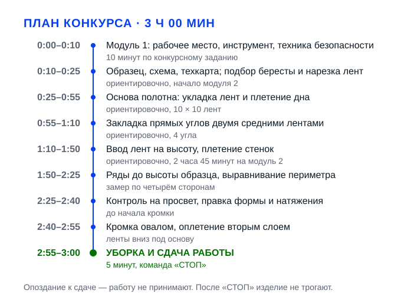
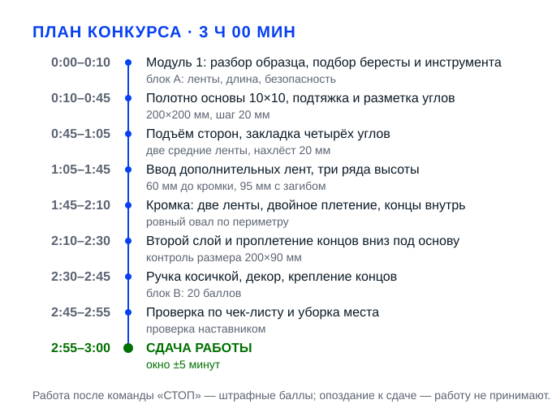
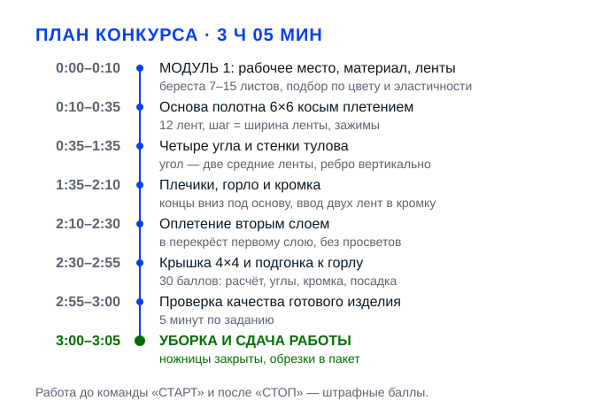

Изготовление художественных изделий из бересты (Р)
Задания ниже — официальные файлы «Абилимпикс» (источник: abilympics-russia.ru), разложенные по категориям. Решения написаны по тексту задания, регламенту и критериям оценки; в них указано, что именно проверяет эксперт.
Школьник
14–16 лет, базовый уровень заданияВ официальном файле категории не разделены отдельными разделами — приводим задание целиком; различия по категориям смотрите в таблице модулей.
Пошаговое решение
Конкурсное задание категории «Школьники» — берестяная корзиночка в технике прямого плетения по образцу, который предъявляют только в день конкурса. На всю работу отводится 3 часа: 10 минут на подготовку рабочего места, 2 часа 45 минут на плетение и 5 минут на уборку. Оценивается сто баллов: 20 за подготовку — организацию места, безопасность, изучение образца и выбор материала по цвету, плотности и эластичности, и 80 за само плетение — основу полотна, ввод лент на высоту, стенки, прямые углы, высоту по периметру, кромку овалом, оплетение вторым слоем и мастерство. Ширина лент, технология и размер готового изделия должны совпадать с образцом, а последовательность работы — с технологической картой. Отдельно про штрафы: работа до команды «СТАРТ» и после «СТОП», телефон, разговоры со зрителями и использование инструмента не по назначению заносятся в протокол и перекрывают набранные баллы, поэтому дисциплина здесь стоит столько же, сколько техника.

Задача 1. Организовать рабочее место и инструментМодуль 1 · 10 баллов
На подготовку к работе по конкурсному заданию отводится 10 минут, и за них набирается ровно 10 баллов: 5 за организацию рабочего места, 3 за соблюдение требований пожарной безопасности и техники безопасности, 1 за чистый стол без разбросанных обрезков и 1 за аккуратно сложенный инструмент после работы. Эти баллы кажутся мелкими на фоне 80 баллов за само плетение, но берутся они проще всего — при условии, что вы раскладываете рабочее место по зонам осознанно, а не высыпаете инструмент из пакета на столешницу.
Действие 1.1. Разложить инструмент и материал по зонам
Шаг 1.1.1
Расстилаем на столе подкладочный пластиковый мат так, чтобы его левый край совпал с краем столешницы: под мат уходит вся стружка и всё, что случайно соскользнёт с ножниц. Ножницы «Гамма» ТС-100 с лезвием 50 мм кладём справа у самой кромки, ручками к себе, лезвиями от корпуса, маленькие ножницы — рядом, чуть ближе к середине. Костык и канцелярский нож в чехле убираем в дальний правый угол, чтобы за них не задевать локтем. Восемь металлических зажимов выкладываем ровным рядом слева, а металлическую линейку 30 см и карандаш — прямо перед собой, поперёк стола.
Организация рабочего места — это 5 баллов из 20 в модуле А, и ещё 1 балл даётся отдельно за то, что стол чистый, а обрезки бересты и инструменты не разбросаны. Разложенный по зонам инструмент экономит не баллы, а секунды: за 2 часа 45 минут плетения вы берёте ножницы и зажимы сотни раз, и каждый лишний поиск — это 3–5 секунд, вычтенных из времени на кромку. Эксперт смотрит не на красоту раскладки, а на то, возвращается ли инструмент на место по ходу работы.
Проверьте расстоянием: до ножниц — не дальше вытянутой руки без наклона корпуса, до зажимов — в пределах предплечья. Между матом и корзиной для мусора не должно быть ничего, через что приходится тянуться. Лезвия ножниц направлены от вас, ручки к вам, костык лежит рукоятью вправо, линейка не свисает с края стола.
Если инструмент сваливается кучей по центру, вы начнёте двигать его локтем, и эксперт снимет 1 балл за разбросанные инструменты и обрезки. Хуже другое: ножницы, лежащие лезвиями к работающей руке, при неловком движении режут ладонь, а это уже штраф за нарушение техники безопасности — минус 3 балла и запись в протокол.
Эксперт проходит вдоль рабочих мест в первые 5–7 минут модуля 1 и фиксирует, где что лежало в момент старта. Второй раз он смотрит на стол в середине плетения: оценивается не стартовая раскладка, а порядок, который вы удерживаете.
Шаг 1.1.2
Ставим мусорный пакет на 30 литров (размер 50 на 60 см, ПНД) справа от мата, но не под рукой — так, чтобы обрезки летели в него, а не на пол. Рядом с пакетом оставляем узкую полосу стола шириной 10–12 сантиметров: это зона отходов, куда складываются короткие обрезки, которые жалко выбрасывать сразу. Крупные отходы бересты после нарезки — всё, что короче 15 сантиметров, — уходят в пакет без раздумий, потому что в плетении корзиночки они уже не участвуют.
За чистый стол и убранные в мусорную корзину обрезки даётся отдельный 1 балл, и проверяется он дважды: в процессе работы и после её окончания. Но есть и вторая причина: обрезки бересты скользят по столешнице, попадают под основу полотна и дают перекос, который потом невозможно выправить. Пол в зоне конкурса должен оставаться чистым ещё и по требованиям безопасности — на упавшей ленте легко поскользнуться.
Посмотрите на пол под столом: там не должно быть ни одной ленты и ни одной полоски коры. Проверьте, что пакет не наклонён и не перевёрнут, а его край раскрыт на ширину ладони. Отдельная проверка — зона отходов: на ней лежат только короткие обрезки, пригодные для мелких элементов, и ничего больше.
Типичная ошибка — бросить обрезки на стол «пока не до них» и заняться плетением: к середине модуля под работой образуется подушка из стружки, изделие начинает качаться, а эксперт снимает балл за организацию места. Вторая ошибка — поставить пакет так далеко, что в него надо целиться: половина обрезков окажется на полу.
Эксперт заглядывает под стол, когда обходит площадку, и оценивает пол отдельно от столешницы. Чистый пол при грязном столе балл не спасает, а вот грязный пол портит впечатление от всей работы.
Шаг 1.1.3
Проверяем условия рабочего места до того, как сесть: стол должен быть устойчивым, без качания, площадью не меньше 3000 на 1900 миллиметров по нормам оснащения, а проход между рабочими местами — не уже 1,5 метра. Свет должен падать слева и чуть спереди, чтобы тень от руки не ложилась на линии разметки; при общем освещении ниже 300 люкс включаем настольную лампу, если она предусмотрена на площадке. Стул регулируем по высоте так, чтобы предплечье лежало на столе горизонтально, а колени были согнуты под прямым углом.
Требования к оснащению рабочего места с учётом нозологий прописаны в разделе 4 конкурсного задания: освещённость не менее 300 люкс, увеличенная зона на одно место и проход 1,5 метра. Не формальность: береста имеет тонкий рельеф, и при плохом свете вы не увидите ни просвета между лентами, ни перекоса кромки, а за просветы и плотность плетения в критериях есть баллы. Правильная посадка влияет на натяжение лент: при поднятых плечах руки устают к третьему ряду.
Проверьте три ощущения: спина не наклонена вперёд больше чем на десять градусов, предплечье лежит на столе без напряжения, ступни полностью стоят на полу. Тень от правой руки не должна закрывать ту линию, которую вы режете. Если стол регулируемый, зафиксируйте высоту и наклон до старта, а не в процессе.
Ошибка — сесть так, как удобно в первую минуту: через час спина устанет, натяжение лент станет неравномерным, и высота изделия по периметру поплывёт — это 3 балла из критерия соответствия высоты. Вторая ошибка — работать при свете справа: тень падает на разметку, лента режется на 1–2 миллиметра уже, и вся основа получается разнокалиберной.
Эксперт оценивает рабочее место в целом, включая посадку участника, потому что эргономика входит в критерий организации. Отдельно фиксируется, воспользовался ли участник правом на регулировку стола, если оно ему нужно.
Действие 1.2. Проверить инструмент и снять риски
Шаг 1.2.1
Берём ножницы ТС-100 и проверяем ход: лезвия должны смыкаться по всей длине без заедания, винт — быть затянут так, чтобы ножницы не болтались, но и не резали с усилием. Делаем три пробных реза по обрезку бересты: если лента мнётся и рвётся, а не режется, лезвия подтуплены или разведены, и такие ножницы нужно заменить у эксперта до старта. Маленькие ножницы с короткими лезвиями проверяем так же, но пробный рез делаем на узкой полоске, потому что ими подрезают концы, а не режут основные ленты.
Безопасность при использовании ножниц и костыка прямо названа в критериях: за соблюдение требований техники безопасности даётся 3 балла, а нарушение ведёт к штрафу в соответствующий протокол. Тупые ножницы — это не только потерянное время: мнущаяся лента рвётся по кромке, и потом её приходится подрезать, теряя ширину. Замена инструмента после команды «СТАРТ» занимает время модуля 2, которого и так впритык.
Три пробных реза должны дать три ровные полоски одинаковой ширины, без бахромы по краю. Винт проверяется пальцем: он не должен проворачиваться от лёгкого касания. Ручки не имеют трещин, а лезвия — зазубрин и следов клея от бересты.
Самая частая ошибка — начать работать ножницами, которые «вроде режут», и обнаружить проблему на десятой ленте, когда половина материала уже испорчена. Вторая — крутить винт ножниц голыми пальцами без отвёртки: сорванная резьба делает инструмент непригодным, а замена займёт время конкурса.
Эксперт проверяет инструмент на входе и во время работы, обращая особое внимание на то, закрыты ли ножницы в моменты, когда вы их кладёте. Это отдельный пункт культуры работы с инструментом.
Шаг 1.2.2
Осматриваем костык: это металлический крючок, которым направляют ленты и протаскивают их вниз под основу. Кончик должен быть гладким, без заусенцев и острой кромки — проведите по нему подушечкой пальца, она не должна цепляться. Если на конце есть шероховатость, обработайте её мелкой наждачной бумагой, которую обычно дают на площадке, или отложите костык и попросите замену. Шило и плоское шило на площадке запрещены, поэтому любые попытки работать ими — это сразу штраф.
Костык — единственный инструмент, который позволяет проплести концы лент вниз под основу, а это отдельный аспект критерия: оплетение вторым слоем оценивается в 5 баллов, и не проплетённые вниз ленты снижают результат до 2 баллов. Заусенец на кончике рвёт бересту на волокнах, и вместо аккуратного протаскивания получается рваная дыра в полотне, которую уже ничем не закрыть.
Проведите кончиком костыка по обрезку бересты: он должен скользить, оставляя светлую полосу без разрывов. Осмотрите изгиб крючка — он не должен быть разогнут, иначе лента соскакивает в самый неподходящий момент. Рукоять сидит плотно, не проворачивается в ладони.
Ошибка — взять костык, у которого кончик расплющен в отвёртку: такой инструмент не поддевает ленту, а прокалывает её, и в местах ввода остаются проколы, хорошо видимые на просвет. Вторая ошибка — использовать костык как рычаг, чтобы подтянуть ленту: он разгибается и перестаёт держать направление.
Эксперт отдельно смотрит на безопасность при работе с костыком и на то, не применяется ли инструмент не по назначению — это прямо названо в списке оснований для штрафных баллов.
Шаг 1.2.3
Раскладываем восемь металлических зажимов «крокодильчик» и проверяем пружины: каждый зажим должен сжиматься двумя пальцами и держать ленту, не оставляя вмятины. Канцелярский нож выдвигаем на 2–3 миллиметра, не больше, и сразу закрываем, если он не нужен: нож применяется только для подрезки ленты на мате и никогда — на весу. Все зажимы считаем вслух: по конкурсному заданию их выдаётся ровно восемь, и при нехватке вы будете вынуждены придерживать ленты рукой, что на прямом плетении почти всегда даёт перекос.
Зажимы — рабочий инструмент фиксации, без них основа полотна расползается при первом же перевороте. Плетение основы оценивается в 5 баллов, и плотность полотна зависит именно от того, насколько ровно вы держите ленты в начале. Канцелярский нож в списке разрешённого инструмента, но он же и главный источник порезов: лезвие, выдвинутое на сантиметр, при соскальзывании оставляет рану, а это штраф за технику безопасности и остановка работы.
Каждый зажим держит сложенную вдвое ленту и не сползает при лёгком рывке. Лезвие ножа выступает не больше чем на треть, ход выдвижения плавный, фиксатор щелчком держит положение. Все восемь зажимов на месте и лежат в одном ряду.
Ошибка — выдвинуть лезвие на всю длину «чтобы удобнее резать»: при первом же косом движении нож уходит в сторону. Вторая ошибка — зажимать ленту так, что остаётся след: вмятина на бересте не расправляется, и в готовом изделии она видна как тёмная полоса.
Эксперт проверяет, закрыт ли нож, когда вы его кладёте, и не оставлены ли зажимы на изделии в момент сдачи. Инструмент, оставшийся в работе, — это нарушение порядка сдачи.
Шаг 1.2.4
Достаём растительное масло, 20 граммов на участника, и готовим из него и бумажной салфетки промасленный тампон: наносим несколько капель на салфетку, а не на ленту напрямую. Этот тампон понадобится на этапе нарезки, чтобы лента стала эластичной и не ломалась на сгибах. Ставим его на мат в левом верхнем углу и следим, чтобы масло не попало на столешницу: жирное пятно останется на готовом изделии и на одежде.
Растительное масло в конкурсном задании предусмотрено именно для смазки лент и придания им эластичности. Сухая береста при перегибе на угол трескается, а трещина на углу — это прямая потеря баллов в критерии плетения прямых углов, где максимум 5 баллов. Смазанная лента гнётся по ребру без излома и лучше ложится в полотно, поэтому плотность плетения получается выше.
Проверьте на обрезке: смазанная лента при перегибе на 90 градусов не даёт белой полосы излома. Тампон влажный, но не мокрый — с него не должно капать при нажатии. Пальцы после работы с маслом вытираются салфеткой, иначе на бересте останутся тёмные отпечатки.
Ошибка — налить масло прямо на ленту: береста впитывает неравномерно, и на изделии остаются жирные пятна, которые не убираются. Вторая ошибка — смазать все ленты заранее и сразу: перемасленная лента растягивается, и высота изделия перестаёт держаться.
Эксперт смотрит на состояние лент в работе: пересушенная ломающаяся береста видна по белым надломам, а перемасленная — по лоснящейся поверхности. И то и другое снижает оценку за мастерство исполнения.
Действие 1.3. Подготовить себя к работе
Шаг 1.3.1
Снимаем украшения на запястьях и пальцах, убираем волосы под резинку или заколку, подворачиваем рукава выше локтя и убираем свисающие шарфы и длинные цепочки. Одежда должна быть такой, чтобы её край не попадал на мат: рукав, лежащий на столе, цепляет обрезки и тянет за собой уже сплетённую ленту. Если спецодежда выдана организаторами, надеваем её до входа в зону конкурса, а не после команды «СТАРТ».
Спецодежда, техника безопасности и личная гигиена названы в последовательности выполнения задания отдельным пунктом модуля 1. Длинный рукав опасен не метафорически: при работе ножницами ткань попадает под лезвие, и порез через рукав — это травма и остановка работы. Кольца оставляют царапины на отшлифованной поверхности бересты, а царапина на лицевом слое исправлению не подлежит.
Проверьте себя движением: поднимите руки вверх — ничего не должно свисать ниже локтя. Наклонитесь над столом — волосы не должны касаться мата. Снимите всё, что звенит и цепляется, включая часы с металлическим браслетом.
Частая ошибка — оставить на руке часы или браслет, потому что «они не мешают»: при плетении запястье прижимается к столу, и металл оставляет вмятины на лицевом слое лент. Вторая ошибка — надеть спецодежду уже после старта: время списывается из модуля, а замечание фиксируется в протоколе.
Эксперт фиксирует внешний вид участника до старта и делает пометки, если спецодежда появилась позже или надета не полностью. Отдельно отмечается, остаются ли рукава подвёрнутыми к концу модуля.
Шаг 1.3.2
Садимся так, чтобы корпус был на расстоянии ладони от края стола, а лента шла перед глазами, а не под наклоном. Обе руки работают над матом, левая придерживает основу, правая вводит ленту; локоть правой руки не висит в воздухе, а опирается на стол. Через каждые 25–30 минут делаем паузу на 30 секунд: разгибаем спину, смотрим в дальнюю точку зала, шевелим пальцами. Это не потеря времени, а профилактика судороги в кисти, которая на прямом плетении случается у всех.
Модуль 2 длится 2 часа 45 минут без перерыва, и это самая длинная непрерывная нагрузка на кисть за весь конкурс. Усталость проявляется в натяжении: к третьему ряду ленты начинают подтягиваться неравномерно, и высота изделия по периметру расходится — а за соответствие высоты по всему периметру даётся 5 баллов, и расхождение снижает результат до 3 или 2. Пауза на полминуты сохраняет ровность лучше, чем попытка потом выправить уже сплетённые стенки.
Проверьте посадку по трём точкам: стопы на полу, предплечье на столе, взгляд сверху на мат. Ощущение в кисти через час работы должно оставаться рабочим, без онемения пальцев. Если появилось покалывание в пальцах — опустите руки вниз и встряхните их десять секунд.
Ошибка — работать «на весу», держа основу в воздухе: так невозможно выдержать одинаковую плотность, и полотно получается волной. Вторая ошибка — терпеть онемение руки до конца модуля: к кромке пальцы перестают чувствовать натяжение, и зажимы затягиваются с разным усилием.
Эксперт оценивает эргономику рабочей позы как часть организации рабочего места и отмечает, если участник работает с опорой на предплечье или держит изделие на весу всё время.
Задача 2. Разобрать образец, схему и технологическую картуМодуль 1 · 10 баллов
По конкурсному заданию образец и схема плетения предъявляются только в день конкурса, поэтому первые десять минут уходят не на работу руками, а на работу глазами. Нужно измерить образец, посчитать в нём ленты, разобрать технологическую карту по этапам и понять, чем именно ваша корзиночка должна совпасть с предъявленной. На это выделено 10 баллов: 3 за то, что вы действительно уделили время изучению, 2 за правильный подсчёт количества лент и 5 за выбор материала по нужным качествам.
Действие 2.1. Измерить образец и разобрать схему
Шаг 2.1.1
Кладём образец на мат и снимаем четыре размера металлической линейкой 30 см: длину по наружной стороне, ширину, высоту стенки и толщину кромки. Записываем карандашом на свободном поле технологической карты, а не на ладони, и рядом ставим дату и время замера. Отдельно измеряем ширину одной ленты в трёх местах образца — у основания, в середине стенки и у кромки, потому что в готовом изделии лента слегка расплющивается и кажется шире, чем была в разметке.
Размер готового изделия должен соответствовать форме и размеру образца — это требование прописано в последовательности выполнения задания, а в критериях за него отвечают сразу два пункта: соответствие высоты по всему периметру и мастерство исполнения, где отдельно сказано, что формы и размеры не нарушены. Замер до начала плетения нужен ещё и для арифметики: от ширины ленты зависит, сколько лент войдёт в основу и сколько рядов надо сплести до нужной высоты.
Проверьте замер повторно через минуту: результат должен совпасть с точностью до 1 миллиметра. Линейка прикладывается плашмя, без наклона, начало шкалы совмещается с краем изделия, а не с первой риской. Ширина ленты на образце не должна отличаться больше чем на 1 миллиметр в трёх точках замера.
Ошибка — мерить образец на весу или наклонённой линейкой: погрешность в 3–4 миллиметра на глаз превращается в изделие другого размера. Вторая ошибка — измерить один раз и не записать: через сорок минут плетения цифра забывается, и сверить готовую корзиночку оказывается не с чем.
Эксперт наблюдает, пользуется ли участник линейкой и делает ли записи, потому что это прямо входит в критерий ознакомления с образцом и схемой. Записи на карте тоже видны при оценке.
Шаг 2.1.2
Считаем ленты на образце: сначала те, что идут в одном направлении и образуют основу дна, затем поперечные. Удобно вести счёт вслух и загибать пальцы через каждые пять лент, а результат сразу писать в карту — например, восемь на восемь или десять на десять, в зависимости от того, что предъявлено. Затем смотрим на схему: на ней то же количество обозначено квадратами, и если цифры расходятся, верим образцу, а расхождение показываем эксперту до старта.
За количество лент в работе отвечает отдельный аспект критерия на 2 балла, и проверяется он просто: эксперт пересчитывает ленты в вашей основе. Но важнее технологическая сторона — при неверном числе лент не совпадёт ни размер дна, ни число угловых лент, а прямой угол формуется именно из двух средних лент основы. Ошибка в счёте на старте стоит не 2 балла, а всего модуля Б, потому что переделывать дно после вплетения стенок невозможно.
Сверьте два результата: число лент, посчитанное по образцу, и число, указанное в схеме и технологической карте. Совпадать должны и общее количество, и соотношение направлений. Дополнительно проверьте, что ленты в основе лежат с шагом, равным их ширине, — тогда на дне не будет ни просветов, ни нахлёстов.
Типичная ошибка — посчитать только видимые сверху ленты и пропустить те, что ушли под кромку: в готовом изделии их не видно, а в работе они участвуют. Вторая ошибка — взять «на одну ленту больше для плотности»: дно перестаёт быть квадратным, и углы не сходятся.
Эксперт подходит к участнику в модуле 1 и просит показать, сколько лент заложено в основу. Ответ по памяти, без обращения к образцу, обычно означает, что схема не разобрана.
Шаг 2.1.3
Читаем технологическую карту сверху вниз и размечаем её этапы: сначала основа полотна, затем закладка прямых углов, потом ввод лент на высоту и плетение стенок, после — кромка овалом и оплетение вторым слоем. У каждого этапа помечаем карандашом, сколько времени он займёт, из расчёта 2 часов 45 минут на весь модуль. Полезно подчеркнуть в карте те операции, которые вы делаете медленнее всего, и оставить им запас.
Последовательность изготовления должна соответствовать этапам технологической карты — это отдельное требование задания, и нарушенный порядок эксперт видит сразу: например, кромка, начатая до выравнивания высоты, не даст потом выровнять периметр. Планирование времени — единственный способ дойти до оплетения вторым слоем, за которое дают 5 баллов и которое чаще всего просто не успевают сделать.
Проверьте план арифметикой: сумма времени по этапам должна укладываться в 165 минут с запасом 10–15 минут на непредвиденное. На дно и подъём стенок отведите примерно половину, на кромку и второй слой — не меньше 25 минут, потому что именно там формируется оценка за мастерство.
Ошибка — начать плести, не дочитав карту до конца: тогда про оплетение вторым слоем вспоминают за десять минут до «СТОП», и вместо 5 баллов получают 2 или ничего. Вторая ошибка — распределить время равномерно, не учитывая, что кромка всегда идёт медленнее, чем кажется.
Эксперт смотрит, сверяется ли участник с картой по ходу работы: открытая карта на столе и отметки карандашом читаются как понимание технологии, а плетение «по интуиции» — как отсутствие плана.
Действие 2.2. Подобрать бересту по цвету, плотности и эластичности
Шаг 2.2.1
Выкладываем на мат все выданные листы бересты, от 4 до 10 штук по норме расходных материалов, и раскладываем их лицевой стороной вверх. Сортируем по оттенку: светлые, кремовые, золотисто-коричневые и тёмные, с налетом. Для корзиночки в прямом плетении нужны минимум два оттенка — из них делается разница между дном и стенками или полоса по высоте. Сразу откладываем в сторону листы с явными дефектами: наростами, трещинами, следами луба.
Выбор материала по необходимым качествам оценивается в 5 баллов — это самый дорогой аспект всего модуля А, дороже, чем организация места. Цвет важен не только эстетически: береста разных оттенков имеет разную плотность, и если поставить тёмную жёсткую ленту рядом со светлой мягкой, при натяжении светлая пойдёт волной. Кроме того, два оттенка в изделии — это то, что отличает работу с оценкой за мастерство от безликой корзиночки.
Разложите листы так, чтобы был виден весь запас, и мысленно отметьте, из какого листа пойдут ленты основы, а из какого — стенок и кромки. На просвет у хорошей бересты виден ровный слоистый срез без тёмных включений. Отобранные листы переверните лицевой стороной вниз, чтобы не поцарапать поверхность при разметке.
Ошибка — взять первый попавшийся лист, потому что он лежит сверху: часто именно он имеет самое тёмное, грубое место. Вторая ошибка — смешать в одной стенке листы разной толщины: полотно получается ступенькой, и это видно на просвет между лентами.
Эксперт оценивает подбор материала в модуле 1, когда участник ещё только перебирает листы, и потом сверяет результат: работают ли в изделии разные оттенки, сочетаются ли они.
Шаг 2.2.2
Проверяем каждый отобранный лист на плотность и эластичность руками: сгибаем угол листа на 90 градусов и отпускаем. Хорошая береста пружинит и возвращается, не оставляя белой полосы излома; пересушенная ломается с сухим щелчком, перележавшая — мнётся как бумага. Толщину проверяем ногтем: слишком толстая кора на углах даёт грубый залом, слишком тонкая рвётся при подтягивании. Нормой считается толщина, при которой лист гнётся без усилия, но не просвечивает насквозь.
Плотность, эластичность и пластичность берестяного материала входят в требования к квалификации по профессии изготовителя изделий из бересты, и в критериях это отражено через плотность плетения и отсутствие просветов. Хрупкая береста не выдержит перегиба на четырёх углах, а именно углы дают 5 баллов. Слишком толстая лента не даст затянуть кромку, и овал получится рыхлым, что снижает оценку за плетение кромки с 5 до 3 баллов.
Отобранный лист должен выдержать двойной перегиб в одну и другую сторону без трещины. На изломе не должно быть белой полосы, а на поверхности — сухих чешуек, которые осыпаются при сгибе. Если лист при разгибании не возвращает форму, он пойдёт только на мелкие элементы декора, но не на основу.
Ошибка — отобрать красивый с виду, но пересушенный лист: он ломается уже на втором угле, и всю стенку приходится переделывать. Вторая ошибка — взять толстую кору, рассчитывая, что так прочнее: толстая лента не гнётся по ребру угла и раздвигает соседние, образуя щель.
Эксперт проверяет эластичность бересты на образцах, которые остаются у участника, и обращает внимание, есть ли в изделии надломы на сгибах. Отдельно отмечается, нет ли в готовом изделии белых надломов на сгибах.
Шаг 2.2.3
Раскладываем отобранные листы по назначению: один светлый лист — на лицевые ленты стенок, второй, контрастный, — на кромку и на полосу по низу, третий уходит в запас на замену брака. Лицевую сторону определяем по более гладкой поверхности с характерным налётом; она всегда смотрит наружу. Внутреннюю, шероховатую сторону оставляем внутри изделия, потому что она лучше держит трение и ленты не скользят друг по другу.
Разделение листов по назначению — это и есть осмысленный выбор материала, за который дают 5 баллов: эксперт видит, что участник понимает, какая лента куда идёт. Полоса другого оттенка по низу изделия не только украшает — она подчёркивает линию дна и делает ровность первого ряда видимой, а ровность первого ряда входит в критерий плетения основы полотна на 5 баллов.
Проверьте, что на лицевых лентах нет пятен, царапин и следов карандаша. Контрастный лист отличается по оттенку заметно, но не спорит с основным: сочетание должно читаться как пара, а не как случайные обрезки. Запасной лист лежит отдельно и не путается с рабочими.
Ошибка — положить ленту шероховатой стороной наружу: поверхность выглядит матовая и «пыльная», а на кромке она быстро обтрёпывается. Вторая ошибка — пустить контрастную ленту в случайном месте: пятно другого цвета посреди стенки читается как ошибка, а не как декор.
Эксперт оценивает цветовое сочетание и оригинальность решения глазами на расстоянии вытянутой руки, когда работа уже сплетена. Случайные цветовые вставки снижают оценку за мастерство исполнения.
Действие 2.3. Нарезать и откалибровать ленты
Шаг 2.3.1
Размечаем ленты карандашом по металлической линейке: ширина берётся из технологической карты и должна быть одинаковой для всех лент, обычно около 20 миллиметров. Линии ведём вдоль направления волокон, от кромки листа к кромке, без нажима, тонким грифелем. Разметку начинаем от ровного края листа: кривой край сначала подрезаем, иначе все последующие ленты унаследуют его кривизну. Размечаем сразу весь лист, а не по одной ленте.
Ширина берестяных лент должна соответствовать образцу — это прямо записано в требованиях к выполнению задания. Ровная разметка экономит материал: на листе умещается целое число лент, а остаток уходит в узкую полосу для кромки или в отходы. Разметка вдоль волокон важна потому, что поперёк береста расслаивается и лента рвётся при первом же натяжении, а натяжение в прямом плетении постоянное.
Проверьте первую размеченную полосу: расстояние между линиями одинаково по всей длине, отклонение не больше половины миллиметра. Линии параллельны кромке листа и не сходятся к концу. Карандаш не продавил поверхность — вдавленная линия останется на лицевой стороне после плетения.
Ошибка — размечать на глаз, «примерно на палец»: ленты разной ширины дают полотно, в котором одна сторона выше другой, и высота по периметру расходится. Вторая ошибка — резать поперёк волокон: такая лента расслаивается уже на третьем ряду.
Эксперт измеряет ширину лент линейкой в готовом изделии и сравнивает с образцом. Разнокалиберные ленты видны сразу по неровной линии плетения. Он же смотрит ровность линии плетения вдоль стенки.
Шаг 2.3.2
Режем ножницами ТС-100 с широким лезвием 50 мм: лист кладём на подкладочный мат, левой рукой придерживаем его у самой линии реза, правой ведём ножницы длинными движениями от дальнего края к себе. Режем не по линии, а чуть сбоку от неё, оставляя грифель на выбракованной стороне: тогда на рабочей ленте не остаётся графита. Рез ведём одним движением на всю длину, а не «откусываем» короткими щелчками, иначе на кромке появляется бахрома.
Ножницы для нарезки лент предусмотрены в оснащении рабочего места именно с широким лезвием, потому что узкое лезвие мнёт бересту и оставляет рваный край. Ровный рез — это ровная кромка ленты, а кромка видна в готовом изделии по всей высоте. Кроме того, при резке на мате лезвие не тупится о столешницу, и инструмент остаётся рабочим до конца модуля, что важно, когда пара ножниц всего одна.
Проверьте срез на свет: он должен быть светлым, ровным, без задиров и без бахромы по краю. Ширина ленты в начале и в конце отличается не больше чем на полмиллиметра. Мат под листом цел, на столешнице нет царапин от кончиков ножниц.
Ошибка — резать «по линии», срезая грифель: графит въедается в поверхность бересты, и на лицевой стороне остаётся серая полоса, которую уже не убрать. Вторая ошибка — резать на весу, держа лист на коленях: срез получается ступенькой.
Эксперт обращает внимание на культуру реза: закрыты ли ножницы после работы, лежат ли они лезвиями от работающей руки. Это относится к критерию безопасности на 3 балла.
Шаг 2.3.3
Калибруем нарезанные ленты: раскладываем их в ряд и промеряем ширину линейкой через каждые три-четыре ленты, а также на концах. Те, что вышли шире или уже на 1–2 миллиметра, откладываем в отдельную пачку — они пойдут на кромку, где ширина не критична. Концы лент подрезаем маленькими ножницами под углом 45 градусов: косой срез легче вводится под ленту и не создаёт утолщения в месте ввода.
Калибровка — это то, что отличает аккуратное плетение от ремесленного: при разной ширине лент полотно идёт волной, и в критерии плетения основы появляется формулировка «не соответствует образцу», которая снижает балл с 5 до 3. Косой срез концов нужен, чтобы при вводе новой ленты на высоту место стыка не выступало бугром — за технологию ввода лент дают 5 баллов.
Все ленты в рабочей пачке имеют одинаковую ширину в пределах половины миллиметра. Косой срез на конце ровный, без задиров, длина среза примерно равна ширине ленты. Отдельно проверьте, что среди рабочих нет лент с надломом или тёмным пятном.
Ошибка — оставить в работе все нарезанные ленты без разбора: две-три нестандартные незаметно уходят в стенку, и на просвет появляется щель. Вторая ошибка — обрезать концы прямо, под 90 градусов: такой конец при вводе образует заметное утолщение.
Эксперт проверяет соответствие ширины лент образцу и смотрит на места ввода лент в стенках — аккуратный стык читается как владение технологией. Отдельно проверяется, нет ли на рабочих лентах тёмных пятен и надломов.
Шаг 2.3.4
Раскладываем готовые ленты по направлению и назначению: ленты основы — в одну стопку, поперечные — в другую, кромочные — в третью, и слегка промазываем их тампоном с растительным маслом, если береста суховата. Смазываем не все сразу, а по мере работы: лента, полежавшая в масле, растягивается и теряет упругость. Стопки накрываем обрезком листа, чтобы ленты не пересыхали от воздуха и не запылялись.
Растительное масло в количестве 20 граммов предусмотрено в оснащении именно для смазки лент и придания эластичности. Упругая лента держит натяжение и не провисает между рядами — отсюда берётся плотность плетения, оцениваемая в критериях отдельно. Разложенные по назначению ленты ещё и экономят время: вместо поиска нужной длины вы берёте её из нужной стопки.
Смазанная лента гнётся по ребру без белой полосы, но не оставляет жирного следа на пальцах при сжатии. Стопки не смешиваются, ленты основы длиннее поперечных и лежат отдельно. Кромочные ленты отобраны самые ровные, без тёмных пятен.
Ошибка — смазать весь запас маслом сразу: к концу модуля ленты становятся дряблыми, и стенка теряет форму. Вторая ошибка — держать ленты открытыми на столе: они собирают пыль, а пыль на бересте видна после плетения как серая сыпь.
Эксперт смотрит на состояние лент в работе: лоснящаяся поверхность и провисшие ряды читаются как перемасленный материал. Перемасленная лента растягивается, и высота изделия перестаёт держаться.
Задача 3. Сплести дно и стенки в технике прямого плетенияМодуль 2 · 50 баллов
Основная часть работы — 2 часа 45 минут модуля 2 — уходит на полотно: сначала основа дна, потом закладка прямых углов, потом ряды на высоту. Именно здесь разыгрываются 50 баллов: по 10 за технику плетения основы, за ввод лент на высоту, за плетение стенок, за прямые углы и за соответствие высоты по всему периметру. Логика оценки жёсткая: каждый следующий ряд закрепляет то, что сделано в предыдущем, поэтому исправлять приходится не ряд, а всю стенку, а времени на переделку в конкурсном графике нет.
Действие 3.1. Уложить и проплести основу полотна
Шаг 3.1.1
Укладываем ленты первого направления на мат строго параллельно друг другу: расстояние между соседними лентами равно их ширине, ни больше ни меньше. Выравниваем концы по одной линии, прижимаем верхние концы зажимами к мату и проверяем, что ленты не перекручены и лежат лицевой стороной вверх. Если лент по счёту восемь или десять, середина полотна приходится между четвёртой и пятой лентой — эту середину отмечаем для себя, потому что от неё потом пойдёт закладка угла.
Укладка лент по горизонтали и вертикали — базовый навык компетенции, и технология плетения основы полотна оценивается в 5 баллов. Ровно уложенные ленты с шагом в ширину дают квадратное дно без просветов; сдвиг хотя бы на два миллиметра приводит к тому, что дальше полотно идёт ромбом, и прямые углы уже не формуются. Зажимы на этом этапе обязательны: незафиксированные ленты расползаются при вводе первой поперечной.
Проверьте линейкой: расстояние между лентами одинаково по всей длине и равно ширине ленты с точностью до миллиметра. Концы лент лежат на одной линии, полотно не перекошено, ленты не перекручены. Середина полотна совпадает с серединой образца.
Ошибка — уложить ленты с нахлёстом в один миллиметр, чтобы «было плотнее»: полотно начнёт горбиться, и дно выйдет выпуклым. Вторая ошибка — не поставить зажимы на верхние концы: при первом же проплетании ленты сдвигаются, и приходится начинать заново.
Эксперт смотрит на основу в первые минуты плетения и оценивает её по двум признакам: параллельность лент и отсутствие просветов между ними. Дальше он сверяет с образцом количество лент.
Шаг 3.1.2
Берём первую поперечную ленту и проплетаем её через одну: над первой лентой основы, под второй, над третьей, под четвёртой, и так до конца ряда. Ленту не проталкиваем силой, а вводим косым срезом и подтягиваем за конец, пока она не ляжет ровно. Концы выравниваем по краям полотна с одинаковым выпуском, примерно в две ширины ленты, и фиксируем зажимами.
Чередование «над-под» и есть прямое плетение, названное в задании основным для категории школьников. Ошибка в чередовании видна сразу: вместо шахматного рисунка появляется полоса, где две ленты лежат одна над другой, и в этом месте полотно расходится. Критерий различает три состояния — технология не нарушена (5 баллов), не соответствует образцу (3 балла) и нарушена (2 балла), то есть сбитый рисунок стоит сразу 3 балла из 10 за основу.
Проверьте рисунок глазами по диагонали: ленты должны образовывать ровную шахматку, каждая следующая поперечная смещена относительно предыдущей на одну ленту основы. Полотно лежит плоско, без волны. Края ровные, выпуски концов одинаковые с обеих сторон.
Ошибка — начать вторую поперечную ленту в той же фазе, что и первую: вместо шахматки получается решётка с двойными перекрытиями. Вторая ошибка — тянуть ленту за конец слишком сильно, отчего она вытягивается и становится уже остальных.
Эксперт проверяет именно рисунок переплетения и сравнивает его с образцом. Сбитая фаза читается мгновенно, потому что рисунок на образце геометрически правильный.
Шаг 3.1.3
Доплетаем дно до нужного количества лент: каждая следующая поперечная лента идёт в противофазе к предыдущей, то есть сдвигается на одну ленту основы. Дойдя до края, подтягиваем ряд ладонью от середины к краям, выравниваем плотность и только потом берём следующую ленту. Последнюю ленту заводим с той же стороны, что и первую, чтобы замкнуть рисунок и получить ровный край.
Плотность плетения основы и отсутствие пространств между звеньями — это отдельный аспект в критериях, а ровный край дна определяет, как встанет первый ряд стенок. Если дно сплетено с разной плотностью, его углы окажутся на разной высоте, и поднимать стенки придётся по кривой линии, что сразу видно на готовом изделии и снимает баллы за прямые углы.
Смотрим на дно на просвет: щелей между лентами быть не должно, свет проходит только через поры самого материала. Края дна ровные, углы полотна составляют 90 градусов — проверяется угольником или сравнением диагоналей, они должны быть равны. Число лент совпадает с посчитанным по образцу.
Ошибка — плести дно «до конца листа», не считая ленты: полотно получается прямоугольным вместо квадратного, и при подъёме стенок один угол оказывается сдвинут. Вторая ошибка — подтягивать ряд за один конец: полотно идёт клином.
Эксперт пересчитывает ленты в основе и оценивает плотность дна на просвет. Расхождение по числу лент с образцом отражается отдельной строкой в протоколе.
Шаг 3.1.4
Ставим зажимы по периметру дна, распределив восемь штук равномерно: по два на противоположные стороны и по одному в помощь на углах. Затем ладонями проглаживаем полотно от середины к краям, чтобы выровнять натяжение, и даём ему «отлежаться» минуту под зажимами. За это время проверяем дно по образцу и, если нужно, поправляем крайние ленты, пока они ещё двигаются свободно.
Фиксация зажимами — не формальность: при закладке углов полотно испытывает рывок, и незакреплённое дно складывается гармошкой, после чего восстановить геометрию почти невозможно. Восемь зажимов в оснащении выданы именно с расчётом на четыре стороны и четыре угла. Минута на выравнивание натяжения экономит потом двадцать минут на правку стенок.
Проверьте диагонали: они равны, отклонение не больше двух миллиметров. Полотно лежит плоско, не качается при нажатии пальцем в центр. Ленты не вытянуты волной, зажимы не оставили вмятин на лицевой стороне.
Ошибка — поставить все восемь зажимов на одну сторону: противоположный край гуляет, и угол закладывается косо. Вторая ошибка — оставить зажим на середине лицевой ленты: вмятина от пружины останется на изделии навсегда.
Эксперт оценивает подготовку полотна к подъёму стенок как часть техники плетения основы и отмечает, держится ли геометрия дна к моменту закладки углов.
Действие 3.2. Заложить прямые углы и вывести ленты на высоту
Шаг 3.2.1
Находим на каждой стороне дна две средние ленты — те, что ближе всего к середине стороны, — и закладываем угол именно ими: одну поднимаем вверх по ребру, вторую огибаем вокруг неё и прижимаем. Ребро формируем по линейке, приставляя её к линии сгиба, чтобы угол получился острым, а не скруглённым. Сгиб проглаживаем ногтем большого пальца через обрезок бересты, чтобы не оставить лоснящегося следа на лицевой стороне.
Плетение прямых углов — отдельный критерий на 10 баллов, и технология закладки угла двумя средними лентами описана как правильная. От угла зависит вся геометрия: если ребро скруглено, изделие получится с мягкими боками, а сравнение с образцом будет не в вашу пользу — это состояние «не соответствует образцу», то есть 3 балла вместо 5. Пересушенная береста на ребре ломается, поэтому перед закладкой угла смазываем место сгиба масляным тампоном.
Проверьте угол угольником или сложенным листом бумаги: отклонение от 90 градусов не должно превышать двух-трёх градусов. Ребро острое, без белой полосы излома и без щели между лентами. Высота двух соседних лент на углу одинаковая.
Ошибка — заложить угол крайними лентами: тогда угол уезжает наружу, и изделие получается с перекошенным дном. Вторая ошибка — сгибать ленту без смазки: на ребре появляется белая полоса, которая на готовом изделии выглядит как трещина.
Эксперт осматривает все четыре угла и проверяет их на просвет и на ощупь. Скруглённый или разорванный угол фиксируется как техническое нарушение.
Шаг 3.2.2
Ведём первый ряд по периметру: ленту за лентой огибаем изделие, проплетая каждую вертикальную ленту через одну, и на каждом углу делаем перегиб по ребру. Ряд замыкаем в том же месте, где начали, следя, чтобы стык пришёлся на середину стороны, а не на угол. По ходу ряда ставим зажимы на углы — они не дают ребру разойтись, пока полотно не набрало жёсткость.
Первый ряд — самый трудный: он задаёт и высоту, и форму. Критерий плетения стенок изделия на высоту различает три состояния, и «технология не нарушена, соответствует образцу» — это 5 баллов из 10. Стык на углу — типичная причина утолщения: там и без того две ленты, а третья делает угол вдвое толще остальных, и он выпирает на готовом изделии.
Проверьте после первого ряда: все четыре стороны одинаковой высоты, углы прямые, ленты лежат с одинаковым натяжением. Полотно не заваливается внутрь или наружу. Стык ленты находится на середине стороны и не заметен на общем рисунке переплетения.
Ошибка — вести ряд по кругу, не закрепляя углы: к третьему ряду ребро разъезжается, и угол становится округлым. Вторая ошибка — замкнуть ряд на углу: там образуется бугор, который невозможно убрать без переделки ряда.
Эксперт смотрит на первый ряд внимательнее, чем на последующие: по нему видно, усвоена ли технология. Ровный первый ряд обычно означает, что и дальше работа пойдёт правильно.
Шаг 3.2.3
Когда рабочая лента заканчивается, вводим новую: конец обрезаем косо под 45 градусов, новый конец тоже подрезаем косо и накладываем его на старый внахлёст на длину двух-трёх ширин ленты. Место стыка заводим под вертикальную ленту основы и прижимаем зажимом до тех пор, пока сверху не ляжет следующий ряд. Стык всегда располагаем на середине стороны, разнося его от предыдущего стыка не меньше чем на треть периметра.
Владение техникой и технологией ввода лент на высоту изделия оценивается в 10 баллов, причём соответствие образцу проверяется отдельно. Косой срез и нахлёст в две-три ширины дают плавное утолщение, которое в плетении читается как обычная лента; прямой стык в торец даёт заметную ступеньку. Стыки, собранные в одном месте, создают локальное утолщение, из-за которого стенка начинает выпирать именно там.
Проведите пальцем по месту ввода: оно не должно цепляться и выступать над общей плоскостью больше чем на полмиллиметра. Конец не выглядывает из-под переплетения ни снаружи, ни изнутри. Стыки по периметру разнесены, на одном углу их нет вовсе.
Ошибка — стыковать ленты в торец, «чтобы не было видно»: на изделии это самое заметное место, потому что там образуется щель. Вторая ошибка — вводить новую ленту на углу: угол утолщается, и заложенное ребро распрямляется.
Эксперт осматривает стенки изнутри и снаружи и ищет места ввода лент. Ровный плавный стык читается как владение технологией, а торчащие концы — как нарушение.
Шаг 3.2.4
Выводим на высоту все ленты, которых не хватает по схеме: обычно это две дополнительные ленты, которые вводятся после первого-второго ряда. Вводим их симметрично, с противоположных сторон, чтобы натяжение по периметру осталось одинаковым, и сразу проплетаем ими полный круг. Каждую новую ленту предварительно проглаживаем между пальцами, чтобы она легла без волны.
Симметричный ввод дополнительных лент — условие ровной высоты: если обе ленты завести с одной стороны, эта сторона начнёт подниматься быстрее, и к моменту кромки разница по высоте достигнет сантиметра. За соответствие высоты по всему периметру даётся 10 баллов, и любое расхождение сразу переводит работу в состояние «не все стороны равны по высоте» — 3 балла.
После ввода посчитайте ленты по периметру и сравните с числом на образце: количество должно совпадать по каждой стороне отдельно. Высота всех четырёх сторон на этом этапе одинакова в пределах одного миллиметра. Полотно не перекошено, рисунок переплетения не сбился.
Ошибка — ввести дополнительные ленты обе с удобной, правой стороны: работа идёт быстрее, но стенка заваливается. Вторая ошибка — вводить ленту, не подрезав конец: она упирается в переплетение и не доходит до края, оставляя непроплетённый участок.
Эксперт пересчитывает ленты в работе и сверяет их расположение с образцом. Несимметричный ввод виден по наклону стенок. Отдельно фиксируется, одинаково ли количество лент по каждой стороне.
Действие 3.3. Вывести стенки на высоту образца
Шаг 3.3.1
Плетём ряды один за другим, каждый раз доводя ленту до места начала и подтягивая её до одинакового натяжения. Ведём счёт рядов вслух и отмечаем карандашом на карте каждый законченный ряд. После каждого ряда изделие поворачиваем на 90 градусов, а не тянемся через стол: так натяжение правой и левой руки остаётся одинаковым, и стенка не уходит винтом.
Высота изделия должна соответствовать образцу, и считать ряды — самый надёжный способ её выдержать, потому что на глаз разница в один ряд почти не видна, а на сравнении с образцом читается сразу. В критериях за высоту по всему периметру даётся 10 баллов. Поворот изделия вместо вытягивания руки — приём, который сохраняет равномерность натяжения и предохраняет от перекоса, оцениваемого в пункте плотности плетения.
После каждого третьего ряда измеряйте высоту линейкой в четырёх точках — по серединам сторон. Расхождение не должно превышать одного миллиметра, иначе следующий ряд нужно плести с подтяжкой отстающей стороны. Число рядов на каждой стороне одинаковое.
Ошибка — плести «пока не закончится лента»: высота получается случайной, и подогнать её под образец уже нельзя. Вторая ошибка — работать, не поворачивая изделие: правая сторона подтягивается сильнее, и стенка идёт клином.
Эксперт измеряет высоту изделия линейкой по всем четырём сторонам в момент оценки и сравнивает с образцом. Расхождение больше двух миллиметров фиксируется отдельно.
Шаг 3.3.2
Выходим на высоту образца и выравниваем периметр: кладём изделие на стол, ставим линейку вертикально у каждой из четырёх сторон и записываем значения. Если одна сторона выше, её больше не проплетаем, а отстающие доводим дополнительными рядами на нужном участке. Верхние концы лент подрезаем на одинаковую длину — по две ширины ленты на каждую, этого хватит на кромку.
Соответствие высоты по всему периметру — это 10 баллов, причём критерий прямо различает два нарушения: «не все стороны равны по высоте» (3 балла) и «высота не соответствует по всему периметру» (2 балла). Выравнивание до кромки — последняя возможность исправить геометрию, потому что после обводки овалом верх фиксируется окончательно. Длина выпусков важна: короткий конец не проплетётся под основу, и кромка разойдётся.
Все четыре замера укладываются в допуск плюс-минус один миллиметр от размера образца. Линия верха ровная, без ступенек на переходах между рядами. Выпуски концов одинаковой длины и достаточно длинные для проплетения.
Ошибка — оставить «на глаз» и надеяться, что на готовом изделии не видно: разница в 4–5 миллиметров видна сразу, особенно на фоне ровного образца. Вторая ошибка — подрезать концы слишком коротко: кромка цепляется за них и расползается уже при оплетении вторым слоем.
Эксперт ставит изделие рядом с образцом и смотрит линию верха на просвет. Ровная кромка по всему периметру — самый заметный признак аккуратной работы.
Шаг 3.3.3
Правим форму до начала кромки: сжимаем изделие ладонями с двух сторон, выравнивая квадрат, и подтягиваем отдельные ленты костыком, если где-то образовался просвет. Сильно тянуть нельзя — береста не возвращается обратно, поэтому подтяжка делается короткими движениями по сантиметру с проверкой после каждого. Стенки ставим вертикально, проверяя угол между дном и стенкой угольником или линейкой.
Правка формы — последний момент, когда изделие ещё можно выровнять без переделки. Стенки, заваленные внутрь, уменьшают внутренний объём и искажают пропорции, а критерий мастерства исполнения требует, чтобы формы и размеры были не нарушены. Костык при подтяжке работает как направляющий инструмент, а не как рычаг, и это прямо связано с безопасностью его использования.
Поставьте изделие на стол: оно стоит устойчиво, не качается, все четыре стенки вертикальны. Угол между дном и стенкой близок к 90 градусам. Просветов между лентами нет ни на одной стороне, включая углы.
Ошибка — тянуть ленту сильно, чтобы убрать просвет: она вытягивается, и на соседнем участке просвет становится шире. Вторая ошибка — править форму уже после начала кромки: обводная лента фиксирует перекос, и вернуть геометрию нельзя.
Эксперт проверяет устойчивость изделия на столе и вертикальность стенок. Заваленные стенки читаются как нарушение формы, даже если плетение технически верное.
Действие 3.4. Проконтролировать полотно на просвет и на ощупь
Шаг 3.4.1
Поднимаем изделие к свету — к окну или к лампе — и смотрим сквозь стенку. Щели между лентами видны как яркие полоски, а не как общая мутность материала. Каждую найденную щель отмечаем пальцем и подтягиваем соседние ленты костыком по направлению плетения, а не поперёк. Осматриваем изделие с четырёх сторон и снизу, не пропуская дно.
Плотность плетения и отсутствие пространств между звеньями — прямо названный аспект в критериях, за него начисляются баллы и в блоке плетения основы, и в блоке кромки. Просветы появляются там, где лента при плетении была недотянута, и именно они первыми бросаются в глаза при сравнении с плотным образцом. Проверка на просвет занимает две минуты и спасает несколько баллов.
На просвет не должно быть ни одной сквозной щели — свет проходит только через поры самого материала, равномерно по всей площади. Проверьте также дно: изделие, поставленное на стол, не просвечивает по линии соприкосновения. Поверхность на ощупь ровная, без бугров и впадин.
Ошибка — искать просветы, глядя на изделие сверху: сквозные щели видны только на просвет или сбоку. Вторая ошибка — подтягивать ленту поперёк плетения: она сдвигает соседние и увеличивает щель в другом месте.
Эксперт проверяет плотность именно на просвет, поэтому участник, который сам делает эту проверку, обычно приносит на оценку более плотное изделие.
Шаг 3.4.2
Проверяем каждый из четырёх углов отдельно: ставим изделие на угол стола и смотрим, совпадает ли ребро с кромкой, затем проводим пальцем по всей высоте ребра. Острый угол ощущается как чёткая линия, скруглённый — как мягкий переход. Если угол «поплыл», подтягиваем угловые ленты костыком по направлению плетения и ставим зажим прямо на ребро до начала кромки, чтобы оно держалось.
Технология плетения прямых углов — 10 баллов, и это самый «дорогой» угол в конкурсном задании. Именно углы определяют, читается ли изделие как традиционная корзиночка или как бесформенный мешок: образец имеет чёткие рёбра, и сравнение идёт по ним. Скруглённый угол нельзя исправить после кромки, потому что обводная лента зафиксирует именно скругление.
Все четыре угла прямые в пределах двух-трёх градусов, рёбра острые и одинаковые по высоте. На ребре нет белой полосы излома и разрыва ленты. Изделие, поставленное на любой из углов, стоит устойчиво. Углы одинаковы по высоте, иначе при кромке верх пойдёт ступенькой.
Ошибка — осматривать углы только снаружи: изнутри скругление видно лучше, потому что там нет натяжения. Вторая ошибка — подтягивать угол после того, как заложены соседние ряды: он распрямляется обратно через два ряда.
Эксперт осматривает углы изнутри и снаружи и сравнивает их с образцом. Скруглённые углы фиксируются как техническое нарушение с потерей баллов. Острые рёбра одинаковой высоты — признак правильной закладки угла.
Шаг 3.4.3
Даём изделию отлежаться под зажимами 2–3 минуты и проверяем, не просело ли полотно: береста имеет остаточную упругость и после снятия натяжения слегка садятся ряды. Если какая-то сторона просела больше других, добавляем один ряд на этом участке. Затем снимаем карандашные метки с лент мягкой резинкой и убираем с полотна масляные отпечатки пальцев сухой салфеткой.
Остаточная усадка — объективное свойство бересты, и именно из-за неё измерения, сделанные сразу после плетения, не совпадают с финальными. Дать изделию отлежаться перед кромкой — значит зафиксировать кромку по фактической, а не по промежуточной высоте, а за соответствие высоты по периметру дают 10 баллов. Карандашные метки и масляные пятна на лицевой стороне снижают оценку за мастерство исполнения.
Повторный замер высоты после отлеживания отличается от предыдущего не больше чем на миллиметр. Лицевая сторона чистая: без графита, без тёмных отпечатков, без лоснящихся участков. Зажимы сняты, на лентах нет вмятин.
Ошибка — начинать кромку сразу после последнего ряда, не дав изделию осесть: обводная лента фиксирует высоту, которая через десять минут изменится. Вторая ошибка — стирать графит влажной салфеткой: вода оставляет на бересте тёмное пятно, которое уже не убрать.
Эксперт оценивает чистоту лицевой стороны при итоговом осмотре, а метки и пятна читаются как небрежность исполнения. Сама проверка занимает минуту и делается до команды о начале кромки.
Задача 4. Оформить кромку, оплести вторым слоем и сдать работуМодуль 2 · 30 баллов
Последние 25–30 минут модуля 2 уходят на кромку и сдачу, и именно здесь набирается треть оценок: 10 баллов за плетение кромки овалом и оплетение вторым слоем, 10 за мастерство исполнения и ещё 10 за соблюдение правил конкурса и санитарных норм. Работа без кромки выглядит незаконченной, сколько бы сил ни ушло на стенки, поэтому к обводке надо подходить с запасом времени, а не в последние минуты.
Действие 4.1. Сформировать кромку овалом
Шаг 4.1.1
Подрезаем выпуски лент на высоте двух ширин, оставляя их немного разной длины, чтобы торцы не вставали в одну линию. Каждый конец смазываем масляным тампоном и подгибаем внутрь изделия под углом 45 градусов, прижимая к внутренней стороне стенки. Подгибаем по направлению плетения: тогда конец уходит между лентами, а не выпирает поверх них. Все подогнутые концы фиксируем зажимами через два-три сантиметра.
Кромка закрывает торцы лент, и от того, как они подогнуты, зависит и внешний вид, и прочность верха. Плетение кромки с вводом дополнительных лент — это отдельный аспект критерия на 5 баллов, а частично правильная кромка с техническими нарушениями оценивается только в 3. Если торцы стоят в одну линию, под обводной лентой образуется плотный вал, и кромка получается толще, чем на образце.
Проверьте пальцем линию верха до укладки обводной ленты: она должна быть ровной, без выступающих торцов. Подогнутые концы не видны снаружи. Зажимы держат каждый второй-третий конец, и ни один не пружинит обратно при отпускании.
Ошибка — подрезать все концы под одну длину: под обводкой они дают бугор на одном уровне, и кромка идёт волной. Вторая ошибка — подгибать концы против направления плетения: они упираются в ленту и выходят наружу через один ряд.
Эксперт осматривает линию верха перед обводкой и после неё. Торчащие торцы — самая заметная небрежность, она сразу снижает оценку за мастерство. Подрезанные концы он проверяет и после обводки, отгибая кромку пальцем.
Шаг 4.1.2
Укладываем обводную ленту: прикладываем её к линии верха лицевой стороной наружу, огибаем угол, натягиваем и фиксируем зажимом. Ведём по всему периметру, формируя овал — плавное скругление по верхнему ребру, без резкого перегиба. На углах ленту подтягиваем чуть сильнее, чтобы кромка не провисла, но не настолько, чтобы срезать угол. По ходу движения сразу ставим зажимы, не оставляя незакреплённых участков длиннее ладони.
Кромка овалом — то, что делает верх изделия законченным: она закрывает переплетение и держит форму стенок. По критерию плетение кромки изделия с вводом дополнительных лент оценивается в 5 баллов, а оплетение, в котором ленты не проплетены вниз под основу, — только в 2 балла. Овал вместо острого ребра нужен ещё и потому, что верх берётся рукой: обводная лента по острому ребру быстро перетирается.
Проведите ладонью по кромке по всему периметру: она должна быть ровной, без провисов и бугров. Обводная лента лежит без перекрутов, лицевой стороной наружу. Ширина овала одинакова по всем четырём сторонам.
Ошибка — укладывать обводную ленту без натяжения: она провисает между зажимами, и кромка получается волнистой. Вторая ошибка — перетянуть на углу: овал сплющивается, и на угле появляется залом.
Эксперт рассматривает кромку сбоку и сверху: ровность линии и одинаковость ширины овала читаются сразу и сравниваются с образцом. Провисание кромки на одной стороне читается как перекос всей работы.
Шаг 4.1.3
Вводим в кромку две дополнительные ленты — по одной с каждой стороны, симметрично. Каждую заводим под обводную ленту на длину двух ширин и проплетаем ею три-четыре звена, чтобы она вошла в общее переплетение, а не лежала поверх. Концы новых лент направляем вниз, внутрь изделия, и предварительно подрезаем косо. Места ввода разносем по периметру, чтобы утолщения не собрались в одном месте.
Ввод двух дополнительных лент в кромку прямо назван в критериях как отдельный аспект технологии. Дополнительные ленты увеличивают плотность кромки и не дают обводной ленте растянуться при носке; без них верх изделия со временем расходится. Симметричный ввод сохраняет геометрию, а косой срез концов обеспечивает плавный переход без ступеньки.
Места ввода не выделяются на общем фоне и не цепляются пальцем. После проплетания трёх-четырёх звеньев лента не выдёргивается при лёгком натяжении. Кромка по всей длине одинаковой плотности — не рыхлее на одном участке, чем на другом.
Ошибка — завести дополнительные ленты только под обводную ленту, не проплетая: они держатся до первого натяжения и выходят. Вторая ошибка — ввести обе ленты с одной стороны: кромка на этой стороне утолщается и топорщится.
Эксперт проверяет кромку на плотность и на наличие вводов. Рыхлая кромка фиксируется как нарушение технологии и снижает балл с 5 до 3. Он также смотрит, разносены ли места ввода по всему периметру.
Шаг 4.1.4
Проплетаем концы вниз под основу: костыком поддеваем ленту основы и заводим под неё конец кромочной ленты на длину двух-трёх ширин, протаскивая его внутрь стенки. Работаем по направлению плетения, короткими движениями, придерживая стенку второй рукой, чтобы не прорвать полотно. Вышедший внутри конец подрезаем заподлицо маленькими ножницами, не оставляя хвоста, который будет цепляться за руку.
Проплетение лент вниз под основу — тот самый аспект, из-за которого оплетение вторым слоем без него оценивается в 2 балла вместо 5. Это единственный способ закрепить кромку без клея и узлов: конец, ушедший под основу, держится за счёт трения между лентами. Костык при этой операции применяется строго по назначению, и эксперты отдельно отмечают, не используется ли он как шило, которое на площадке запрещено.
Потяните готовый конец на себя: он не должен выходить из-под основы при усилии, сравнимом с натяжением при плетении. Изнутри не видно торчащих хвостов, снаружи — проколов и разрывов. Линия кромки после проплетения осталась ровной.
Ошибка — обрезать конец до проплетения, «чтобы не мешал»: короткий конец не держится и выходит при первой же правке. Вторая ошибка — протаскивать конец силой, раздвигая ленты: в полотне остаётся дыра, которая на просвет видна как щель.
Эксперт проверяет кромку на прочность, слегка отгибая её пальцем, и осматривает внутреннюю сторону изделия на торчащие концы. Выдернутый конец означает, что кромка не держится и работа не доделана.
Действие 4.2. Оплести изделие вторым слоем
Шаг 4.2.1
Берём ленту контрастного оттенка и оплетаем изделие вторым слоем по периметру: ведём её поверх первого слоя, проплетая через одну ленту основы так же, как плели стенки. Начинаем от середины стороны, а не от угла, и ведём равномерно, подтягивая ленту после каждых трёх-четырёх звеньев. На углах второй слой укладываем поверх уже сформированного ребра, не пытаясь его перегнуть заново.
Оплетение вторым слоем — это финальная операция, которая делает изделие прочным и нарядным, и в критериях ей отведено 5 баллов отдельно от кромки. Второй слой ещё и скрывает мелкие огрехи первого: неровный стык или лёгкий просвет под ним перестают читаться. Начинать от середины стороны нужно потому, что место начала всегда чуть толще, и на углу оно испортило бы геометрию.
Второй слой лежит ровно, без перекрутов, с одинаковым наклоном звеньев. Рисунок переплетения совпадает с первым слоем по направлению. Между слоями нет воздушных карманов — при нажатии пальцем лента не проваливается.
Ошибка — начать второй слой с угла: угол утолщается вдвое и выпирает. Вторая ошибка — плести второй слой в противоположном направлении: рисунок сбивается, и вместо аккуратной сетки получается хаос.
Эксперт оценивает второй слой по ровности и совпадению рисунка с первым. Правильно выполненный второй слой визуально удваивает плотность изделия.
Шаг 4.2.2
Заканчивая второй слой, заводим оба конца вниз под основу тем же приёмом, что и кромочные ленты: костыком поддеваем ленту первого слоя и протаскиваем конец внутрь на две-три ширины. Концы подрезаем заподлицо маленькими ножницами, придерживая стенку изнутри пальцем, чтобы не срезать лишнего. Если конец не идёт, слегка смачиваем его масляным тампоном, но не тянем силой.
Критерий прямо различает два состояния: оплетение вторым слоем выполнено правильно или выполнено, но с непроплетёнными вниз концами. Во втором случае балл падает с 5 до 2, потому что незакреплённый конец распускается при первой же носке и работа выглядит недоделанной. Проплетение под основу — это традиционный способ закрепления, он же предусмотрен технологической картой.
Проверьте оба конца на выдёргивание и осмотрите место проплетения снаружи: там не должно быть ни прокола, ни утолщения. Изнутри торцы не выступают над поверхностью больше чем на полмиллиметра. Второй слой по всей длине сохранил ровное натяжение.
Ошибка — оставить концы второго слоя под обводной лентой кромки, не проплетая: они держатся до первого натяжения. Вторая ошибка — обрезать конец слишком коротко после проплетения: он выскользнет из-под основы через несколько дней носки, и об этом будет видно по распущенному участку.
Эксперт отгибает кромку и проверяет, проплетены ли концы вниз. Это одна из самых частых точек потери баллов на категории школьников. Незакреплённый конец читается как операция, брошенная на середине.
Шаг 4.2.3
Проверяем готовую кромку на просвет и на ощупь по всему периметру: проводим ладонью, затем смотрим снизу вверх на свет. Найденные просветы закрываем подтяжкой соседних лент костыком, а не добавлением новой ленты поверх. Отмечаем места, где второй слой лежит слишком свободно, и подтягиваем их по одному звену, проверяя результат после каждого движения.
Кромка и второй слой образуют единый узел, и оцениваются они вместе: 5 баллов за технологию плетения кромки и 5 за второй слой. Просветы в зоне кромки заметнее, чем в стенках, потому что там сходятся несколько лент и любая щель сразу читается как недоработка. Подтяжка по одному звену даёт возможность остановиться вовремя, тогда как общая подтяжка всей кромки обычно перетягивает один участок и отпускает другой.
На просвет кромка не даёт сквозных щелей. На ощупь линия овала ровная и одинаково упругая по всем четырём сторонам. Второй слой не топорщится на углах и не отходит от первого при нажатии. Проверьте также углы: второй слой не должен давать на них бугор.
Ошибка — закрывать просвет дополнительной лентой поверх кромки: она добавляет толщину и делает овал неравномерным. Вторая ошибка — подтягивать всю кромку сразу за один конец: на противоположной стороне появляется провис.
Эксперт осматривает кромку в последнюю очередь, перед итоговой оценкой, и именно по ней часто складывается общее впечатление о работе. Ровная упругая кромка обычно означает, что и стенки сплетены плотно.
Действие 4.3. Сверить изделие с образцом
Шаг 4.3.1
Ставим готовое изделие рядом с образцом на один уровень и снимаем те же четыре размера, что и в начале: длину, ширину, высоту и толщину кромки. Сравниваем с записями в технологической карте и записываем расхождения. Одновременно смотрим на пропорции: разница в два миллиметра на глаз не видна, а вот изменение соотношения высоты и ширины читается даже без линейки.
Размер готового изделия должен соответствовать форме и размеру образца — это требование задания, и оно напрямую связано с критерием мастерства исполнения, где сказано, что формы и размеры не нарушены. Расхождение по высоте больше двух миллиметров уже читается в сравнении, а расхождение по ширине дна указывает на ошибку в количестве лент, которую видно и без линейки.
Все четыре размера отличаются от образца не больше чем на два миллиметра, а пропорции совпадают. Изделие стоит на столе так же устойчиво, как образец. Толщина кромки одинаковая по периметру и не превышает образцовую.
Ошибка — мерить только высоту: именно ширина и длина дна показывают, не сбилось ли количество лент. Вторая ошибка — сравнивать с образцом, держа изделие в руках: на весу оно кажется ровнее, чем стоит на столе.
Эксперт ставит изделие рядом с образцом при выставлении оценки за мастерство и сверяет размеры линейкой. Расхождение фиксируется в протоколе. Отдельно сверяется высота всех четырёх сторон изделия.
Шаг 4.3.2
Делаем итоговый осмотр по кругу: смотрим лицевую сторону на наличие пятен, графита, лоснящихся участков, проверяем симметрию цветных полос и одинаковость углов. Убираем с полотна пыль мягкой сухой салфеткой, снимаем последние зажимы и проверяем, не осталось ли вмятин. Если где-то торчит конец ленты, подрезаем его и заправляем костыком, не разбирая переплетение.
Аккуратность исполнения — отдельный аспект в блоке мастерства: работа должна быть выполнена аккуратно, формы и размеры не нарушены. На категории школьников разница между 3 и 4 баллами за мастерство часто определяется именно чистотой лицевой стороны, а не техникой плетения. Пятна от масла и графита не убираются после сдачи, поэтому проверка делается до неё.
Поверхность чистая и однородная по цвету в пределах задуманного рисунка. Все четыре угла выглядят одинаково, цветные полосы идут на одной высоте. На изделии нет зажимов, булавок и обрезков, застрявших между лентами.
Ошибка — оставить зажим на изделии и вспомнить о нём после команды «СТОП»: подойти и снять его уже нельзя, а эксперты зафиксируют посторонний предмет в работе. Вторая ошибка — тереть пятно влажной тряпкой: развод от воды темнее самого пятна.
Эксперт осматривает изделие целиком, обходя стол, и обращает внимание на симметрию и чистоту. Именно на этом осмотре складывается оценка за мастерство.
Действие 4.4. Убрать рабочее место и сдать работу
Шаг 4.4.1
Собираем все обрезки с мата и со стола в мусорный пакет, включая мелкую стружку: её удобно сметать ребром ладони на лист бумаги, а не сдувать. Поднимаем всё, что упало на пол, и проверяем пространство под столом. Мат вытираем сухой салфеткой, чтобы на нём не осталось масляных следов, и складываем или оставляем на краю стола в том виде, в каком он был выдан.
После окончания работы инструменты должны быть аккуратно сложены, а обрезки бересты — выброшены в мусорную корзину: это два отдельных аспекта по 1 баллу каждый, и они проверяются в самом конце, когда участник уже считает работу законченной. Чистое рабочее место входит и в критерий соблюдения санитарных норм и правил безопасности, за который даётся 5 баллов.
На столе нет ни одной ленты, ни одной стружки и ни одного карандашного следа. Мусорный пакет не переполнен и стоит на месте. Пол под столом чистый, мат сухой и не сдвинут с исходного положения. Пакет с обрезками стоит закрытым и не мешает проходу между столами.
Ошибка — смести всё в угол стола и считать уборку законченной: эксперт заглядывает за край и под мат. Вторая ошибка — выбросить в мусор обрезки, которые были отложены на декор: они уже не вернутся, если понадобятся.
Эксперт обходит рабочие места после команды «СТОП» и фиксирует состояние стола и пола. Эти баллы теряются чаще всего просто по невнимательности. Балл снимается и за обрезки, оставшиеся под матом у края стола.
Шаг 4.4.2
Раскладываем инструмент в исходном порядке: ножницы закрыты и лежат лезвиями от края стола, канцелярский нож убран в чехол или вдвинут полностью, костык положен рукоятью вправо, восемь зажимов собраны в ряд, линейка и карандаш — рядом. Протираем лезвия сухой салфеткой от берестяной пыли и масла. Ничего не оставляем на изделии и не кладём инструмент поверх готовой работы.
Аккуратно сложенный инструмент — это 1 балл, но за ним стоит более важная вещь: ножницы и нож, оставленные открытыми, считаются нарушением требований техники безопасности, а за это начисляются штрафные баллы в отдельный протокол. Штраф перекрывает любые набранные баллы, поэтому уборка инструмента — не формальность, а защита результата.
Все девять позиций оснащения на месте: две пары ножниц, костык, восемь зажимов, нож, линейка, карандаш, мат, масло. Ни один инструмент не лежит на работе, все лезвия закрыты. Инструмент расположен так же, как в начале модуля 1.
Ошибка — оставить ножницы открытыми на столе «на всякий случай»: после команды «СТОП» любая работа с инструментом запрещена, а открытые лезвия фиксируются как нарушение. Вторая ошибка — положить костык на изделие: остаётся вмятина и след металла.
Эксперт проверяет инструмент при сдаче и отмечает, закрыты ли ножницы и убран ли нож. Это одна из стандартных точек контроля на всех категориях. Зажимы также должны быть сняты с изделия до момента сдачи.
Шаг 4.4.3
По команде «СТОП» полностью останавливаем работу: руки убираем от изделия, инструмент кладём на стол, ничего не подправляем и не подтягиваем. Отходим на шаг от рабочего места или остаёмся на месте, если так велел эксперт, и ждём, пока подойдут к оценке. Разговаривать со зрителями, другими участниками и экспертами в это время нельзя — вопросы задаются только через главного эксперта и только по разрешению.
Соблюдение правил конкурса и санитарных норм оценивается в 10 баллов, а штрафные баллы начисляются за работу до команды «СТАРТ» и после команды «СТОП», за общение со зрителями, участниками и экспертами, за пользование телефоном и планшетом и за использование инструмента не по назначению. Одно движение руками после «СТОП» — и работа уже оценивается как изменённая после окончания времени.
Руки не касаются изделия, инструмент лежит на столе, телефон убран. Работа стоит на том месте, где её оставили, и не перемещена. Все вопросы к экспертам заданы до команды «СТОП». Изделие не переставлено с места, где его оставили по команде «СТОП».
Ошибка — «только поправить одну ленту» после сигнала: это самая частая причина штрафа, и она перечёркивает результат двух часов работы. Вторая ошибка — обсуждение работы с соседом по столу: общение с участниками прямо названо в списке оснований для штрафа.
Эксперт фиксирует поведение участника с момента команды «СТОП» до сдачи и вносит штрафные баллы в протокол. Апелляция по штрафам не рассматривается. Отсчёт идёт от команды «СТОП» до того момента, когда работу приняли.
Студент
учащиеся колледжей и техникумовВ официальном файле категории не разделены отдельными разделами — приводим задание целиком; различия по категориям смотрите в таблице модулей.
Пошаговое решение
Студенческая категория — корзинка в технике прямого плетения из берестяных лент шириной 20 мм: полотно основы 10 на 10, стенка 90–100 мм, двойная кромка, второй слой и ручка косичкой. Сто баллов распределены по четырём блокам: 20 — за разбор образца, количество и длину лент и безопасную работу ножницами и костыком; 50 — за высоту изделия, кромку, второй слой и размер не менее 200 мм шириной и 9 см высотой; 20 — за ручку; 10 — за региональный компонент, то есть за разные оттенки бересты и их сочетание. Времени три часа: десять минут на подготовку, два часа сорок пять на плетение, пять минут на уборку и сдачу. Образец и схему выдают в день конкурса, поэтому разбор построен так, чтобы числа брались с образца на месте, а порядок работы совпадал с технологической картой: основа, углы и высота, кромка и второй слой, ручка и сдача.

Задача 1. Разобрать образец, посчитать ленты и подготовить материалМодуль 1 · 10 минут · блок А, до 20 баллов
Первые десять минут по конкурсному заданию отданы подготовке, и они не считаются потерянными: в блоке А три аспекта по 5 баллов дают ровно за то, что делается в эти минуты, — за определённое количество лент, за правильную длину лент и за соблюдение правил безопасности при работе с ножницами и костыком. Образец и схему плетения выдают в день конкурса, поэтому разбирать их приходится на месте, а не готовиться заранее. Задача этой части — перевести картинку образца в конкретные числа: ширину ленты, количество лент в полотне, длину каждого пучка, — и разложить рабочее место так, чтобы дальше два часа сорок пять минут работать, не отвлекаясь на поиск инструмента.
Действие 1.1. Организовать рабочее место и проверить инструмент
Шаг 1.1.1
Раскладываем инструмент по правую руку в том порядке, в котором будем им пользоваться: у самого края стола металлическая линейка 30 см и карандаш, за ними маленькие ножницы для подрезки концов, дальше ножницы Gamma TC-100 с лезвием 50 мм и длиной 105 мм — ими режем ленты, затем металлический костык, а восемь зажимов «крокодильчик» отдельной кучкой в верхнем углу. Подкладочный мат кладём по центру стола так, чтобы до его ближнего края оставалось 15–20 см: это место под ладони. Пакет для мусора вешаем на правый край стола, нож убираем в пенал.
Соблюдение правил безопасности при использовании ножниц и костыка — отдельный аспект блока А на 5 баллов, и эксперт смотрит его по ходу работы. В задании перечислены пять оснований для штрафа, и два из них — работа инструментом не по назначению и работа до команды «СТАРТ» — напрямую связаны с тем, как разложено место. Практическая сторона важна: на плетение даётся 2 часа 45 минут, и каждая минута поиска ножниц вычитается из времени на кромку.
Проверьте три вещи: любая рука дотягивается до ножниц и костыка, не задевая мат; на мате нет ничего, кроме лент; под столом и на полу нет обрезков. Зажимы пересчитаны — их должно быть ровно восемь, как в перечне оборудования на одно рабочее место.
Типичная ошибка — свалить инструмент в кучу сбоку и потом искать костык под лентами. Вторая — держать ножницы раскрытыми на мате: при подтяжке полотна ладонь идёт вниз и попадает на лезвие. За брошенные на пол обрезки и ножницы, лежащие лезвием к себе, снимают баллы по безопасности и добавляют штраф.
Эксперт обходит рабочие места в первые три-пять минут и смотрит именно на раскладку: лежат ли ножницы лезвием от себя, закрыты ли они, когда не нужны, куда убраны обрезки бересты.
Шаг 1.1.2
До команды «СТАРТ» проверяем каждый инструмент по очереди. У ножниц Gamma TC-100 винт затянут, лезвия сходятся по всей длине без зазора и не цепляют друг друга; у маленьких ножниц кончики не погнуты. На лезвии костыка нет заусенцев и ржавчины, ручка не шатается. Каждый из восьми зажимов сжимаем пальцами — он должен вернуться в исходное положение сам. Канцелярский нож заправлен свежим лезвием, фиксатор держит его жёстко, колпачок на месте. Если ножницы мнут бересту вместо того, чтобы резать, меняем их сразу у эксперта, до старта.
Тупые или разболтанные ножницы мнут бересту, и кромка ленты получается рваной, а лента с рваной кромкой распускается по волокну и рвётся при подтяжке. Замена инструмента после старта идёт только через главного эксперта и отнимает время из тех самых 2 часов 45 минут. Пункт «соблюдение правил безопасности при использовании ножниц, костыка» на 5 баллов подразумевает в том числе исправный инструмент: работать поломанным — значит нарушать правила.
Отрежьте от обрезка узкую полоску: ножницы должны пройти её насквозь с одного нажатия и не зажевать. Костык проведите плашмя по ладони — заусенец цепляет кожу. Зажим сожмите и отпустите: пружина возвращает его сама, он не остаётся разжатым.
Брать инструмент «какой дали» и надеяться, что потянет: разболтанные ножницы через час развалятся на две половинки, а костык с заусенцем пропорет ленту как раз на втором слое. Вторая ошибка — крутить винт ножниц на мате без отвёртки: лезвия перестают смыкаться по всей длине и начинают рвать бересту.
Эксперт может проверить заточку в любой момент: если лента в работе рвётся по кромке, вопрос задают инструменту, а не материалу. Замена инструмента после старта идёт через главного эксперта и фиксируется в протоколе.
Шаг 1.1.3
На листке бумаги отмечаем вехи работы: 0:00–0:10 подготовка, 0:45 полотно основы должно быть готово, 1:05 подняты углы, 1:45 закончена высота, 2:10 сплетена кромка, 2:30 готов второй слой, 2:45 доплетена ручка. Часы кладём на стол так, чтобы они попадали в поле зрения при взгляде на мат, но не мешали движению рук. Время сверяем только глазами: телефон и планшет на площадке запрещены, пользование ими вынесено в отдельный пункт штрафных баллов.
Модуль 2 — это 2 часа 45 минут, и внутри него нет резерва на «догнать»: 35 баллов дают за высоту изделия, 15 за второй слой, 20 за ручку. Если основа займёт не 35 минут, а час, дальше придётся экономить на кромке или ручке, то есть ровно на тех аспектах, где баллы дороже всего. Записанные вехи превращают это в управляемую задачу: видно, где вы отстаёте, пока отставание ещё можно выправить.
Вехи записаны до старта, часы идут на столе и не закрыты лентами. Проверьте, что первая веха — готовое полотно 10 на 10 — записана как ориентир, а не держится в памяти «примерно к середине». Через полчаса работы сверьтесь с ней: если полотно готово к 0:50, вы в графике, если нет — сокращайте подбивку, а не кромку.
Работать без плана и очнуться в 2:00 с готовой основой: на высоту, кромку, второй слой и ручку остаётся 45 минут, которых не хватит, и работа сдаётся недоделанной. Вторая ошибка — держать телефон с таймером на столе: это прямое нарушение правил конкурса и штраф.
Эксперт отмечает в протоколе, сколько времени ушло на каждый этап; работа, брошенная на половине, видна и по часам, и по самому изделию. Телефон на столе он замечает быстрее всего и сразу вносит штраф.
Действие 1.2. Разобрать образец и посчитать ленты
Шаг 1.2.1
Берём образец в руки и измеряем линейкой три вещи: размер полотна по внешним кромкам, высоту стенки и ширину ленты. Ширину меряем не у одной ленты, а у пяти в разных местах образца: номинальные 20 мм, допустимый разброс 19–21 мм, и если он больше, бересту придётся калибровать при нарезке. Отдельно смотрим порядок переплетения в полотне: каждая лента проходит над одной и под одной — это признак прямого плетения, той техники, которая указана для студенческой категории. Высоту меряем от полотна до верхней линии кромки, а не до кончиков загибов.
Определение количества лент для изделия — 5 баллов блока А, длина лент — ещё 5, и обе цифры нужны до нарезки: нарезанную короче нормы ленту уже не спасти. В задании прямо сказано, что ширина берестяных лент, технология плетения и размер готового изделия должны соответствовать образцу, поэтому мерить нужно образец, а не свою память о похожей корзинке с прошлого конкурса.
Запишите или твёрдо запомните пять чисел: 10 лент по горизонтали, 10 по вертикали, ширина ленты 20 мм, полотно 200 на 200 мм, высота стенки 90–100 мм. Сверьте их со схемой: если схема даёт другое число лент, верим схеме и образцу, а не своему расчёту.
Мерить «на глаз» и нарезать ленту 15 мм при нужных 20: полотно выйдет 150 мм вместо 200, и размер изделия уже не пройдёт по аспекту «не менее 200 мм шириной» на 5 баллов. Вторая ошибка — считать шаг по внешнему краю образца, где кромка утолщена двойным слоем, и получить 22 мм вместо 20.
Эксперт смотрит, подходил ли участник к образцу с линейкой: если в руках была только схема, а числа появились из воздуха, это видно по первой же нарезанной ленте.
Шаг 1.2.2
Считаем расход по операциям, а не «примерно»: 10 лент по горизонтали и 10 по вертикали на основу — это 20; четыре дополнительные ленты на высоту; две ленты в кромку; четыре-шесть лент на второй слой; три ленты на ручку. Итого 33–35 лент. Длину считаем от полотна: 200 мм на ширину основы плюс два раза по 95 мм на стенки плюс два раза по 45 мм на загиб кромки и подплетение — получается 480 мм, значит нарезаем 550 мм, оставляя 30–35 мм на подрезку концов после подтяжки полотна.
Количество лент и длина лент — два отдельных аспекта по 5 баллов, и ошибка в длине обходится дороже, чем кажется. Короткая лента не дотянется до кромки, и её придётся наращивать внахлёст, а наращённый стык на втором слое виден сразу и снижает оценку за плотность плетения. Расчёт заранее экономит и материал: на участника дают 6–12 пластов, а запас нужен на отбраковку сухих и тёмных мест.
Пересчитайте нарезанные ленты по пучкам: 20 + 4 + 2 + 5 + 3 = 34. Промерьте линейкой самую длинную и самую короткую ленту: разброс не должен превышать 5 мм, иначе ряды пойдут с перекосом, а концы будут выступать на разную высоту.
Нарезать все ленты по 400 мм «чтобы хватило на всё»: на стенки не остаётся, и изделие получается высотой 60 мм вместо 90. Вторая ошибка — нарезать ровно в расчётные 480 мм без припуска: после подтяжки полотна концы уходят под кромку на 10–15 мм, и ленты не хватает.
Эксперт пересчитывает ленты в работе и сверяет их количество с тем, которое участник назвал при разборе схемы. Расхождение — первый сигнал, что схема прочитана неверно.
Шаг 1.2.3
Раскладываем схему и технологическую карту рядом и проходим по этапам пальцем: закладка полотна, углы, высота, кромка, второй слой, ручка. Отмечаем на схеме, где именно вводятся две дополнительные ленты в кромку и куда уходят концы на втором слое: это два самых дорогих аспекта блока Б, по 5 баллов каждый. Если порядок в технологической карте отличается от привычного, работаем по карте, а не по своей привычке.
В задании отдельным требованием записано: последовательность изготовления берестяного изделия должна соответствовать этапам технологической карты. Значит, довод «я всегда начинаю с углов» не работает: эксперт сверяет ход работы с картой и фиксирует отклонения. Кроме того, схема показывает направление ввода дополнительных лент, а от него зависит, ляжет ли кромка ровным овалом.
Проговорите про себя порядок из шести шагов и найдите каждый на схеме. Если какой-то этап не читается, уточните у эксперта до старта: после старта вопросы по содержанию задания расцениваются как общение с экспертом.
Начать плести по памяти и обнаружить на схеме, что второй слой идёт не снаружи, а изнутри: переделка второго слоя — это минус 40 минут и потеря плотности. Вторая ошибка — не заметить, что в кромку вводятся именно две ленты, и обойтись одной: минус 5 баллов и тонкий верхний край.
Эксперт подходит и спрашивает, в каком порядке участник собирается работать; ответ «сначала полотно, потом углы, потом кромка» должен совпадать с картой.
Действие 1.3. Подобрать бересту и нарезать ленты
Шаг 1.3.1
Из 6–12 пластов выбираем те, что пойдут в работу, по трём признакам. Цвет: смотрим на просвет и отбираем пласты двух-трёх оттенков, от кремового до тёмно-коричневого, — разные оттенки дают 5 баллов регионального компонента. Плотность: сжимаем пласт в кулаке, он должен пружинить и расправляться, а не ломаться по слою. Эластичность: сгибаем уголок вокруг пальца — треска быть не должно, допустим только мягкий хруст.
Определение качества берестяного материала — плотности, эластичности, пластичности и цвета — прямо входит в требования к квалификации студента по этой компетенции. Практически это вопрос выживаемости изделия: сухая или перемороженная береста ломается на загибе угла, а именно загиб и держит всю корзинку. Два оттенка в работе дают 5 баллов, а их сочетание оценивают ещё на 5 баллов отдельно.
Отложите выбранные пласты отдельно от брака: годные пружинят, гнутся вокруг пальца и дают разные оттенки при наложении друг на друга. Проверьте на одном обрезке: согните его пополам белой стороной наружу — трещина по сгибу означает, что пласт в работу не годится.
Взять первый попавшийся пласт «потому что ровный»: у сухой бересты ломается угол на первом же загибе, и его приходится маскировать, теряя баллы за мастерство. Вторая ошибка — взять все ленты одного оттенка: региональный компонент на 10 баллов остаётся недобранным.
Эксперт смотрит, как участник отбирает материал: мнут ли пласт, гнут ли уголок, откладывают ли брак в сторону. Это часть аспекта «выбор материала по необходимым качествам».
Шаг 1.3.2
Режем ленты ножницами Gamma TC-100 по карандашной разметке, ведя их не «от себя по прямой», а слегка раскрывая по ходу, чтобы кромка шла по волокну. Ширину контролируем линейкой каждые три-четыре ленты: 20 мм плюс-минус 1 мм. Режем на подкладочном мате, пласт держим левой рукой натянутым, лезвие ведём правой ровно и без остановок: остановка на середине даёт ступеньку. Нарезаем пучками по назначению — 20 на основу, четыре на высоту, две на кромку, пять на второй слой, три на ручку.
Ширина ленты задаёт размер изделия: из 20 мм выходит полотно 200 на 200 и высота 90–100, то есть проходной размер из задания. Если лента идёт «то 18, то 22 мм», полотно получается волной, а кромка с уступами, и это сразу бьёт по аспекту «техника плетения и соответствие формы и размера» на 5 баллов. Нарезка пучками по назначению экономит время: не нужно перебирать тридцать лент на каждом этапе.
Разложите нарезанные ленты в пять пучков и промерьте по три ленты из каждого: ширина в допуске 19–21 мм, кромка ровная, без «бороды» и зажёванных мест. Проведите пальцем по кромке — заусенцев и ворса быть не должно.
Резать на глаз без разметки: через десять лент ширина уезжает на 3–4 мм, и полотно получается 180 мм вместо 200. Вторая ошибка — резать тупыми ножницами и мять кромку: такая лента рвётся при подтяжке, а склеить её на конкурсе нечем.
Эксперт выборочно меряет ширину лент линейкой и смотрит на кромку: рваная кромка — признак того, что инструмент использовали не по назначению. Такой же признак — ворс на торце ленты.
Шаг 1.3.3
Ленты, которые пойдут в загибы, — углы, кромка, ручка — смазываем растительным маслом: наносим две-три капли на ватный диск и протираем ленту с двух сторон тонким слоем, даём впитаться две-три минуты и снимаем излишек сухой тряпкой. Масла на участника дают 20 граммов, этого хватает на все загибы, но не на то, чтобы мочить каждую ленту. Пучки укладываем раздельно и подписываем карандашом на бумажке: «основа 20», «высота 4», «кромка 2», «слой 5», «ручка 3».
Масло возвращает бересте пластичность: смазанная лента гнётся по линии загиба без трещин, а сухая ломается именно там, где нагрузка максимальна. При этом излишек масла оставляет тёмные пятна, которые портят цветовое сочетание, а за эстетичность дают 5 баллов. Маркировка пучков нужна потому, что на столе одновременно лежат 33–35 лент одинаковой формы и одинакового цвета.
Смазанная лента гнётся вокруг пальца без треска и не блестит от масла, пятен на белой стороне нет. Пучки лежат раздельно, и вы без раздумий показываете, где какой. Проверьте на одном обрезке: проведите ногтем по смазанной стороне — масла должно быть столько, чтобы ноготь скользил, но не оставлял жирного следа на бересте.
Щедро налить масло на все ленты сразу: береста темнеет пятнами, а второй слой потом не держит плотность, потому что ленты скользят друг по другу. Вторая ошибка — смазать основу, которая идёт в полотно: там масло не нужно, оно нужно только на загибах.
Эксперт смотрит на жирные пятна и на то, отличает ли участник ленты для полотна от лент для загибов. Пятна на лицевой стороне он оценивает как дефект отделки, а не как мелочь.
Задача 2. Сплести основу полотна 10 на 10Модуль 2 · до 45 минут · блок А, 20 баллов
Основа — это дно будущей корзинки: квадрат 200 на 200 мм из двадцати лент, переплетённых через одну. На неё приходится 20 баллов блока А, и почти все они набираются на глазах у эксперта, пока полотно ещё лежит на столе и его можно проверить линейкой. Здесь важны три вещи: одинаковый шаг лент, шахматный рисунок переплетения и натяжение, которое потом определит, встанут ли стенки ровно. Работа занимает около 35 минут, и торопиться на ней нельзя: перекос в 10 мм по диагонали превратится в разницу высот стенок на готовом изделии.
Действие 2.1. Уложить и зафиксировать ленты основы
Шаг 2.1.1
Отбираем из пучка «основа» 20 лент и раскладываем их на мате белой стороной вверх, подравнивая торцы по металлической линейке: торцы должны лежать в линию с разбросом не больше 2 мм, иначе полотно пойдёт «винтом». Ленты с дефектом — тёмное пятно, надрыв кромки — откладываем в запас: они пойдут на второй слой, где дефект менее заметен. Отдельно проверяем, что все 20 лент одной ширины: если одна выбивается на 2 мм, кладём её внутрь полотна, а не в кромку.
Укладка лент по горизонтали и вертикали 10 на 10 — это 5 баллов блока А, и начинается она с ровных торцов и одинаковой ширины. Именно из этого потом вырастает ровный угол: при разбросе торцов угловые ленты поднимаются на разную высоту, и высота изделия по периметру перестаёт быть одинаковой, а это ещё 5 баллов и самый заметный дефект готовой корзинки.
Торцы 20 лент лежат в линию — проверяется линейкой, приложенной к торцу. Ширина у всех одинаковая в пределах 1 мм. Дефектные ленты отложены в отдельную кучку «запас», а не подмешаны к рабочим. Пересчитайте: 20 лент в пучке, по три промерены линейкой, у всех ширина 19–21 мм.
Начать плести с первой попавшейся ленты: одна косая лента в основе даёт перекос всего полотна, и выравнивать его потом приходится подтяжкой, которая растягивает соседние ячейки и делает рисунок неравномерным.
Эксперт смотрит на подготовку полотна перед плетением: разложены ли ленты по ширине, отложен ли брак, видны ли промеры. Если ленты лежат россыпью, он отмечает это как слабую организацию работы.
Шаг 2.1.2
На мате раскладываем 10 лент вертикально, шаг между ними — 20 мм, то есть ровно ширина ленты: между соседними лентами должен проходить такой же по ширине просвет. Раскладываем белой стороной вверх и слегка прижимаем ладонью, чтобы ленты не сдвигались при следующей операции. Отсчёт ведём слева направо, и десятую ленту кладём так, чтобы её правый край вышел за границу полотна на 5 мм — этот выступ пойдёт в загиб кромки.
Шаг 20 мм — не удобство, а расчёт: при шаге, равном ширине ленты, полотно получается квадратным, 200 на 200 мм, и в него ровно ложится высота 90–100 мм. Если шаг сделать больше, полотно «дышит», в ячейках появляются просветы, а просветы в критериях идут как нарушение плотности плетения на 5 баллов. Меньше шага делать нельзя: горизонтальная лента просто не пройдёт между вертикальными.
Приложите линейку поперёк: между левыми краями первой и десятой ленты должно быть 190 мм — девять шагов по 20 мм плюс 10 мм ширины ленты. Просветы между лентами одинаковые и на глаз, и по линейке. Пересчитайте ленты вслух: их десять, и ни одна не сдвинута в сторону.
Класть ленты плотно друг к другу без шага: полотно получится 200 мм, но переплести его будет нечем, горизонтальная лента не пройдёт между вертикальными. Вторая ошибка — разложить девять или одиннадцать лент вместо десяти и заметить это на третьем ряду основы.
Эксперт пересчитывает вертикальные ленты: их должно быть десять, как на схеме, и шаг должен быть одинаковым. Он смотрит на шаг до начала плетения, потому что после первого ряда исправить его уже нельзя.
Шаг 2.1.3
Верхние торцы всех десяти лент прижимаем к мату четырьмя зажимами «крокодильчик» — по два с каждой стороны от середины, чтобы ленты не разъезжались при подъёме полотна. Зажим ставим не на самый торец, а на 10 мм ниже: торец разлохматится, а он ещё пойдёт в загиб. Захватываем зажимом ленту вместе с краем мата. Нижние концы пока не фиксируем: они будут свободно подтягиваться при плетении.
Без фиксации полотно при первом же подтягивании собирается гармошкой: ленты сходятся к центру, шаг 20 мм теряется, и вернуть его можно только полной переборкой полотна. Зажимы входят в комплект рабочего места не случайно — их восемь, и четыре как раз предназначены для этой операции.
Возьмите полотно за нижний край и слегка потяните вниз: ленты должны натянуться, а верхние торцы остаться на месте. Если хоть одна лента поехала — переставьте зажим и проверьте снова. Зажимы захватывают ленту вместе с матом и стоят на 10 мм ниже торца.
Зажать торцы одним зажимом «на всё»: он держит только крайние ленты, средние уходят, и полотно получается трапецией. Вторая ошибка — прижать зажимом самый торец и разлохматить его: этот торец потом идёт в кромку, и лохматое место видно на готовом изделии.
Эксперт смотрит, держится ли полотно ровно, когда участник поднимает его за край, — это быстрый тест на правильную фиксацию. Разъехавшийся край он видит и по диагоналям, и по волне в полотне.
Действие 2.2. Сплести полотно через одну
Шаг 2.2.1
Берём первую ленту из пучка основы и проводим её горизонтально через одну: над первой вертикальной, под второй, над третьей, под четвёртой, и так до конца. Ведём не протягиванием с силой, а «змейкой»: ленту слегка изгибаем дугой, проталкиваем под очередную вертикальную и распрямляем. После каждого прохода подтягиваем горизонтальную ленту так, чтобы она прилегала к предыдущей без зазора, и выравниваем её торцы по линейке.
Переплетение через одну — сама суть прямого плетения. Если сбиться и сделать два прохода подряд, полотно перестанет быть шахматным, и все последующие ряды лягут с ошибкой, которую нельзя исправить, не разобрав основу. Технология плетения основы — 5 баллов блока А, и первая лента задаёт её для всех двадцати.
Проведите пальцем по первой горизонтальной ленте: она должна то появляться над вертикальными, то уходить под них строго через одну, без двух подряд. Концы выступают за края полотна одинаково — по 10–15 мм с каждой стороны.
Протянуть ленту «как прошла» и получить два прохода подряд в середине: этот участок читается как дырка в полотне, а переделать его можно только вытащив ленту целиком. Вторая ошибка — сильно натянуть первую ленту: полотно стянется, и шаг 20 мм уйдёт.
Эксперт смотрит на первую и вторую ленту: если в них уже сбит шаг переплетения, дальше работа идёт с нарушением технологии, и это видно по рисунку. Оценивает он это по аспекту «плетение основы полотна».
Шаг 2.2.2
Вторую ленту укладываем в противофазе: там, где первая шла над вертикальной, вторая идёт под ней. Так же через одну, с подтяжкой после каждой вертикальной ленты. Ряды с третьего по пятый ведём тем же ритмом, каждую новую ленту придвигаем вплотную к предыдущей и подбиваем костыком: плоской стороной костыка бьём по ленте вдоль полотна два-три раза, пока ряд не ляжет без просвета. Каждые два ряда переворачиваем полотно и проходим подбивкой по обратной стороне.
Плотность плетения и натяжение лент — 5 баллов блока Б, и набираются они именно здесь: у полотна с неподбитыми рядами остаются просветы, и корзинка потом «дышит» на глазах. Ритм «через одну в противофазе» — единственный способ получить шахматный рисунок, по которому эксперты сверяют соответствие образцу.
Поднимите полотно на свет: просветов между рядами быть не должно, рисунок должен читаться как шахматка. Проведите линейкой по диагонали — ячейки одинаковые, ни один ряд не «уехал» относительно соседнего.
Подбивать ряд ладонью вместо костыка: усилие распределяется неравномерно, и полотно идёт волной. Вторая ошибка — не подтягивать каждую ленту после прохода: к пятому ряду полотно расходится веером на 10–15 мм.
Эксперт проверяет плотность пальцем: если ленты ходят друг относительно друга, плотность не набрана, сколько бы ровным ни выглядело полотно. Отдельно он смотрит полотно на свет — так видны все просветы сразу.
Шаг 2.2.3
Ряды с шестого по десятый плетём тем же приёмом, но каждые два ряда проверяем квадратность: прикладываем линейку по диагоналям — у квадрата 200 на 200 диагонали равны 283 мм, отклонение допускаем до 3 мм. Замыкаем полотно десятой лентой, подтягиваем её и подбиваем костыком по всей длине. После замыкания переворачиваем полотно и проходим подбивкой по всем десяти рядам ещё раз.
Квадратность основы определяет, встанет ли изделие ровно: из перекошенного полотна углы поднимаются на разную высоту, и аспект «соответствие высоты по всему периметру» на 5 баллов уже не набрать. Диагонали — самый быстрый способ поймать перекос, пока он ещё исправим подтяжкой, а не обрезкой.
Диагонали 283 плюс-минус 3 мм, обе стороны по 200 мм, просветов нет, все двадцать торцов на месте и выступают за кромку на 10–15 мм. Полотно лежит на мате плоско, без пропеллера: при нажатии на один угол поднимается только он.
Замкнуть полотно без проверки диагоналей: перекос в 10 мм по диагонали превращается в разницу высот стенок 8–10 мм, и это видно на готовом изделии. Вторая ошибка — обрезать торцы до подъёма углов: обрезанными концами нечем будет поднимать стенку.
Эксперт прикладывает линейку к диагоналям готовой основы — это делается быстро и без объяснений участника. Перекос в 5 мм и больше он отмечает как нарушение геометрии полотна.
Действие 2.3. Подтянуть полотно и разметить углы
Шаг 2.3.1
Кладём полотно на мат и подтягиваем по очереди все двадцать лент: берём ленту у края, тянем вдоль её направления на 3–5 мм, пока ячейки не выровняются, и сразу прибиваем место подтяжки костыком. Начинаем с середины и идём к краям, а не наоборот: если тянуть от края, середина собирается. После подтяжки переворачиваем полотно и повторяем то же с обратной стороны.
Натяжение — отдельный аспект на 5 баллов, и оценивают его не «в целом», а по признаку: одинаково ли натянуты ленты в разных частях полотна. Подтяжка от середины к краям — приём, который не даёт полотну собраться; при обратном порядке центр стягивается, и ячейки в середине получаются мельче, чем по краям.
Нажмите пальцем в центр полотна: оно должно прогнуться равномерно, без жёсткого пятна. Проведите линейкой по всем четырём сторонам — размеры 200 плюс-минус 3 мм, ячейки одинаковые. Просветы между лентами одинаковой ширины, а само полотно лежит плоско, без пропеллера.
Тянуть все ленты с одинаковой силой «на глаз»: одни перетянуты, другие болтаются, и в плетении высоты это вылезет перекосом стенки. Вторая ошибка — подтягивать после того, как подняты углы: поднятые ленты уже зафиксированы, и подтяжка их только погнёт.
Эксперт щупает натяжение в двух-трёх местах и сравнивает: разница между серединой и краем — типичная потеря этих пяти баллов. Он делает это, пока полотно ещё лежит на столе, до подъёма стенок.
Шаг 2.3.2
Смотрим полотно на свет и отмечаем карандашом те ленты, из которых будут формироваться углы: при десяти лентах это средние пары — пятая и шестая от любого угла. Карандашом же ставим лёгкие метки на расстоянии 20 мм от края по каждой из четырёх сторон: по этой линии пойдёт залом при подъёме стенки. Линии разметки должны быть параллельны кромке, а не «примерно по краю».
Закладка угла двумя средними лентами — приём, от которого зависит вся геометрия изделия: если угол сформировать не из средней пары, стенки встанут со сдвигом и корзинка получится с перекошенным верхом. Метка на 20 мм от края задаёт высоту первого залома, и по ней потом проверяют, что все четыре угла подняты одинаково.
Метки нанесены на всех четырёх сторонах, расстояние от края 20 мм — проверьте линейкой в двух местах каждой стороны. Метки стоят именно на средних парах: пересчитайте ленты от угла — пятая и шестая. Линии параллельны кромке, а не идут наискосок.
Размечать углы на глаз, «где красивее»: средние пары при десяти лентах — единственные, которые дают симметричный угол, а любой другой выбор даёт перекос. Вторая ошибка — не делать метку на 20 мм и заламывать по самому краю: там кромка утолщается, и первый ряд идёт с наплывом.
Эксперт проверяет разметку до подъёма: симметрично ли выбраны средние ленты на всех четырёх сторонах и видна ли линия залома. Отсутствие разметки он воспринимает как работу без подготовки.
Шаг 2.3.3
Убираем с мата всё лишнее: обрезки от подрезки торцов, запасной пучок, отложенный брак. На мате остаются полотно и нарезанные ленты для стенок, разложенные по пучкам. Зажимы пересчитываем: часть уже стоит на полотне, остальные должны быть под рукой, потому что на подъёме сторон понадобятся сразу четыре-шесть. Обрезки отправляем в пакет для мусора, а не сдвигаем на край стола.
Чистое место — это не эстетика: в критериях прямо указано, что обрезки бересты и инструменты по столу не должны быть разбросаны, а после работы инструменты складывают аккуратно. Кроме того, обрезки под полотном мешают подбивке: костык цепляет их и сдвигает ленты.
На мате только полотно и пучки для стенок, зажимы под рукой, мусора нет. Полотно не сдвинулось с места и не потеряло квадратность после уборки: диагонали по-прежнему 283 плюс-минус 3 мм. Пакет для мусора открыт, и в нём уже лежат обрезки от подрезки торцов.
Смести обрезки на край мата «чтобы не мешали»: они попадут под полотно, и при подбивке костык сдвинет ленты, а это перекос. Вторая ошибка — выбросить вместе с обрезками запасные ленты, которые ещё понадобятся на втором слое.
Эксперт оценивает организацию рабочего места по ходу работы, а не только в конце: чистота стола входит в баллы за безопасность и порядок. Обрезки под полотном он отмечает отдельно.
Задача 3. Поднять стенки: углы и три ряда высотыМодуль 2 · около часа · блок Б, до 35 баллов
Самая дорогая часть работы: за высоту изделия дают 35 баллов из ста — за ввод дополнительных лент, за первый, второй и третий ряд, за плотность и натяжение, за соответствие формы и размера и отдельно за безопасное обращение с костыком. Из плоского полотна нужно получить открытую коробочку с четырьмя прямыми углами и стенкой 90–100 мм: сначала поднимаются и фиксируются углы, потом в них вводятся дополнительные ленты, и только после этого по периметру идут горизонтальные ряды. На этот блок уходит около часа, и именно здесь чаще всего срывается график, потому что угол, заложенный наспех, приходится переделывать вместе с рядом.
Действие 3.1. Поднять стороны и заложить четыре угла
Шаг 3.1.1
Начинаем с двух противоположных сторон: берём ленты одной стороны за выступающие концы по 10–15 мм и поднимаем их по одной, загибая по карандашной метке в 20 мм от края. Каждую поднятую ленту сразу прихватываем зажимом к соседней, чтобы она не упала обратно. Затем так же поднимаем ленты противоположной стороны. Полотно при этом остаётся лежать на мате, а поднятые ленты образуют две параллельные стенки.
Подъём «крест-накрест» — сначала две противоположные стороны, потом две другие — держит полотно плоским: если поднять все ленты одной стороны подряд, полотно сложится, и диагонали уедут на 5–10 мм. На высоту изделия приходится 35 баллов блока Б, и начинается она именно с этого момента, а не с первого ряда.
Поднятые ленты стоят вертикально, полотно лежит плоско, диагонали по-прежнему 283 плюс-минус 3 мм. Зажимов хватает: на две стороны уходит четыре-шесть штук из восьми. Линии залома у всех лент одной стороны лежат на одной высоте, проверьте линейкой от полотна.
Поднимать все четыре стороны сразу: полотно сминается, и центр проваливается вниз. Вторая ошибка — поднимать ленты за середину, а не за конец: залом идёт не по метке, а где получится, и линия залома становится ломаной.
Эксперт смотрит на первый подъём: ровные ли заломы и лежат ли они на одной линии у всех лент стороны. Подъём по одной стороне подряд он фиксирует как ошибку технологии, даже если изделие в итоге получилось.
Шаг 3.1.2
Угол формируем из двух средних лент стороны: крайние ленты подходят к углу под 90 градусов, а две средние закладываем друг на друга — сначала одна лента идёт наверх и загибается внутрь, потом вторая ложится поверх неё с нахлёстом 20 мм, равным ширине ленты. Залом делаем по метке, придерживая ленту большим пальцем у самой линии: береста гнётся по волокну, и залом должен идти поперёк ленты, а не по диагонали.
Техника плетения прямых углов — отдельный аспект на 5 баллов, и правильный угол в прямом плетении — это именно две средние ленты, заложенные друг на друга. Одиночная лента на углу даёт острый угол вместо прямого, и вся корзинка перекашивается: одна сторона оказывается длиннее другой, а верхний край идёт клином.
Приложите угольник к внутренней стороне угла: 90 градусов плюс-минус 2. Нахлёст двух лент ровно 20 мм, оба залома идут по карандашной метке, трещин на заломе нет. Второй угол должен быть таким же: сравните два угла одной стороны между собой — они должны выглядеть одинаково.
Заложить угол одной лентой, оставив вторую среднюю в стороне: угол получается острым, и на высоте 90 мм расхождение достигает 8–10 мм. Вторая ошибка — заламывать сухую ленту без масла: по залому идёт трещина, и угол приходится маскировать.
Эксперт осматривает именно углы: ровный залом, нахлёст в ширину ленты, отсутствие трещин — это видно без линейки, при первом взгляде. Острый угол вместо прямого он выделяет как нарушение техники плетения углов.
Шаг 3.1.3
Сформированный угол зажимаем двумя зажимами: один держит нахлёст двух средних лент, второй прижимает угол к соседней ленте стенки. Зажим ставим на 5 мм ниже линии залома, чтобы он не мешал первому горизонтальному ряду. После фиксации проверяем, что угол не гуляет: слегка нажмите на него пальцем — он должен пружинить, но не складываться, а соседние ленты стенки оставаться на месте.
Незафиксированный угол разъезжается при первом же проплетении ряда, и нахлёст уходит с 20 мм до 5–10 мм. Восстановить его потом можно только разобрав ряд, а это 15–20 минут из 2 часов 45 минут. Восемь зажимов в перечне оборудования и нужны для того, чтобы четыре из них постоянно стояли на углах.
Все сформированные углы зажаты, нахлёст держится 20 мм, при нажатии угол не складывается. Зажимы не перекрывают линию первого ряда и не мешают подсовывать ленту. Потяните угол вверх: он держится в вертикали, а соседние ленты стенки не сдвигаются за ним.
Пожалеть зажимы и оставить угол «на честном слове»: он разъедется на первом же ряду, и это будет видно по волне на угле. Вторая ошибка — зажать угол так, что зажим перекрывает место проплетения, и потом подсовывать ленту под него, ломая кромку.
Эксперт проверяет углы нажатием и смотрит, не сместились ли они после первого ряда. Сдвинутый угол означает, что фиксации не было, и он фиксирует это в протоколе по ходу работы.
Шаг 3.1.4
Так же поднимаем две оставшиеся стороны и формируем два оставшихся угла — снова из средних пар, с нахлёстом в ширину ленты. После подъёма всех сторон проходим по периметру линейкой и подравниваем высоту поднятых лент: над линией первого ряда они должны выступать на 95 мм плюс 30–35 мм на подплетение, то есть примерно на 125–130 мм от полотна. Лишние 5–10 мм подрезаем ножницами ровно, без наклона.
Высота по всему периметру — 5 баллов: если одни ленты выступают на 120 мм, а другие на 100, верхний край пойдёт волной, и выровнять его на готовом изделии уже нельзя. Подравнивание сейчас — это минута работы, а после кромки — полная переделка верхнего края.
Линейкой от полотна до кончика каждой поднятой ленты: разброс не больше 5 мм. Все четыре угла сформированы и зажаты, полотно не потеряло квадратность, стенки стоят вертикально. Проверьте угольником две соседние стенки — между ними должно быть 90 градусов.
Поднять стороны и не подравнивать концы: к третьему ряду разница в выступах превращается в разную высоту стенки, и кромка ложится косо. Вторая ошибка — обрезать концы «под одну длину» после подъёма, забыв, что часть уйдёт в загиб кромки.
Эксперт прикладывает линейку к верхнему краю ещё до кромки и смотрит ровность линии выступов. Разница в 10 мм между сторонами для него — прямое указание на нарушение пункта о высоте по периметру.
Действие 3.2. Ввести дополнительные ленты и сплести три ряда
Шаг 3.2.1
Дополнительные ленты вводим в углы: берём ленту 550 мм, складываем пополам и место сгиба заводим под нахлёст угла снаружи, а два конца выводим в стороны двух стенок — так одна лента обслуживает сразу две стороны и не даёт углу разъехаться. Вводим по одной ленте в каждый из четырёх углов, вплетая концы в первый ряд через одну и подтягивая до плотного прилегания.
Техника ввода дополнительных лент на высоту — 5 баллов, и это тот приём, без которого стенка не поднимется: поднятые ленты основы идут вертикально, а горизонтальные ряды нужно откуда-то брать. Ввод в угол сложенной пополам лентой даёт прочность в самом нагруженном месте и экономит материал: одна лента работает на двух сторонах.
Потяните за оба конца введённой ленты: они должны держаться в ряду и не выдёргиваться. Сгиб сидит в углу плотно, без зазора, угол не разъехался, а лишние концы свободно лежат вдоль стенок. Все четыре угла получили по ленте — пересчитайте сгибы, их должно быть ровно четыре.
Вводить дополнительные ленты в середину стороны: там они дают утолщение и ступеньку, которая видна на втором слое. Вторая ошибка — ввести ленту коротким концом и получить нехватку на 100 мм, когда ряд дойдёт до второго угла.
Эксперт смотрит на места ввода: если из угла торчит узел или сгиб стоит криво, техника ввода считается нарушенной. Ввод в середину стороны он отмечает как ошибку, которая даст утолщение на втором слое.
Шаг 3.2.2
Первый ряд ведём по периметру: горизонтальную ленту пропускаем через одну под поднятые вертикальные ленты, огибая угол по кругу, и после каждого угла подтягиваем — на угле лента должна лежать с натягом, а не пузырём. Второй ряд кладём в противофазе первому, подбивая костыком каждые 30–40 мм: плоской стороной костыка бьём сверху вниз по ленте, прижимая её к предыдущему ряду.
Плетение первого, второго и третьего ряда — 5 баллов: именно на этих рядах видно, усвоена ли техника. На угле лента в натяг держит форму, а пузырь на угле через два ряда превращается в залом и трещину. Противофаза нужна, чтобы получился тот же шахматный рисунок, что и в полотне, — по нему сверяют соответствие образцу.
Первый ряд лежит без просветов, натяг на всех четырёх углах одинаковый, второй ряд идёт в противофазе первому. Высота от полотна до второго ряда — 40 мм, то есть два ряда по 20. Проведите пальцем по ряду: ступенек, где лента выпирает, быть не должно.
Пропускать угол без подтяжки: там образуется слабина, и через ряд угол сядет, дав трещину. Вторая ошибка — подбивать ряд после полного оборота, а не в процессе: лента успевает сдвинуться и набрать волну по всей стороне.
Эксперт смотрит первые два ряда на просвет: отсутствие просветов на этом этапе — главный признак для 5 баллов за плотность. Слабину на углах он находит пальцем, не разбирая изделие.
Шаг 3.2.3
Третий ряд плетём так же, в противофазе второму, и на нём выводим стенку на проектную высоту: после подбивки от полотна до верхнего края третьего ряда должно быть 60 мм, а до линии кромки с учётом загиба — 95 мм. Концы дополнительных лент, которые закончились, не обрезаем: подрезаем на 20 мм и временно заводим под ряд, чтобы они не мешали до кромки.
Третий ряд проверяют по тем же 5 баллам, но именно он определяет вид изделия: выше пойдёт кромка, и ошибку будет не спрятать. Высота 95 мм взята из условия задания: изделие должно быть не менее 200 мм шириной и не менее 9 см высотой, и за это дают отдельные 5 баллов.
Линейкой в четырёх точках периметра: от полотна до верха третьего ряда 60 плюс-минус 3 мм, до линии кромки 95 плюс-минус 5 мм. Просветов нет, рисунок шахматный, углы на месте. Поставьте изделие на стол: верхний край третьего ряда параллелен столу.
Тянуть высоту «сколько получится» и выйти на 70 мм: изделие не проходит по минимальной высоте 9 см, и 5 баллов за размер теряются вместе с видом корзинки. Вторая ошибка — оборвать дополнительные ленты на третьем ряду, не оставив концов на кромку.
Эксперт измеряет высоту на готовой работе, но проверяет и в процессе: по третьему ряду видно, укладывается ли участник в 90–100 мм. Недобор высоты он отмечает сразу, чтобы участник успел добавить ряд.
Действие 3.3. Держать плотность, натяжение и высоту по периметру
Шаг 3.3.1
Проходим по всем трём рядам и проверяем плотность: ленты в ряду не должны ходить вверх-вниз больше чем на 1 мм, между рядами не должно быть щелей, а вертикальные ленты должны стоять строго вертикально. Там, где ряд отопыривается, подбиваем костыком и слегка подтягиваем вертикальную ленту сверху. На углах плотность проверяем отдельно: четыре угла — это четыре самых частых просвета.
Плотность плетения и натяжение лент — 5 баллов, и это единственный аспект, который нельзя добрать в конце: разреженное плетение видно на просвет и не лечится. Плотность держит форму: корзинка с просветами садится через день, а на конкурсе её сразу видно как рыхлую.
Посмотрите на изделие на свет сбоку: просветов между рядами нет. Нажмите на стенку снаружи — она должна пружинить упруго, без хруста и без провалов. Проведите костыком вдоль ряда: если инструмент цепляет ленту за край, ряд подбит неравномерно.
Подтягивать вертикальные ленты «на всякий случай» сильнее: стенка стягивается, и на кромке не хватает 10–15 мм длины. Вторая ошибка — оставить просвет на угле, надеясь прикрыть его кромкой: кромка его не закрывает, а подчёркивает.
Эксперт смотрит изделие на свет и проводит пальцем по ряду: ступеньки между рядами означают неравномерную подбивку. Отдельно он проверяет углы, потому что просветы появляются там в первую очередь.
Шаг 3.3.2
Измеряем высоту в восьми точках: по центру каждой стороны и у каждого угла. От полотна до верхней линии кромки должно быть 90–100 мм, и разброс между точками — не больше 5 мм. Если разброс больше, находим самую низкую точку и подтягиваем вертикальные ленты в самой высокой: подтяжка опускает завышенный край, а не поднимает низкий. Замеры записываем на бумажке, иначе к пятому замеру первый забывается.
Соответствие высоты по всему периметру — 5 баллов, и проверяется оно именно восемью замерами: эксперт ставит изделие на стол и смотрит линию верхнего края. Разница в 10 мм видна глазом без линейки, и объяснить её ручной работой не получится. Записанные замеры нужны и вам: по ним видно, какую именно ленту подтягивать, а не всю стенку сразу.
Восемь замеров сделаны, разброс до 5 мм, все значения в коридоре 90–100 мм. Поставьте изделие на ровный стол: верхний край должен быть параллелен столу. Проверьте у каждого угла отдельно — углы врут чаще всего, потому что там толщина больше.
Мерить высоту только с одной стороны: разница вылезет на противоположной и обнаружится уже после кромки, когда править поздно. Вторая ошибка — выравнивать высоту обрезанием лент: обрезанная лента не даст загиба, и кромка распустится.
Эксперт ставит изделие на стол и смотрит линию кромки на просвет — самый быстрый способ увидеть разницу высот. После этого он сверяется с линейкой, чтобы зафиксировать разброс в протоколе.
Шаг 3.3.3
Перед кромкой фиксируем последний ряд зажимами по углам и в середине сторон, чтобы он не разошёлся, пока мы берём ленты для кромки. Свободные концы вертикальных лент укладываем вдоль стенки и слегка прижимаем, не заламывая: они пойдут в загиб кромки. Обрезки, оставшиеся от подрезки, сразу убираем в пакет для мусора — на столе остаются только ленты для кромки и ручки.
Разошедшийся последний ряд — самая обидная потеря: его приходится восстанавливать, теряя 15–20 минут, и плотность уже не та. Порядок на столе тоже оценивается: обрезки бересты, разбросанные по столу, прямо названы в критериях как нарушение организации рабочего места.
Последний ряд зафиксирован в четырёх точках, концы целые и не заломанные, на мате лежат только ленты для кромки (две штуки) и для ручки (три). Мусора на столе и под ним нет. Проверьте, что обрезков нет и на полу — эксперт смотрит и туда.
Смести в кучу всё, что осталось, и потерять среди обрезков нужную ленту — потом её искать и, скорее всего, нарезать заново, теряя время. Вторая ошибка — заломать концы «чтобы не мешали»: залом на конце не распрямится и в кромке даст бугор.
Эксперт оценивает организацию места по ходу работы: чистота стола и наличие только нужного инструмента входят в баллы за безопасность и организацию. Обрезки на полу он тоже замечает.
Задача 4. Оформить кромку и оплести изделие вторым слоемМодуль 2 · около 45 минут · блок Б, до 25 баллов
Кромка закрывает верхний край и держит форму, второй слой закрывает просветы и придаёт изделию плотность. Вместе это 25 баллов блока Б: по 5 за ввод двух дополнительных лент в кромку, за технологию плетения кромки, за технологию второго слоя и за проплетение лент вниз под основу, плюс 5 баллов за размер изделия не менее 200 мм шириной и 90 мм высотой. Самая частая потеря здесь — не технология, а её незаконченность: второй слой сплетён, а концы обрезаны у кромки вместо того, чтобы уйти вниз под основу. На этот блок уходит около 45 минут, и в них нужно уложиться целиком.
Действие 4.1. Ввести две дополнительные ленты в кромку
Шаг 4.1.1
Берём две ленты длиной 550 мм, отобранные на кромку, и смазываем их маслом с двух сторон: кромка идёт через загибы на углах, и сухая лента там треснет. Каждая лента обходит две стороны по 200 мм, то есть 400 мм периметра, плюс 40 мм на два загиба и по 40 мм на завод в плетение с каждой стороны — итого 520 мм, и 30 мм остаются в запас. Концы подрезаем под углом 45 градусов, чтобы при вводе они уходили между лентами без уступа.
Ввод двух дополнительных лент в кромку — 5 баллов блока Б, и в критерии отдельно указано, что ленты именно две: одна лента весь периметр не обойдёт, длины не хватит. Двойная кромка даёт жёсткость, которая держит форму овала, а косой срез при вводе не создаёт бугра, который потом видно на втором слое.
Обе ленты 550 плюс-минус 5 мм, смазаны тонко, без блеска, срезы косые. Приложите ленту к двум сторонам изделия: она должна перекрыть их с запасом 30–40 мм на каждой стороне. Проверьте срез ногтем: он скользит по косой, а не упирается в прямой упор.
Взять на кромку одну ленту и вести её по всему периметру: на третьей стороне она закончится, и стык придётся делать в самом видном месте. Вторая ошибка — резать конец прямо: прямой срез встаёт уступом и на втором слое читается как утолщение.
Эксперт смотрит на места ввода кромочных лент: их должно быть два, и они должны быть симметричны. Одну ленту на весь периметр он считает нарушением технологии кромки, а не экономией материала.
Шаг 4.1.2
Вводим первую ленту в кромку с того угла, где закончился последний ряд: подсовываем косой срез под вертикальную ленту последнего ряда, выводим наружу и подтягиваем так, чтобы срез спрятался под переплетением. Ведём её по двум сторонам, огибая угол: на угле лента проходит снаружи угловой вертикальной ленты и возвращается внутрь. Вторую ленту вводим с противоположного угла, тоже на две стороны, чтобы места ввода оказались друг напротив друга.
Симметричный ввод — это вопрос вида: два места ввода на противоположных углах читаются как элемент, а два рядом — как ошибка. Кроме того, при симметричном вводе натяжение распределяется по периметру равномерно, и овал кромки получается ровным, а не с одним поджатым боком.
Места ввода диаметрально противоположны: отметьте их и проверьте, что между ними по периметру примерно одинаковое расстояние. Концы спрятаны под плетение, наружу ничего не торчит. Лента лежит вдоль ряда без перекрутов — белая сторона смотрит наружу.
Ввести обе ленты рядом на одной стороне: там получается двойное утолщение, а на противоположной стороне кромка тоньше и провисает. Вторая ошибка — оставить срез снаружи: он разлохматится и будет виден на готовом изделии.
Эксперт обходит изделие по кругу и смотрит, ровная ли кромка по толщине на всех четырёх сторонах. Разная толщина читается как перекос натяжения, и он отмечает это по кромке.
Шаг 4.1.3
После ввода обеих лент подтягиваем их по всей длине и прижимаем места ввода зажимами: концы должны держаться в плетении, пока мы не начнём загиб. Проверяем натяг: лента должна лежать вдоль ряда с лёгким натяжением, без провиса, но и без стягивания стенки. Если лента стягивает, отпускаем её на 2–3 мм и снова подтягиваем, пока ряд не ляжет ровно по всей длине прохода.
Провисшая кромочная лента при загибе даст волну по верхнему краю, а перетянутая стянет стенку и уменьшит высоту на 3–5 мм, что сразу отразится на аспекте «высота по периметру». Зажим здесь работает как третья рука: без него лента выползает из плетения в самый неподходящий момент.
Лента лежит ровно по всему проходу, провиса нет, стенка не стянута: высота по-прежнему 90–100 мм. Зажимы стоят на местах ввода и держат концы. Потяните ленту на себя — она должна пружинить, а не выходить из плетения.
Натянуть кромочную ленту по максимуму: верхний край пойдёт внутрь, и изделие получится с зауженным горлом. Вторая ошибка — не фиксировать место ввода и потерять конец в плетении, а потом искать его костыком, разрывая ряды.
Эксперт проверяет натяг кромочной ленты пальцем: она должна пружинить, а не болтаться. Перетянутую кромку он видит по зауженному горлу изделия, даже если размер по низу в норме.
Действие 4.2. Сплести кромку и спрятать концы
Шаг 4.2.1
Загибаем концы вертикальных лент через верхнюю кромочную: каждую вертикальную ленту перегибаем через кромочную снаружи внутрь, залом делаем на 2–3 мм выше кромочной ленты, чтобы край получился ровным и не пошёл пилой. Загибаем по кругу, начиная от места ввода кромочной ленты, и после каждого загиба прижимаем место перегиба большим пальцем, а затем подбиваем костыком.
Технология плетения кромки — 5 баллов, и ровный загиб — её основа: если заломы идут на разной высоте, верхний край получается пилообразным, и это видно на изделии сразу, без линейки. Залом выше кромочной ленты на 2–3 мм даёт тот ровный овал, который в критериях описан как правильное выполнение кромки.
Все заломы на одной высоте — проверьте, положив линейку на верхний край: она должна лежать ровно, без качания. Трещин на заломах нет, концы не разлохмачены. Проведите по кромке пальцем: заломы не должны цеплять кожу за края.
Заламывать ленты через одну и оставлять часть незагнутыми: кромка распустится в этих местах в первые же часы. Вторая ошибка — заламывать сухую ленту: на заломе идёт трещина, и он ломается при подбивке.
Эксперт проводит пальцем по верхнему краю: пила из заломов чувствуется сразу, без всяких измерений. Ровный загиб он отмечает как владение приёмом, а не как само собой получившийся край.
Шаг 4.2.2
Плетём кромку в две ленты: загнутые внутрь концы проплетаем под кромочную ленту через одну, ведя по кругу в одном направлении, а вторую кромочную ленту заводим в обратном, чтобы кромка получилась двойной толщины. Каждый пропуск подтягиваем пальцами, без инструмента, и подбиваем костыком. На углах кромка идёт по дуге: ленту не заламываем под 90 градусов, а раскладываем по двум-трём точкам.
Технология плетения кромки — те же 5 баллов: двойная кромка держит форму и не даёт стенке разойтись, а огибание угла по дуге, а не под прямым углом, даёт тот овал, который указан в критериях. Прямой залом на угле кромки — самая частая причина, по которой верхний край корзинки клюёт вниз.
Кромка двойная по всему периметру: снаружи видно две ленты. На углах переход плавный, без острого залома. Верхний край ровный, высота изделия не изменилась — проверьте линейкой в двух точках, она должна показать те же 90–100 мм.
Пропустить кромку в одну ленту: верхний край получается тонким и мягким, и корзинка складывается при нажатии. Вторая ошибка — тянуть кромку за конец: лента вытягивается и становится уже, а кромка — неровной по толщине.
На кромку эксперт смотрит отдельно: по ней видно, работал ли участник костыком или тянул руками. Одинарную кромку он отличает от двойной на глаз и отмечает в протоколе.
Шаг 4.2.3
Закончив кромку, подрезаем оставшиеся концы под углом 45 градусов на 5 мм от кромочной ленты и заправляем их под переплетение костыком: плоскую сторону костыка заводим под кромку и проталкиваем срез внутрь на 15–20 мм, чтобы он лёг между слоями. Торчащих концов не оставляем: их видно, и они цепляются за одежду. Последний конец заправляем с изнанки, чтобы снаружи кромка осталась чистой.
Заправленный конец не виден и не вытянется при работе, а обрезанный под корень распустится по волокну через несколько дней. Это же место оценивают в аспекте «технология плетения кромки»: аккуратно спрятанные концы — признак владения приёмом проплетения вниз под основу, того же, что нужен на втором слое.
По всему периметру не торчит ни одного конца. Проведите ладонью по кромке — ничего не цепляется. Срезы спрятаны на глубине 15–20 мм. Переверните изделие и посмотрите изнутри: с изнанки тоже не должно быть обрезанных концов.
Обрезать концы заподлицо с кромкой: срез виден, а через несколько дней лента распустится, и кромка начнёт расходиться. Вторая ошибка — заправлять концы без подреза под углом: прямой срез упирается и не идёт под переплетение.
Эксперт переворачивает изделие и смотрит изнутри: спрятаны ли концы и нет ли узлов. Торчащий конец он считает незаконченной работой, даже если всё остальное сделано аккуратно.
Действие 4.3. Оплести изделие вторым слоем и выйти на размер
Шаг 4.3.1
Второй слой плетём снаружи изделия: берём ленту 550 мм, заводим её под кромку в том же месте, где вводили кромочную, и оплетаем стенку снаружи, проходя ленту над вертикальными лентами через одну, в противофазе к рисунку первого слоя. Так лента проходит два-три ряда по высоте снизу вверх, и на каждый оборот уходит около 200 мм. Вводим последовательно четыре-пять лент, пока не оплетём все четыре стороны.
Технология плетения второго слоя — 5 баллов: второй слой закрывает просветы первого и даёт изделию плотность и товарный вид. Противофаза обязательна: если второй слой пойдёт в фазе, он не закроет просветы, а просто ляжет поверх и утолстит стенку. Просветы закрываются только при плотном натяжении и точном попадании в шахматный шаг.
Второй слой закрывает просветы первого: на просвет щелей не видно. Рисунок снаружи и изнутри шахматный, слои не совпадают по фазе. Стенка не потеряла высоту. Проведите пальцем между слоями на угле — там не должно быть пустоты.
Плести второй слой в фазе с первым: лента ложится поверх вертикальных и ничего не закрывает, а изделие становится толстым и грубым. Вторая ошибка — натягивать второй слой сильнее первого: стенка стянется и пойдёт внутрь.
Эксперт сравнивает второй слой с образцом: направление и фаза должны совпадать. Второй слой в фазе с первым он видит по нетронутым просветам и отмечает как нарушение технологии.
Шаг 4.3.2
Концы лент второго слоя не обрезаем, а проплетаем вниз под основу: костык заводим под три-четыре ленты нижней части стенки и проталкиваем конец вниз на 40–50 мм, пока он не выйдет к полотну. Там его подрезаем под углом и заправляем под последний ряд. Так же поступаем со всеми концами — их будет восемь-десять, по два на каждую введённую ленту, и на каждый уходит около минуты.
Проплетение лент вниз под основу — отдельный аспект на 5 баллов, и в критериях прямо описана ошибка: оплетение выполнено, но ленты вниз под основу не проплетены. Это не формальность: конец, проплетённый вниз, работает как замок и держит второй слой, а обрезанный просто выскользнет.
Все концы второго слоя уходят вниз и выходят у полотна. Потяните за любой из них: он должен сидеть намертво. Снаружи на стенке не видно ни одного обрезанного конца. Изнутри концы подрезаны под углом и заправлены под последний ряд.
Обрезать концы второго слоя у кромки: они разойдутся при первом же нажатии, и второй слой начнёт отходить. Вторая ошибка — проплести конец только под одну ленту: этого мало, он выходит при подтяжке. Третья — проплести концы наискосок через ряд, тогда они видны снаружи как косые полосы.
Эксперт заглядывает под кромку и внутрь изделия: концы должны уходить вниз, а не обрываться. Это ровно тот пункт критериев, где описано непроплетение лент вниз под основу.
Шаг 4.3.3
Измеряем готовое изделие: ширина по внешним кромкам не менее 200 мм, высота не менее 90 мм, длина по длинной стороне не менее 200 мм. Проверяем по четырём сторонам и по диагоналям, разброс до 5 мм. Если размер недобрал 3–5 мм, добираем плотностью: подтягиваем второй слой и подбиваем ряды, но не растягиваем изделие руками. Замеры делаем по низу, по кромке и по середине стенки.
Размер изделия не менее 200 мм шириной и не менее 9 см высотой — отдельные 5 баллов, и это самый безжалостный аспект: недобор в 5 мм не компенсируется ни аккуратностью, ни цветом. Габарит связан и с расходом лент: если изделие вышло 180 мм, значит, где-то потеряно 10 мм шага.
Четыре замера ширины и четыре высоты: все в допуске, ширина 200 и больше, высота 90 и больше, разброс до 5 мм. Диагонали равны. Поставьте изделие на стол — оно стоит без качания, а при нажатии на кромку не складывается.
Растягивать изделие руками до нужного размера: ячейки перекашиваются, и после снятия нагрузки всё возвращается. Вторая ошибка — не мерить вовсе и узнать о недоборе на защите, когда исправлять нечего. Третья — мерить только по низу: кромка может быть уже низа на 5 мм, и размер не сойдётся.
Эксперт измеряет изделие линейкой и ставит его на стол: и то и другое — часть оценки за форму и размер. Недобор 5 мм он фиксирует отдельно, потому что этот аспект оценивают без скидок.
Задача 5. Сплести ручку, показать оттенки и сдать работуМодуль 2 · около 20 минут · блоки В и Г, 30 баллов
Финальный блок: ручка на 20 баллов и региональный компонент на 10. Ручку плетут косичкой из трёх лент и заводят концами вниз под кромку, а региональный компонент — это использование берестяных лент разных оттенков и эстетичность их сочетания. Сюда же относится сдача работы: до 3:00 изделие должно стоять на столе, место — быть убранным, инструмент — закрытым. На всё вместе остаётся около 20 минут, и здесь действует правило: сначала закрепить, потом украшать, а не наоборот.
Действие 5.1. Рассчитать и нарезать ленты на ручку
Шаг 5.1.1
Считаем длину лент на ручку. Дуга ручки должна подниматься над кромкой на 70–80 мм при расстоянии между точками крепления около 150 мм, значит, на саму дугу уходит 260–280 мм, плюс по 60–70 мм с каждой стороны на завод вниз под кромку — итого 380–420 мм на готовую ручку. Плетём косичкой в три ленты, поэтому берём три ленты по 700 мм: при плетении косичкой лента укорачивается примерно на 40 процентов, и из 700 мм получается 420 мм плетёной ручки.
Определение длины берестяных лент для плетения ручки — 5 баллов, и это аспект, где ошибаются чаще всего: косичка съедает почти половину длины, и лента, рассчитанная по прямой, просто не доходит до второй точки крепления. Недомеренная ручка — это переделка целиком, а короткий остаток уже не спасти.
Три ленты по 700 плюс-минус 10 мм, ширина одинаковая, концы подрезаны под углом. Прикиньте на изделии: сложенная пополам лента должна перекрыть расстояние между точками крепления с запасом по 60 мм на каждой стороне.
Отмерить 400 мм по расстоянию между креплениями: после косички остаётся 240 мм, и ручка не достаёт до второй точки. Вторая ошибка — брать ленты разной длины: косичка пойдёт с перекосом, и ручка скрутится винтом.
Эксперт смотрит на длину ручки относительно изделия: она не должна быть натянута как струна и не должна провисать до кромки. Пропорцию он оценивает на глаз, но при сомнении прикладывает линейку.
Шаг 5.1.2
Нарезаем три ленты и смазываем их маслом: ручка гнётся и заплетается в косичку, а значит, требует максимальной пластичности. Подрезаем концы под углом 45 градусов с одной стороны — это те концы, что уйдут под кромку, — а рабочие концы оставляем прямыми, чтобы удобнее было плести. Раскладываем три ленты параллельно на мате и подравниваем торцы так, чтобы они шли в линию.
Косичка из сухой бересты ломается на изгибе: волокно идёт вдоль ленты, а косичка гнёт её поперёк. Масло снимает эту проблему, но переливать его нельзя: жирная ручка скользит в руке и выглядит как брак. Косой срез на концах, уходящих под кромку, нужен по той же причине, что и на кромке, — чтобы не было уступа.
Ленты мягкие, гнутся вокруг пальца без треска, жирного блеска нет. Три ленты одинаковой ширины, торцы подравнены, косые срезы на нужных концах. Проверьте на одном обрезке: согнутый пополам, он должен держать сгиб без белой полосы по волокну.
Плести косичку из несмазанных лент: на втором переплетении появляется трещина, и ручка рвётся при натяжении. Вторая ошибка — налить масла побольше: ручка темнеет пятнами и пачкает руки. Третья — смазать все концы, включая рабочие: они скользят в пальцах, и косичка расползается.
Эксперт берёт ручку в руки: трещины и жирные пятна видны сразу. Пятна он относит к эстетике цветового сочетания, а трещину — к нарушению пластичности материала.
Шаг 5.1.3
Подбираем ленты для ручки по оттенку: если изделие сплетено из двух оттенков, ручку ведём контрастным — например, тёмным на светлой корзинке, — но не третьим цветом. Проверяем, что все три ленты косички одного оттенка: пёстрая косичка читается как небрежность, а не как декор. Если в запасе есть лента с тонкой текстурой, берём её на среднюю полосу косички — она даст рисунок.
Оригинальность дизайна и использование берестяных лент разных оттенков — 5 баллов регионального компонента, а эстетичность цветового сочетания — ещё 5. При этом сочетание должно быть осмысленным: два-три оттенка, а не то, что осталось. Контрастная ручка на однотонной корзинке — самый простой способ показать, что оттенки использованы осознанно.
Три ленты косички одного оттенка, ручка контрастирует с корпусом, но не спорит с ним. Отложите ручку на изделие и посмотрите с расстояния вытянутой руки: сочетание должно читаться без объяснений. В работе участвуют два-три оттенка, и все они уже есть в корпусе.
Сплести косичку из лент разных оттенков «для красоты»: получается пёстрая полоса, которая перетягивает внимание и снижает оценку за эстетику. Вторая ошибка — взять оттенок, которого нет в изделии: третий цвет выглядит как заплатка.
Эксперт оценивает цветовое сочетание целиком: корпус, кромка, ручка и декор должны читаться как одно изделие. Пёструю косичку он отмечает как потерю эстетичности, даже если оттенки подобраны аккуратно.
Действие 5.2. Сплести ручку косичкой и ввести декор
Шаг 5.2.1
Начинаем косичку: три ленты укладываем рядом, левую заводим над средней, правую — над новой средней, и так далее. Первые 30 мм плетём, прижав начало зажимом к мату: без фиксации косичка сразу раскручивается. Плотность держим постоянной — ленты должны лежать друг к другу без зазора, но не в натяг, иначе косичка выйдет узкой и жёсткой. Каждые 5–6 переплетений поправляем крайние ленты пальцами.
Технология плетения ручки — 5 баллов, и косичка — самый распространённый приём для ручки студенческого изделия. Ровная плотность важна и для вида, и для прочности: разреженная косичка растягивается под весом изделия, а перетянутая ломается на сгибе. Первые 30 мм задают ширину всей ручки, поэтому их плетут медленнее остальных.
Первые 30 мм косички: ленты лежат ровно, без зазоров и без волн, ширина косички одинаковая по всей длине, начало зафиксировано зажимом. Промерьте ширину в двух местах линейкой — расхождение не больше 2 мм, иначе плетение тянет в сторону.
Плести косичку на весу, не зафиксировав начало: она раскручивается, и первые 50 мм приходится переделывать. Вторая ошибка — тянуть ленты: косичка сужается с 60 до 40 мм и становится жёсткой. Третья — плести слишком свободно: между лентами появляются щели, и ручка выглядит рыхлой.
Эксперт смотрит на равномерность косички по всей длине — это и есть равномерная плотность плетения. Сужение к середине он видит по ширине ручки и отмечает в протоколе.
Шаг 5.2.2
Доплетаем косичку до 380–420 мм, каждые 50 мм проверяя ширину линейкой: она должна быть одинаковой по всей длине. Дойдя до нужной длины, концы не обрезаем, а оставляем по 60–70 мм с каждой стороны на завод под кромку. Последние два переплетения делаем чуть плотнее, чтобы косичка не распустилась при закреплении, и прижимаем их пальцем, пока береста не схватится.
Ручка — это 20 баллов блока В, и в ней отдельно оценивают длину, технологию, плотность и закрепление концов. Косичка длиной 250 мм не даст поднять корзинку, а 600 мм будет болтаться и цепляться. Плотное завершение нужно потому, что первые же нагрузки придутся именно на концы.
Длина косички 380–420 мм, ширина одинаковая по всей длине, концы по 60–70 мм свободны. Примерьте: дуга поднимается над кромкой на 70–80 мм. Проверьте линейкой в трёх местах — ширина не должна отличаться больше чем на 2 мм.
Сплести косичку и обрезать концы заподлицо: закреплять будет нечего, и ручка будет держаться на честном слове. Вторая ошибка — не доплести до нужной длины и растянуть косичку при закреплении. Третья — не проверить ширину по длине: ручка выходит клином, и это видно на изделии.
Эксперт меряет ручку и проверяет, симметрична ли она относительно центра изделия. Слишком короткую или слишком длинную ручку он отмечает по пропорции, не дожидаясь проверки крепления.
Шаг 5.2.3
Элемент декора в ручке: в среднюю полосу косички вводим ленту другого оттенка шириной 10 мм и проплетаем её вместе с основной на протяжении 80–100 мм в середине ручки. Вводим аккуратно: подрезаем кончик под углом, заводим под среднюю ленту и проплетаем вниз под две соседние, чтобы он не выскочил. Декор должен лежать точно по центру ручки, а не сбоку.
Равномерная плотность плетения с элементом декора — 5 баллов, то есть декор здесь не «если захочется», а часть критерия. Введённая лента другого оттенка показывает владение приёмом ввода и одновременно работает на региональный компонент: разные оттенки в одном изделии — 5 баллов. Расположение по центру важно потому, что смещённый декор читается как ошибка симметрии.
Декор находится в середине ручки: от каждого края косички до начала вставки одинаковое расстояние. Вставка проплетена, концы спрятаны, ширина ручки в месте вставки не изменилась. Потяните вставку вбок — она должна держаться в плетении, а не выходить из него.
Приклеить декор сверху: он отвалится, а след от клея останется. Вторая ошибка — ввести вставку и не проплести концы вниз: через час концы вылезут и будут торчать. Третья — поставить вставку не по центру: смещение на 20 мм читается как ошибка симметрии.
Эксперт ищет элемент декора и оценивает, вписан ли он в плетение или наложен сверху. Наложенный декор он видит по краю вставки, который лежит на поверхности, а не уходит между лентами.
Действие 5.3. Закрепить концы ручки на изделии
Шаг 5.3.1
Размечаем точки крепления ручки: от каждого угла по длинной стороне отмеряем 50 мм и ставим метку — так расстояние между точками крепления будет 100 мм при корпусе 200 мм, и ручка встанет по центру. Метки делаем карандашом на кромке с обеих сторон, симметрично. Проверяем симметрию: расстояние от метки до ближнего угла должно быть одинаковым на всех четырёх метках.
Закрепление концов ручки на изделии — 5 баллов, и несимметричное крепление видно сразу: корзинка висит с перекосом, а ручка тянет в сторону. Разметка до крепления — единственный способ этого избежать: после первого завода конца под кромку сдвинуть точку уже нельзя, не разбирая кромку.
Четыре метки: расстояние от каждой до ближайшего угла 50 плюс-минус 2 мм, между метками по длинной стороне 100 мм. Ручка, приложенная к меткам, лежит симметрично. Проверьте диагонали между метками — они должны быть равны, иначе ручка встанет по косой.
Крепить ручку там, где удобно держать: перекос в 10 мм даёт заметный крен изделия. Вторая ошибка — разметить только снаружи, а завести конец изнутри в другом месте. Третья — размечать по кромке без линейки: расстояние до углов выходит разным, и ручка встаёт по косой.
Эксперт поднимает изделие за ручку: центр тяжести должен остаться по центру. Крен в сторону он видит сразу и связывает его с разметкой точек крепления.
Шаг 5.3.2
Заводим конец косички под кромку: костык подсовываем под три-четыре ленты кромки в размеченной точке, заводим конец на 60–70 мм вниз и проплетаем его под вертикальные ленты стенки, чередуя над-под, чтобы он не вышел обратно. Так же закрепляем второй конец. После закрепления подтягиваем концы снаружи и подрезаем остатки под углом, заправляя их под плетение.
Закрепление концов — 5 баллов, и надёжность здесь проверяется нагрузкой: корзинку поднимают за ручку, и весь вес идёт на два конца. Конец, проплетённый на 60–70 мм вниз под три-четыре ленты, держит; конец, заведённый на 20 мм, выходит при первом подъёме.
Потяните ручку вверх с усилием: концы не выходят, кромка в месте крепления не расходится. Снаружи не видно ни обрезанного конца, ни узла. Корзинка, поднятая за ручку, висит ровно, без крена в сторону.
Закрепить концы, просто подсунув их под кромку на 20 мм: при подъёме корзинки они выскакивают, и ручка остаётся в руке отдельно от изделия. Вторая ошибка — примотать концы: на конкурсе это читается как нарушение технологии.
Эксперт проверяет крепление, приподняв изделие за ручку, — это делается в конце, при общем осмотре. Выскочивший конец он фиксирует как незакреплённую ручку и снимает баллы за крепление.
Шаг 5.3.3
Проверяем ручку в сборе: она должна стоять дугой над кромкой на 70–80 мм, не провисать до кромки и не быть натянутой как струна. Симметрия: обе половины дуги одинаковой длины, точки крепления на одной линии. Слегка нажмите на ручку вниз — она должна пружинить и возвращаться, без хруста у мест крепления. Затем поднимите изделие за ручку и посмотрите на кромку сбоку.
Ручка — 20 баллов блока В, и её проверяют именно так: поднимают изделие и смотрят, ровно ли оно висит. Провисание означает, что косичка длинновата, натяг — что коротка; и то и другое видно на защите и снижает оценку за пропорции. Симметрия половин дуги нужна ещё и потому, что перекошенная ручка тянет кромку в одну сторону.
Высота дуги над кромкой 70–80 мм с обеих сторон, половинки одинаковые, при подъёме изделие висит ровно. У мест крепления нет хруста и трещин. Нажмите на ручку вниз — она пружинит и возвращается в исходное положение.
Оставить ручку провисшей: при подъёме она давит на кромку, и та расходится. Вторая ошибка — не проверить симметрию и получить крен изделия на 10–15 градусов. Третья — натянуть ручку как струну: она тянет кромку вверх, и высота изделия перестаёт быть одинаковой по периметру.
Эксперт поднимает изделие за ручку и смотрит на линию кромки: параллельна ли она столу. Перекошенную ручку он отмечает по крену изделия, а не по самой ручке, и потому его замечание всегда точное.
Действие 5.4. Проверить изделие, убрать место и сдать работу
Шаг 5.4.1
Проходим изделие по чек-листу из десяти пунктов: размер 200 на 90 мм, высота одинаковая по периметру, просветов нет, кромка двойная, второй слой проплетён вниз под основу, концы спрятаны, углы прямые, ручка симметрична, два-три оттенка использованы, изделие стоит на столе без качания. Каждый пункт отмечаем про себя и там, где есть сомнение, правим сразу: осталось 15 минут, их хватает на два-три исправления, но не на переделку.
Эти десять пунктов — ровно те аспекты, по которым выставляют 100 баллов: 20 в блоке А, 50 в блоке Б, 20 в блоке В и 10 в блоке Г. Быстрый проход по чек-листу позволяет поймать то, что не видно в процессе: например, что один угол на 3 мм выше остальных или что второй слой где-то не проплетён вниз.
Все десять пунктов пройдены, сомнительные места исправлены. Изделие стоит на столе, при подъёме за ручку висит ровно, на просвет просветов нет. Проверьте размер ещё раз линейкой: ширина 200 и больше, высота 90 и больше, разброс по периметру до 5 мм.
Пропустить проверку и обнаружить недопроплетение на защите: исправить уже нельзя, а это 5 баллов. Вторая ошибка — начать улучшать за пять минут до сдачи и сломать то, что уже держалось. Третья — проверять изделие только снаружи: незаправленные концы и просветы видны как раз с изнанки и снизу.
Эксперт осматривает изделие целиком и по аспектам: размер, плотность, кромка, ручка, цвет. Он идёт по протоколу сверху вниз, поэтому работа должна выглядеть законченной со всех четырёх сторон.
Шаг 5.4.2
Убираем рабочее место: обрезки бересты в мешок для мусора, крошки с мата сметаем туда же, ножницы закрываем и кладём лезвием от себя, костык и зажимы на место, канцелярский нож в пенал, линейку и карандаш в подставку. Мат протираем от масла. Готовое изделие ставим на стол перед собой, а не убираем в пакет, и проверяем, что под столом нет упавших обрезков.
Уборка и порядок входят в оценку организации и безопасности: в критериях прямо сказано, что после окончания работы инструменты должны быть аккуратно сложены, а обрезки выброшены в мусорную корзину. Открытые ножницы и нож на столе — это ещё и риск травмы при сдаче работы, когда эксперт подходит к столу.
Стол пустой, кроме изделия, инструмент на местах, пол и мат чистые. Ножницы закрыты, нож в пенале, обрезков нет ни на столе, ни под ним. Зажимы сложены в кучку, костык лежит плашмя, пакет с мусором закрыт или убран с прохода.
Оставить обрезки и инструмент «пусть посмотрят, как я работал»: за это снимают баллы за организацию места, а разбросанные обрезки бересты прямо названы в критериях. Вторая ошибка — убрать изделие в пакет до сдачи: эксперт должен видеть его на столе.
Эксперт проходит по местам после команды «СТОП» и оценивает чистоту стола и порядок с инструментом. Открытые ножницы он отмечает и как нарушение безопасности, и как небрежность.
Шаг 5.4.3
Сдаём работу в окне 2:55–3:00: поднимаем руку и ждём эксперта, изделие стоит на столе в центре, рядом ничего лишнего. Коротко и по делу называем этапы: основа 10 на 10, три ряда высоты, двойная кромка, второй слой, ручка косичкой со вставкой. Вопросы по существу задаём до команды «СТОП», а не после: работа после СТОП и общение с экспертами вне регламента идут в штрафные баллы.
Опоздание к сдаче и работа после команды «СТОП» — прямые штрафные баллы, а за своевременную сдачу в этом задании начисляют в каждом модуле. Короткий рассказ об этапах помогает эксперту быстрее сопоставить изделие с критериями и показывает, что участник понимает технологию, которую применял.
Изделие на столе, рука поднята, время в пределах 2:55–3:00. Этапы названы в том же порядке, в котором они идут в технологической карте. На столе рядом с изделием ничего лишнего: ни обрезков, ни инструмента, который ещё не убран.
Доделывать последний штрих после «СТОП»: за это начисляют штраф, а работа может быть не принята. Вторая ошибка — молча отдать изделие и уйти: эксперт потратит время на догадки, а вы потеряете возможность обратить внимание на сильные стороны работы.
Эксперт фиксирует время сдачи и выслушивает пояснение; после этого изделие уходит на оценку по протоколу. Точное и короткое пояснение по этапам помогает ему быстрее найти то, что участник считает сильной стороной работы.
Специалист
работающие профессионалыВ официальном файле категории не разделены отдельными разделами — приводим задание целиком; различия по категориям смотрите в таблице модулей.
Пошаговое решение
Конкурсное задание категории «Специалисты» — берестяное изделие в смешанной технике: горлатка, сплетённая косым плетением из двенадцати лент, с крышкой четыре на четыре, оплетённая вторым слоем. На подготовку даётся 10 минут, на плетение — 2 часа 45 минут, затем 5 минут на проверку качества готового изделия и 5 минут на уборку рабочего места. Оценивают три блока: само изделие — 45 баллов, кромка — 15, крышка — 30, плюс региональный компонент на 10 баллов, где смотрят оригинальность дизайна и эстетичность цветового сочетания. Работа идёт по образцу, схеме и технологической карте, которые выдают в день конкурса, поэтому главное — быстро прочитать чужой замысел и точно его повторить своими руками: ширина лент, техника плетения и размер изделия должны совпадать с образцом, а все концы лент уводятся вниз под основу. Ниже работа разложена по шагам, в том порядке, в котором её и нужно делать: подготовка, основа, углы и стенки, плечики, кромка, второй слой, крышка и сдача.

Задача 1. Подготовить рабочее место, материал и инструмент (Модуль 1, 10 минут)Модуль А · до 10 баллов за организацию и выбор материала
На подготовку по конкурсному заданию отведено ровно 10 минут, и это не формальность, а отдельный блок оценки: три балла за то, что все материалы лежат на рабочем месте, четыре — за культуру работы с ножницами, три — за инструмент на своих местах, плюс пять баллов за выбор бересты по нужным качествам. За эти десять минут нужно разложить зону, прочитать образец, схему и технологическую карту, отобрать бересту по цвету, плотности и эластичности и нарезать ленты. Дальше начинается Модуль 2 длиной 2 часа 45 минут, и всё, что не сделано в подготовке, придётся доделывать внутри плетения — уже за счёт высоты изделия и кромки.
Действие 1.1. Развернуть зону и снять риски
Шаг 1.1.1
Рабочее место разворачиваем сразу, как только разрешат войти в зону, и раскладываем его по зонам: слева от подкладочного мата — отобранная береста, справа — уже нарезанные ленты, по центру — мат, на котором режем, у дальнего края — зажимы, металлическая линейка на 30 см и карандаш, а мусорный пакет ставим так, чтобы обрезки падали в него, а не на пол. Инструмент выкладываем в том порядке, в котором он понадобится: сначала ножницы TC-100 с лезвием 50 мм для нарезки лент, за ними маленькие ножницы для подрезки, затем костык и канцелярский нож.
Критерий «Все материалы расположены на рабочем месте» стоит 3 балла, а «Инструменты находятся в положенном месте» — ещё 3, и оба снимаются одним взглядом эксперта, без измерений. Зонирование нужно не для красоты: при косом плетении вы десятки раз за смену тянетесь за лентой, костыком и зажимом, и каждый поиск в общей куче отнимает секунды, которые из 2 часов 45 минут складываются в потерянный этап.
Проверьте себя так: станьте перед столом и мысленно пройдите всю работу — если хоть на одном этапе приходится вставать или искать что-то в стороне, зона разложена неверно. Свободного места на мате должно хватать, чтобы разложить все 12 лент, не наезжая краями друг на друга.
Частая ошибка — свалить бересту и инструмент в одну кучу «пока не начали»: обрезки смешиваются с заготовками, а ленты, лежавшие под ножницами, получают вмятины, которые потом видно на лицевой стороне плетения. Вторая — поставить мусорный пакет на пол за спиной: обрезки всё равно оказываются на столе, и за неубранное место баллы снимают.
Эксперт обходит места в первые минуты Модуля 1 и смотрит именно на раскладку: есть ли мат, закрыты ли ножницы, свободен ли передний край стола. Отдельно фиксируется, не выложены ли запрещённые шило и нож-резак.
Шаг 1.1.2
Перебираем инструмент по одному предмету и проверяем каждый на работоспособность: у ножниц TC-100 винт должен держать полотно без люфта, лезвия смыкаться по всей длине и не закусывать бересту; у маленьких ножниц проверяем кончики — именно ими подрезают концы лент у кромки. Костык берём в руку и проверяем, что рабочая часть не погнута и не имеет заусенцев, иначе она будет рвать волокна. Восемь металлических зажимов «крокодильчик» проверяем на упругость пружины, а линейку — на читаемость делений.
Ножницы — единственный режущий инструмент, разрешённый на площадке, и за то, что берестяные материалы режутся именно ножницами, а после работы они закрыты, дают 4 балла. Тупое или разболтанное полотно не режет ленту, а мнёт её: край получается рваным, ширина уходит, и дальше вся геометрия косого плетения едет вместе с ней.
Проверьте ножницы на обрезке: лента должна отрезаться одним движением, без подхрустывания и без волокон на торце. Зажим должен держать сложенную вдвое ленту и не сползать, если потянуть за неё в сторону — ослабленный зажим вы отличите сразу.
Не проверять зажимы и потом обнаружить, что держит только половина: при закладке основы 6 на 6 ленты расползаются, и вы теряете уже уложенный ряд. Вторая ошибка — принести на площадку шило или нож-резак: они в перечне запрещённых, и это разговор с главным экспертом до начала работы.
Эксперт смотрит, как участник обращается с ножницами: режет на мате, а не в воздухе, не оставляет их раскрытыми на краю стола и не носит в кармане. Это же наблюдение идёт в зачёт по технике безопасности.
Действие 1.2. Прочитать образец, схему и технологическую карту
Шаг 1.2.1
Берём образец в руки и разбираем его по признакам, а не «на глаз»: замеряем линейкой габариты тулова, высоту стенки, диаметр горла и размер крышки, считаем число лент в каждом направлении и замеряем ширину ленты в трёх местах — у основания, в середине и у кромки. Отдельно смотрим, где именно начинается сужение на плечики и на какой высоте вводится вторая пара лент в кромку. Все цифры записываем карандашом на свободном поле технологической карты.
В конкурсном задании прямо сказано, что ширина берестяных лент, технология плетения и размер готового изделия должны соответствовать форме и размеру образца. Для специалистов это изделие называется горлатка и плетётся в технике косого плетения из 12 лент, а не «примерно так же», поэтому замеры — не любопытство, а рабочий документ, по которому вы потом сверяете каждый этап.
Проверьте себя вопросом: можете ли вы, не глядя на образец, назвать число лент, ширину ленты и высоту стенки. Если хотя бы одна цифра не вспоминается — вернитесь и запишите её, потому что дальше вы будете работать уже со своими лентами, а образец останется на столе как эталон.
Смотреть образец «в целом» и начинать резать ленты по памяти: ширина уходит на 1–2 мм, и косая сетка перестаёт сходиться в углах, а на глаз это замечают только к концу плетения, когда переделывать уже нечем. Вторая ошибка — не замерить горло, из-за чего крышка потом не садится.
Эксперт подходит к моменту, когда участник берёт образец, и смотрит, пользуется ли он линейкой или оценивает размеры на глаз. Аккуратно заполненная карта с цифрами производит ровно то впечатление, которое нужно: человек понимает, что делает.
Шаг 1.2.2
Разбираем схему плетения вместе с технологической картой и сверяем их с образцом пошагово: где закладывается основа 6 на 6, в какой момент поднимаются углы, на каком ряду появляются плечики, где вводится вторая пара лент в кромку и где начинается второй слой. Схему читаем не как картинку, а как последовательность: находим на ней первый ряд, второй, третий и отмечаем карандашом те места, которые вызывают сомнение, чтобы потом задать вопрос эксперту до старта, а не в середине плетения.
Последовательность изготовления должна соответствовать этапам работы в технологической карте — это отдельное требование задания. Схема нужна ещё и потому, что при косом плетении ошибка в один ряд не видна сразу: она проявляется на плечиках, когда переплетение уже нельзя распустить без потери плотности.
Признак того, что схема прочитана верно: вы можете проговорить весь путь изделия вслух — основа, углы, стенки, плечики, кромка, второй слой, крышка — и назвать, сколько лент работает на каждом этапе. Если на каком-то переходе вы запинаетесь, значит именно там и нужен вопрос эксперту.
Пробежать схему глазами и сразу начать плести: на плечиках выясняется, что ленты заложены не в ту сторону, и распускать приходится почти готовую стенку. Вторая ошибка — стесняться спросить про неясный фрагмент схемы до старта, а потом гадать над ним уже под отсчёт времени.
Эксперт в Модуле 1 отмечает, изучал ли участник схему и карту. На категории «Специалисты» это тем важнее, что задание предполагает все приёмы в разных техниках, и карта читается как замысел, а не как шпаргалка.
Шаг 1.2.3
Раскладываем работу по времени, потому что 2 часа 45 минут Модуля 2 — это жёсткий бюджет: на основу 6 на 6 с разметкой уходит около 25 минут, на углы и стенки до плечиков — примерно час, на плечики и кромку — ещё минут тридцать пять, на второй слой — двадцать, на крышку 4 на 4 — последние двадцать пять, а пять минут в конце задания отдельно отведены на проверку качества готового изделия. Контрольные точки записываем на карте, чтобы в любой момент понимать, идёте вы по плану или отстаёте.
Без распределения времени почти всегда получается одна и та же картина: тулово сплетено красиво, а крышка сделана в спешке за последние пятнадцать минут и не садится на горло — а крышка в этом задании стоит 30 баллов из 100, вдвое дороже кромки. План нужен не для отчёта, а чтобы вовремя остановить себя на декоре.
Проверьте план на прочность: если к контрольной точке вы не успеваете, у вас должен быть заранее решённый ответ — что именно вы сокращаете. Правильный ответ всегда один и тот же: сокращается декор, но не плотность и не кромка, потому что плотность проверяется на просвет у каждого участника.
Планировать «как пойдёт» и обнаружить, что на крышку осталось двадцать минут: в спешке закладка 4 на 4 делается с перекосом, и последний критерий — соответствие верхней кромки крышки размеру кромки горлатки — теряет свои 3 балла гарантированно.
Эксперт видит отношение ко времени косвенно: по тому, в каком состоянии изделие к третьему часу работы, и по тому, остаётся ли у участника время на спокойную проверку перед сдачей.
Действие 1.3. Отобрать бересту по цвету, плотности и эластичности
Шаг 1.3.1
Разбираем выданный материал — по условиям на участника приходится от 7 до 15 листов берестяного полотна — и раскладываем листы на столе лицевой стороной вверх, чтобы видеть весь запас сразу. Каждый лист осматриваем по площади: трещины, сквозные дыры, тёмные водяные пятна, следы плесени, расслоение на волокна, слишком грубые наплывы. Годные листы сразу делим на две стопки — те, что пойдут на основу и стенки, и те, что пойдут на кромку, второй слой и крышку.
Выбор из предложенного материала по необходимым качествам оценивается в 5 баллов — это самый дорогой аспект подготовительного блока. Береста с трещиной рвётся именно по трещине, когда ленту натягивают на углу, и вся работа на этом участке идёт на выброс; а лист с плесенью или водяным пятном даст тёмную полосу на лицевой стороне готового изделия, что бьёт по эстетике цветового сочетания.
Проверьте отобранный лист на просвет у лампы: однородность видна сразу — тёмные прожилки, тонкие места и расслоения просвечивают пятнами. Отложите в сторону всё, что просвечивает неравномерно, даже если внешне лист выглядит целым.
Брать первый попавшийся лист, потому что «береста вся одинаковая»: у тонкой и рыхлой бересты лента при натяжении вытягивается и теряет ширину, и косая сетка перестаёт быть равномерной. Вторая ошибка — пустить дефектный лист на второй слой, считая, что там не видно: второй слой как раз и просматривается.
Эксперт подходит к столу во время отбора и смотрит, как участник держит лист, на что обращает внимание и откладывает ли брак осознанно или берёт всё подряд.
Шаг 1.3.2
Проверяем эластичность руками, потому что глазами её не определить: берём лист за край и сгибаем по радиусу примерно в ладонь, сначала поперёк волокон, потом вдоль, и смотрим на линию сгиба. Хорошая береста пружинит и возвращается, не оставляя светлого залома; если по сгибу пошла белая полоса или слышен сухой треск — лист пересушен и на углы его пускать нельзя. Плотность проверяем ногтем: на качественной бересте остаётся вмятина, которая медленно выравнивается, а на рыхлой ноготь проскальзывает.
Плотность, эластичность и пластичность берестяного материала прямо названы в перечне того, что должен определять участник. При косом плетении каждая лента перегибается на углах и в кромке минимум четыре раза, и пересушенная береста ломается именно на третьем перегибе — то есть в самом конце работы, когда заменить ленту уже невозможно без распускания.
Признак годного листа: после сгиба на нём нет белой полосы, он возвращает форму, а на ощупь прохладный и слегка влажноватый. Если сомневаетесь между двумя листами — согните оба и сравните: разница видна сразу, по звуку и по следу.
Пустить на углы пересушенную бересту: она ломается с треском, и угол получается с надломом, который невозможно замаскировать — а плетение углов на каждой стороне основы оценивается отдельно, 5 баллов. Вторая ошибка — брать слишком тонкую бересту на стенки, она не держит форму, и тулово к концу плетения ведёт в сторону.
Эксперт смотрит на приём проверки: сгибает ли участник лист, слушает ли звук, проверяет ли плотность. Формально это и есть «определение качества берестяного материала», которое входит в квалификационные требования.
Шаг 1.3.3
Отобранные ленты и листы слегка смазываем растительным маслом — на рабочее место по условиям выдаётся 20 граммов — и даём материалу полежать пять-семь минут, пока мы размечаем. Масло наносим не лужей, а тонким слоем по лицевой стороне, растирая пальцем или кусочком мягкой ткани, и обязательно с двух сторон у тех лент, которые пойдут на углы и кромку. После выдержки лента становится мягче и слушается руки.
Растительное масло в перечне инструментов и материалов указано именно как смазка лент для эластичности, и это не косметика: подсушенная береста без смазки ломается на перегибах, а смазанная гнётся по радиусу в два-три сантиметра без залома. Для кромки и второго слоя, где лента уходит вниз под основу с двойным перегибом, это критично.
Проверьте так: согните смазанную ленту в кольцо диаметром с палец — она должна гнуться, а не трещать. Лишнего масла на поверхности быть не должно: если палец оставляет жирный след, промокните ленту тканью, иначе на бересте останутся тёмные пятна, которые потом видны на готовом изделии.
Нанести масло щедро, «чтобы точно хватило»: береста темнеет пятнами, и цветовое сочетание, за которое дают баллы в региональном компоненте, рассыпается. Вторая ошибка — смазать материал и сразу начать плести, не дав маслу впитаться: лента скользит в зажиме и выползает из-под него.
Эксперт обращает внимание на то, аккуратно ли участник обращается с маслом: не льёт его на мат, не пачкает инструмент и не оставляет жирных следов на столе — это часть культуры рабочего места.
Шаг 1.3.4
Рассортировываем отобранную бересту по оттенкам на две-три группы и раскладываем группы отдельными стопками, подписывая карандашом на уголке листа, для чего каждая: самая светлая и ровная идёт на основу и стенки, контрастная тёмная — на кромку, плечики и акцентные полосы, средняя — на крышку и второй слой. Внутри каждой группы листы укладываем так, чтобы направление волокон было одинаковым, иначе ленты будут резаться под разными углами.
Использование берестяных лент разных оттенков — это отдельный аспект регионального компонента на 5 баллов, а эстетичность цветового сочетания — ещё 5. Работа, сплетённая из случайно взятых лент, выглядит пёстро и читается как отсутствие замысла; работа, где тёмная полоса проходит по кромке и плечикам, читается как орнаментальное решение, и это ровно то, что эксперты ищут в этой категории.
Разложите стопки рядом и посмотрите на них с расстояния вытянутой руки: разница оттенков должна быть видна, но не должна кричать. Если две группы почти не различаются, добавьте в акцентную самую тёмную из имеющихся лент — контраст нужен ровно один, а не три.
Смешать все оттенки в одной стопке и брать ленты подряд: рисунок получится случайным, и вместо композиции выйдет рябь, за которую теряются оба аспекта регионального компонента. Вторая ошибка — увлечься контрастом и пустить тёмные ленты в основу, где они забьют весь рисунок.
Эксперт оценивает цветовое решение уже на готовом изделии, но видит подготовку: разложены ли оттенки по группам и осознанно ли выбрана схема цвета. На категории «Специалисты» это один из немногих аспектов, где видно авторское решение.
Действие 1.4. Нарезать и откалибровать ленты
Шаг 1.4.1
Размечаем ленты по листу карандашом и металлической линейкой на 30 см, отступая от кромки листа на пару миллиметров: кромка бересты всегда чуть грубее и в ленту её лучше не забирать. Линии ведём строго вдоль волокон, потому что лента, срезанная поперёк, при натяжении рвётся по слою. Ширину откладываем одну и ту же по всей длине листа и проверяем её в начале, в середине и в конце линии — расхождение больше полумиллиметра уже будет заметно в плетении.
Ширина ленты задаёт шаг косой сетки: при разной ширине звенья получаются разного размера, и полотно уходит винтом. Разметка карандашом, а не «на глаз ножницами» — это ещё и требование к точности, за которую в критериях отвечает пункт о расчёте количества лент, ширины лент и составлении схемы плетения.
Проверьте разметку до первого реза: приложите линейку к каждой линии и убедитесь, что расстояние между соседними линиями одинаковое по всей длине листа. Если на каком-то участке линия ушла — сотрите и проведите заново, стереть карандаш дешевле, чем переделывать ленту.
Размечать на весу или без линейки, «держа ширину в голове»: через три ленты ширина уезжает, и в основе 6 на 6 появляется щель, которую видно на просвет. Вторая ошибка — забирать в ленту кромку листа: она жёсткая и в плетении топорщится.
Эксперт смотрит на разметку в Модуле 1: пользуется ли участник линейкой и карандашом или режет сразу. Это же видно и потом, по ровности торцов лент в готовом изделии.
Шаг 1.4.2
Режем ленты ножницами TC-100 на подкладочном мате, а не на голом столе — мат сохраняет и лезвия, и поверхность. Лист держим левой рукой так, чтобы он не сдвигался, а правой ведём ножницы по линии одним длинным движением, не смыкая полностью: короткими «щипками» край получается ступеньками. Режем от себя и чуть в сторону, тогда линия уходит ровно, а не по дуге. Длина каждой ленты берётся с запасом в ладонь на каждый конец — этот запас уйдёт в углы, плечики и кромку.
Ножницы в перечне оборудования указаны как основной инструмент для нарезки лент, и за то, что материал режется именно ими, дают 4 балла. Запас по длине — страховка: короткая лента не дотягивается до кромки, и её приходится наращивать, а стык на лицевой стороне виден всегда и снижает оценку за мастерство исполнения.
Проверьте обрезок: торец должен быть гладким, без бахромы и без тёмной полосы от смятого слоя. Протяните ленту между пальцами — она должна идти ровно, без утолщений; утолщение означает, что срез пошёл по слою.
Резать, сдвигая ножницы короткими движениями: на торце остаётся «лесенка», и такая лента в плетении ложится волной. Вторая ошибка — отрезать ленту точно по размеру, без запаса: на углах не хватает двух-трёх сантиметров, и всё изделие приходится переплетать.
Эксперт наблюдает за приёмом резки: режет ли участник на мате, держит ли ножницы под углом к линии и не режет ли в направлении руки. Небрежный рез слышно по звуку.
Шаг 1.4.3
Калибруем нарезанное: каждую ленту промеряем линейкой в трёх точках и складываем в стопку по группам — двенадцать лент на основу, отдельно ленты на плечики и кромку, отдельно на крышку. Концы подрезаем маленькими ножницами под углом примерно в сорок пять градусов: косой срез легче уходит под основу и не создаёт бугра в плетении. После подрезки ножницы закрываем и убираем на место — это отдельное требование конкурсного задания.
Ровная калибровка — это гарантия того, что основа 6 на 6 ляжет квадратом, а не трапецией: при разнице в ширине даже полмиллиметра на шести лентах накапливается перекос в три миллиметра. Косой срез концов нужен для кромки и второго слоя, где лента уходит вниз под основу — прямой торец там упирается и выпирает.
Разложите двенадцать лент основы рядом и посмотрите на торцы: они должны выстраиваться в ровную линию, а ширины — совпадать на глаз без линейки. Проверьте количество: именно 12 лент в работе, шесть в одном направлении и шесть в другом, это прописано в критериях отдельным аспектом.
Оставить ленты разной ширины и начать плести: полотно уводит винтом, углы получаются разной величины, и теряются сразу два аспекта — плотность основы и плетение углов. Вторая ошибка — оставить ножницы раскрытыми на мате: это нарушение требований безопасности, за которое дают штраф.
Эксперт проверяет подготовку перед стартом Модуля 2: количество лент, их ширину и то, закрыты ли ножницы после работы. Дальше он будет смотреть на те же ленты уже в плетении.
Задача 2. Заложить основу полотна: 12 лент, 6 на 6, косое плетениеМодуль А · до 20 баллов за основу и её плотность
Основа — это тот эталон, по которому дальше будет строиться всё изделие, и в критериях она прописана отдельно: 12 лент в работе, техника косого плетения, название изделия — горлатка, плетение основы полотна 12 (6 на 6) на 5 баллов, плотность плетения основы и отсутствие пространств между звеньями ещё 5 баллов, плетение углов на каждой стороне основы с закладкой угла двумя средними лентами — ещё 5. Ошибка, допущенная здесь, не исправляется на стенках: перекошенная основа тянет за собой плечики, кромку и крышку. Поэтому первые двадцать пять минут Модуля 2 мы работаем медленно и с линейкой в руках.
Действие 2.1. Рассчитать и разложить 12 лент
Шаг 2.1.1
Считаем длину каждой ленты до того, как взять ножницы: лента при косом плетении проходит по своей диагонали через всё изделие, поэтому её длина складывается из длины пути по основе, двух высот стенки — по одной с каждой стороны — и запаса в шестьдесят-восемьдесят миллиметров на плечики, кромку и подрезку. Для горлатки с периметром около 320 мм и высотой стенки 110–120 мм это даёт ленту примерно в 600–650 мм; считаем на бумаге и записываем результат рядом со схемой.
Расчёт количества и длины лент — это первый аспект блока крышки и одновременно условие существования основы: при 12 лентах в работе шесть идут в одном направлении и шесть в другом, и каждая должна дотянуться до противоположной кромки с запасом. Лента, посчитанная «на глазок», заканчивается на середине стенки, и наращивать её приходится стыком, который на косой сетке виден.
Проверьте расчёт простым приёмом: приложите ленту к образцу по диагонали и посмотрите, сколько остаётся за краем — остаток должен быть не меньше ширины ладони. Если остаток меньше, отложите ленту в сторону и нарежьте другую, потому что запас понадобится именно на кромке.
Самая дорогая ошибка этого этапа — одинаковые ленты «по среднему размеру»: одна часть изделия получается с запасом, другая в натяг, и косая сетка идёт волной. Вторая — считать длину по внешнему габариту, забывая, что лента огибает стенку с двух сторон.
Эксперт смотрит на расчёт в начале работы: есть ли на карте цифры, пользуется ли участник линейкой. Для категории «Специалисты» умение работать по чертежу и схеме прямо названо в требованиях к квалификации.
Шаг 2.1.2
Раскладываем двенадцать лент на две группы по шесть и подписываем карандашом на концах: первые шесть пойдут слева направо, вторые шесть — справа налево. Внутри каждой группы укладываем ленты лицевой стороной вверх и в одном направлении волокон, чтобы при плетении лицевая сторона оставалась снаружи. Тёмные акцентные ленты, если они есть по цветовому замыслу, ставим на определённые места сразу — переложить их потом, не распуская основу, уже не получится.
У косого плетения лицевая и изнаночная сторона различаются: береста имеет более гладкую светлую сторону и более тёмную, шероховатую изнутри, и если половину лент перевернуть, изделие получится пятнистым. Плюс к этому направление группы лент — это и есть схема: путая направления, вы теряете шахматный порядок чередования, и полотно перестаёт быть косым.
Проверьте группы на глаз: все двенадцать лент должны лежать лицевой стороной вверх и не иметь перекрутов. Пройдитесь по каждой пальцем от конца до конца — перекрут в один оборот на глаз почти не виден, а в плетении даёт бугор.
Перевернуть часть лент изнаночной стороной: на готовом изделии это выглядит как полосы другого тона, и цветовое сочетание, за которое дают баллы в региональном компоненте, разваливается. Вторая ошибка — не подписать концы и перепутать направления при закладке.
Эксперт на этом этапе ещё не оценивает, но замечает порядок: разложены ли ленты парами, видно ли, что участник понимает роль каждой группы. Если ленты лежат двумя аккуратными группами, для него это уже сигнал, что участник разобрался в схеме до старта.
Действие 2.2. Заложить полотно 6 на 6
Шаг 2.2.1
Укладываем первые шесть лент параллельно друг другу под углом сорок пять градусов к переднему краю мата, лицевой стороной вверх, с шагом в ширину ленты. Каждую ленту сразу фиксируем металлическим зажимом за верхний конец, отступив от края два-три сантиметра: без фиксации ленты разъезжаются от первого же движения руки. Нижние концы пока оставляем свободными и следим, чтобы они не свешивались со стола — свешенная лента тянет всю раскладку.
Ровно уложенные первые шесть лент задают геометрию всего полотна: если они легли с разным шагом, то и поперечные лягут с перекосом, потому что вплетать их придётся в неровные промежутки. Зажимы в перечне оборудования даны именно для фиксации лент, и их на рабочем месте восемь — этого хватает, чтобы держать оба края и середину.
Проверьте шаг линейкой в двух местах — у зажимов и у нижних концов: расстояния должны совпадать. Зажимы должны держать ленту так, чтобы она не провисала, но и не была передавлена в складку. Заодно проверьте, что ни один нижний конец не ушёл под соседнюю ленту — такое случается при укладке в спешке.
Уложить ленты без зажимов и начать вплетать поперечные: через две-три ленты раскладка «поедет», и вернуть её без полного перекладывания невозможно. Вторая ошибка — зажать ленту слишком близко к концу: зажим перекрывает место, куда должна пройти поперечная лента.
Эксперт наблюдает за началом плетения: держит ли участник шаг, пользуется ли зажимами осознанно. Именно на первом ряду видно, работал ли человек с косым плетением раньше.
Шаг 2.2.2
Берём первую ленту второй группы и вплетаем её поперёк уложенных шести, начиная с шахматного порядка: над первой лентой, под второй, над третьей, под четвёртой и так до конца. Ленту ведём не поднимая остальные, а подсовывая её под нужные ленты пальцами и костыком — костык придерживает приподнятую ленту, пока вторая проходит под ней. Каждый раз, когда лента прошла, подтягиваем её до плотного прилегания без зазора.
Шахматный порядок «через одну» — это и есть косое плетение: если в одном месте лента пройдёт над двумя соседями подряд, в этом месте сетка станет прямой, и на просвет появится характерный дефект, который эксперт увидит сразу. Плотность плетения основы и отсутствие пространств между звеньями оцениваются в 5 баллов, и набираются они именно здесь, на первых рядах.
Проверьте первый ряд на просвет: поднимите полотно к лампе — между лентами должны остаться только линии сгиба, а не щели. Пройдите пальцем по полотну: оно должно быть ровным, без «ступенек» в местах переплетения.
Вести ленту подряд над двумя соседями: рисунок сбивается, и весь ряд приходится распускать. Вторая ошибка — тянуть ленту силой, не придерживая основу: уложенные ленты съезжают, и шаг, который вы выставляли линейкой, теряется.
Эксперт смотрит на чередование и на то, помогает ли участник себе костыком. Костык в перечне дан именно для направления лент по ходу плетения, и работа без него на жёсткой бересте почти всегда даёт заломы.
Шаг 2.2.3
Продолжаем вплетать вторую, третью, четвёртую, пятую и шестую ленты второй группы, каждый раз смещая начало на одну ленту, чтобы сохранялся шахматный порядок: вторая лента начинается под первой лентой основы, третья — над первой, и так далее. Дойдя до шестого ряда, проверяем полотно целиком: оно должно состоять из тридцати шести звеньев, по шесть в каждом направлении. Концы пока не подрезаем.
Полотно 6 на 6 — это ровно та основа, которая прописана в критериях цифрой 12 (6*6) и оценивается в 5 баллов; от неё зависят размеры изделия, потому что каждое звено добавляет к габариту ширину ленты. Смещение начала на одну ленту — не формальность, а приём, который и создаёт косую сетку: без смещения получается прямое плетение, и за него баллы по этому аспекту не дадут.
Пересчитайте звенья по краю: шесть лент в одну сторону и шесть в другую, и в каждом ряду чередование не сбивается ни разу. Положите полотно на ровную поверхность — оно должно лежать плоско, без «пропеллера» и без волны по диагонали.
Сбить чередование на четвёртом-пятом ряду, когда внимание устаёт: дефект проявляется полосой прямого плетения внутри косой сетки, и исправить его можно только распустив половину основы. Вторая ошибка — вплести шесть лент, но с пропуском ряда, получив 6 на 5.
Эксперт пересчитывает звенья и проверяет чередование, проводя пальцем по диагонали полотна. На категории «Специалисты» сбитое чередование читается как потеря техники.
Действие 2.3. Довести плотность и геометрию основы
Шаг 2.3.1
Подтягиваем ленты от центра к краям по одной: берём ленту у края полотна и подаём её внутрь на миллиметр-полтора, покачивая из стороны в сторону, чтобы она садилась в переплетение без рывка. Двигаемся по кругу — сначала все шесть лент одного направления, затем все шесть другого, — и после каждого круга проверяем полотно на просвет. Подтяжка идёт до состояния, когда звенья соприкасаются по всей длине без зазора.
Плотность плетения основы и отсутствие пространств между звеньями — это отдельный аспект на 5 баллов, и набирается он именно подтяжкой, а не силой натяжения при вплетении. Если тянуть сразу сильно, лента вытягивается по ширине и становится уже, а звенья всё равно расходятся после первого подъёма стенки. Подтяжка по кругу даёт равномерное натяжение лево-право, за которое тоже дают баллы.
Проверяем на просвет у лампы: полотно должно выглядеть как плотная ромбическая сетка без светлых щелей. Второй признак — полотно не «дышит»: если сжать его по диагонали и отпустить, оно не должно разъезжаться с щелчком.
Подтягивать только одну сторону: с одной стороны полотно плотное, с другой расходится, и при подъёме стенки изделие перекашивает. Вторая ошибка — тянуть ленту за конец, а не за край переплетения: звено растягивается, и в этом месте ширина ленты уменьшается.
Эксперт проверяет плотность, приподнимая изделие к свету. На этом этапе ещё видно, сколько баллов получит участник за основу, и по плотности он судит о всей дальнейшей работе.
Шаг 2.3.2
Выравниваем геометрию: измеряем линейкой обе диагонали полотна — они должны быть равны, потому что квадрат с равными диагоналями держит прямые углы, а косая сетка при неравных диагоналях уходит ромбом. Затем проверяем размер стороны и сравниваем его с образцом и с расчётом: сторона полотна складывается из шести звеньев, и её величина должна попадать в размеры образца. Если полотно повело, правим не ленты, а углы: подтягиваем тот, где диагональ длиннее.
В конкурсном задании сказано, что размер готового изделия должен соответствовать форме и размеру образца, и основа — единственное место, где этот размер ещё можно задать без переделки. Разница в диагоналях больше трёх миллиметров на готовом изделии видна как перекошенное тулово, а вместе с перекосом уходят баллы за технологию плетения стенок и за мастерство исполнения.
Проверяйте так: положите полотно на мат, прижмите один угол и измерьте обе диагонали от угла до угла. Расхождение до двух миллиметров допустимо, больше — правьте подтяжкой, пока полотно ещё не поднято в стенку.
Мерить «на глаз» и оставить полотно ромбом: при подъёме стенки ромб превращается в заметный перекос, и крышка, сплетённая 4 на 4, потом не совпадает с горлом по кромке. Вторая ошибка — выравнивать полотно, растягивая его руками: лента вытягивается и обратно уже не садится.
Эксперт может подойти с линейкой и замерить габариты изделия в любой момент. Ровная основа с равными диагоналями — это то, что сразу отличает работу специалиста.
Задача 3. Поднять углы, сплести стенки и вывести плечикиМодуль А · до 20 баллов за углы, стенки и плечики
Самая длинная часть работы: полотно превращается в сосуд. Здесь оцениваются три вещи по пять баллов каждая — плетение углов на каждой стороне основы с закладкой угла двумя средними лентами, технология плетения стенок объекта и технология плетения плечиков с закладкой лент и проплетением вниз под основу, — а четвёртая, равномерное натяжение лент лево-право-стороннего плетения, идёт отдельным аспектом. Всё это делается на весу, без жёсткого каркаса, поэтому держать форму помогает только собственная рука и зажимы. На этом этапе важнее ритм, чем скорость: ровный ряд, снятый зажим, поворот изделия.
Действие 3.1. Заложить четыре угла
Шаг 3.1.1
Находим на полотне средние ленты: при шести лентах в каждом направлении средними будут третья и четвёртая, и именно они, по описанию критерия, закладывают угол. Проходим по периметру полотна и мысленно отмечаем четыре места, где эти пары выходят на край, — это будущие углы горлатки. Чтобы не ошибиться, отмечаем карандашом на зажимах или на мате рядом с полотном четыре точки и пересчитываем звенья между ними: расстояние от угла до угла должно быть одинаковым по всем четырём сторонам.
Плетение углов на каждой стороне основы — отдельный аспект на 5 баллов, и ошибка в выборе ленты здесь стоит дороже всего: если угол заложен не двумя средними лентами, а крайними, изделие получается не с четырьмя углами, а с четырьмя скруглениями, и горлатка теряет форму. Кроме того, несимметричные углы тянут за собой разную высоту стенок, а высота по периметру проверяется отдельно.
Проверьте разметку: между отмеченными точками должно быть равное число звеньев, а сами точки — стоять строго напротив друг друга через центр полотна. Сложите полотно по диагонали — отмеченные углы должны совпасть.
Выбирать угол «где удобнее» и закладывать его крайними лентами: угол получается сдвинутым к краю, и потом либо одна стенка выходит выше других, либо изделие перекашивает в плане. Вторая ошибка — начать с угла, который ближе к руке, и потерять симметрию ещё до первого переплетения.
Эксперт проверяет, как участник определил углы: считает ли звенья, отмечает ли точки. На категории «Специалисты» умение читать схему и находить угол по средней ленте — базовый признак квалификации.
Шаг 3.1.2
Закладываем первый угол: берём две средние ленты, выходящие на выбранную сторону, и перегибаем их навстречу друг другу так, чтобы они встали вертикально и образовали ребро. Нижнюю из двух подводим под верхнюю, проводим по ребру и фиксируем зажимом у самого переплетения — зажим держит ребро, пока мы поднимаем соседние ленты. Ребро должно быть ровным по всей высоте, без «пузыря» и без залома на сгибе.
Угол, заложенный двумя средними лентами, даёт правильную геометрию: он держит прямой угол в плане и вертикальное ребро по высоте, и именно за это в критериях предусмотрены 5 баллов. Один зажим на ребре — не перестраховка: пока ребро не схвачено переплетением стенки, оно норовит сложиться внутрь, и тогда угол приходится переделывать, распуская два-три ряда.
Проверьте ребро линейкой: оно должно быть вертикальным относительно плоскости полотна и ровным по длине. Потяните зажим в сторону — ребро не должно разваливаться на две отдельные ленты. Посмотрите на ребро в профиль: линия должна идти от полотна вверх без наклона в сторону, иначе угол потом поведёт.
Перегнуть ленты с натягом, не смазав место сгиба: на ребре появляется белая полоса надлома, которая на готовом изделии видна как трещина. Вторая ошибка — заложить ребро, но не зафиксировать: при подъёме соседних лент оно уходит внутрь, и угол получается вдавленным.
Эксперт смотрит на первый угол внимательно, потому что по нему видно, как будут сделаны остальные три. Ровное вертикальное ребро без надлома — это то, что он ищет.
Шаг 3.1.3
Поднимаем борт по стороне от заложенного угла: соседние ленты, идущие вдоль этой стороны, перегибаем вверх и вплетаем в ребро, двигаясь от угла к следующему углу. Каждую ленту ведём по одному и тому же правилу — через одну, сохраняя косую сетку, и после каждого переплетения подтягиваем. Дойдя до следующего угла, повторяем закладку двумя средними лентами и продолжаем по следующей стороне, пока не поднимем все четыре.
Стенка поднимается не сама по себе, а от углов: если начать поднимать стороны по отдельности и без углов, полотно «поплывёт» и получится не сосуд, а лоток с волнистым краем. Технология плетения стенок объекта оценивается в 5 баллов, и оценивается она именно как последовательность: угол, сторона, угол.
Проверьте после двух сторон: высота поднятого борта должна быть одинаковой, а линия края — идти ровно, без ступенек. Посмотрите на изделие сверху: оно должно читаться как квадрат с четырьмя углами, а не как овал.
Поднимать все четыре стороны одновременно, переходя с одной на другую: в переплетении образуются «дыры» на переходах, а они видны на просвет. Вторая ошибка — поднимать борт выше у той стороны, которая ближе, и получить перекос по высоте.
Эксперт обходит изделие и смотрит на углы сверху и сбоку. Ровные вертикальные углы и одинаковая высота борта — то, что отличает аккуратную работу. Отдельно он отмечает, повторяет ли участник перегиб на каждом угле одинаково: именно повторяемость приёма он и называет техникой.
Шаг 3.1.4
Проверяем все четыре угла сразу, пока стенка ещё низкая: измеряем высоту каждого ребра линейкой, проверяем, что углы в плане прямые, а изделие стоит на столе без качания. Смотрим, не вышла ли какая-то лента из переплетения у основания угла, и подтягиваем её костыком. Если один угол выше остальных, его не подрезают, а подтягивают остальные — высота выравнивается за счёт натяжения.
Ровно на этом этапе решается судьба двух аспектов: плетение углов и высота по всему периметру. Перекос в два-три миллиметра на низкой стенке превращается в перекос в сантиметр к кромке, а исправлять его тогда придётся распусканием рядов, на что в бюджете 2 часов 45 минут места нет.
Поставьте изделие на ровную поверхность и посмотрите на просвет под дном: щели быть не должно. Измерьте высоту всех четырёх рёбер — расхождение больше двух миллиметров уже требует подтяжки. Заодно приложите линейку к двум противоположным сторонам: разница в высоте больше двух миллиметров исправляется подтяжкой, а не подрезкой.
Выравнивать высоту подрезанием торчащих лент: подрезанный торец потом некуда спрятать, и на кромке он вылезет. Вторая ошибка — оставить качающееся изделие, считая, что «дно всё равно закроется»: качание означает перекос всей геометрии.
Эксперт проверяет углы на этом этапе и потом возвращается к ним на готовом изделии. Если углы ровные сейчас, дальше он смотрит только на плотность и кромку.
Действие 3.2. Сплести стенки на высоту
Шаг 3.2.1
Ведём первый полноценный ряд по периметру: ленты идут по кругу, огибая углы, и на каждом угле повторяют перегиб ребра. Работаем не от себя, а поворачивая изделие: удобнее держать его так, чтобы рабочая лента шла на вас, а не в сторону. После каждого пройденного угла снимаем зажим с этого угла и переставляем его выше — зажим всегда стоит там, где переплетение ещё не схватилось. Ряд считаем законченным, когда вернулись к ленте, с которой начали.
Круговое движение лент по периметру — это и есть переход от плоского полотна к стенке, и первый ряд задаёт плотность всей высоты. Поворот изделия вместо поворота руки — приём, который сохраняет равномерное натяжение: тянуть ленту в неудобную сторону значит растягивать её неравномерно, а равномерное натяжение лево-право-стороннего плетения оценивается отдельно.
Проверьте первый ряд на просвет по всему периметру: щелей быть не должно ни на сторонах, ни на углах. Проведите пальцем по линии ряда — она должна быть ровной, без волны и без ступеньки на угле. Если на угле видна ступенька, значит лента прошла мимо ребра — вернитесь и переложите её, пока ряд не замкнут.
Тянуть ленту через угол напрямую, не огибая ребро: угол сминается, и вместо прямого ребра получается скругление. Вторая ошибка — не переставлять зажимы: нижние ряды расходятся, потому что их ничто не держит.
Эксперт наблюдает за приёмом: поворачивает ли участник изделие, держит ли зажимы в работе. По первому ряду видно, будет ли стенка ровной на всей высоте.
Шаг 3.2.2
Когда рабочая лента подходит к концу, вводим новую: конец новой ленты подкладываем под последнее переплетение так, чтобы он лёг точно в тот же ряд и в ту же линию, и проплетаем его вниз под основу костыком — костык подсовываем под две-три ленты и протягиваем конец вниз, выводя его с изнаночной стороны. Новая лента продолжает ряд без изменения шага, а место стыка приходится на сторону, а не на угол. Так же поступаем со всеми последующими лентами.
Ввод дополнительных лент — обязательный приём в этом задании: 12 лент, заложенных в основу, физически не хватает на всю высоту, и продолжение ряда — норма, а не признак ошибки. Проплетение конца вниз под основу — то же действие, которое оценивается в критерии плечиков: конец должен уйти под плетение, а не торчать снаружи, иначе он разлохматится и испортит вид.
Проверьте стык на просвет и на ощупь: утолщения быть не должно, ширина ленты в месте стыка не меняется, а конец с изнанки не выглядывает на лицевую сторону. Потяните новую ленту — она не должна выскальзывать из-под переплетения.
Стыковать ленты на угле: там и без того двойной перегиб, и утолщение делает угол бугром, за который снимают баллы сразу по двум аспектам. Вторая ошибка — оставить конец снаружи, подрезав его заподлицо: через десять минут работы он вылезет из плетения.
Эксперт смотрит на изнаночную сторону изделия, когда участник его поворачивает: именно там видно, проплетены ли концы вниз под основу или просто подрезаны.
Шаг 3.2.3
Плетём второй и третий ряды, держа один и тот же ритм: переплетение через одну, подтяжка после каждого звена, поворот изделия после каждого угла. Следим за равномерностью: лента не должна идти то внатяг, то свободно, а звенья — получаться то шире, то уже. Если видно, что с одной стороны стенка идёт плотнее, следующий ряд начинаем с противоположной стороны, чтобы натяжение выровнялось.
Технология косого плетения с равномерным натяжением лент лево-право-стороннего плетения — отдельный аспект на 5 баллов, и он проверяется именно на высоте: на двух-трёх рядах разница в натяжении ещё не видна, а к пятому ряду одна сторона стоит колом, а другая играет. Ровный ритм — единственный способ удержать одинаковую плотность по всему периметру.
Проверьте ряд за рядом: положите изделие на стол и посмотрите на линию рядов — они должны быть параллельны краю основы. Сожмите стенку с двух сторон: она должна пружинить одинаково со всех четырёх сторон.
Спешить и гнать ряды «на количество»: плотность падает, звенья растягиваются, и к кромке стенка становится рыхлой — а именно кромка и второй слой должны держать форму. Вторая ошибка — плести только с удобной стороны, оставляя противоположную на потом: разное натяжение будет видно.
Эксперт периодически подходит и смотрит на высоту и плотность. Ему важно увидеть одинаковый ритм: ровные ряды читаются как уверенная техника. Отдельно он смотрит на просвет между рядами: у ровного плетения он одинаковый по всему периметру и не «дышит» при нажатии.
Шаг 3.2.4
Контролируем высоту по всему периметру: измеряем линейкой от основания до верхнего ряда в четырёх точках — на серединах сторон — и сравниваем с расчётом и с образцом. Высота стенки должна быть одинаковой по всем сторонам, потому что дальше пойдут плечики, и сужение должно начинаться на одном уровне. Если одна сторона отстала, добавляем на ней ряд, а не подтягиваем остальные: подтяжка на этой высоте уже не выровняет, а стянет.
Высота по всему периметру изделия — самостоятельный критерий: не все стороны равны по высоте — это потеря баллов, а полное несоответствие по периметру обходится ещё дороже. Плечики, посаженные на разную высоту, дают перекошенное горло, и тогда крышка садится с зазором с одной стороны.
Проверьте четырьмя замерами и одним взглядом: поставьте изделие на стол и посмотрите на верхний край на уровне глаз — линия должна быть горизонтальной. Расхождение больше трёх миллиметров видно и без линейки.
Доводить высоту «до красивой цифры», добавляя ряд только с одной стороны: перекос сохраняется, а лишний ряд делает эту стенку жёстче остальных. Вторая ошибка — не замерить высоту вовсе и начать плечики там, где удобно руке.
Эксперт замеряет высоту по периметру на готовом изделии, но видит её и сейчас. Ровный верхний край — условие для следующего этапа. Если верхний край идёт ровно, он сразу переходит к плечикам: там уже нечего поправлять, кроме симметрии сужения.
Действие 3.3. Вывести плечики и горло
Шаг 3.3.1
Начинаем сужение: на выбранной высоте перестаём добавлять ленты по внешнему периметру и закладываем их на плечики — укладываем ленту по верхнему ряду так, чтобы она шла не наружу, а вверх и внутрь, и сразу проплетаем её конец вниз под основу костыком. С каждым звеном диаметр уменьшается, и стенка плавно переходит в горло. Закладку ведём по кругу, равномерно с четырёх сторон, чтобы сужение было симметричным.
Технология плетения плечиков объекта с закладкой лент и проплетением вниз под основу — отдельный аспект на 5 баллов, и это самая узнаваемая часть горлатки: именно плечики делают её горлаткой, а не корзинкой. Проплетение вниз под основу нужно для того, чтобы конец ленты держался не на честном слове, а был зажат переплетением, иначе плечико разойдётся при первой же нагрузке.
Проверьте симметрию: измерьте расстояние от края стола до линии сужения с четырёх сторон — оно должно быть одинаковым. Посмотрите на изделие сверху: линия плечиков должна читаться как ровное кольцо, а не как овал со сдвигом.
Закладывать плечики с одной стороны и «догонять» с другой: сужение получается смещённым, и горло оказывается не по центру — крышка потом садится косо. Вторая ошибка — не проплести концы вниз, а подрезать их: плечико держится только за счёт трения и разваливается при оплетении вторым слоем.
Эксперт осматривает плечики с боков и сверху. Симметричное сужение с ровной линией — это то, за что дают полные баллы по аспекту. Он смотрит на линию сужения с четырёх сторон и на то, насколько ровно она читается сверху, когда изделие стоит на столе.
Шаг 3.3.2
Формируем горло: доводим сужение до диаметра, замеренного по образцу, и выплетаем один-два ровных ряда по горлу без изменения диаметра — это посадочное место для крышки. Замеряем диаметр линейкой в двух направлениях, потому что горло легко получается овальным, и выравниваем его подтяжкой с длинной стороны. Высота горла должна быть достаточной, чтобы кромка легла ровно и крышка села на неё, а не провалилась.
Соответствие верхней кромки крышки размеру кромки горлатки — последний аспект блока крышки на 3 балла, и он обеспечивается именно здесь: если горло овальное или больше нужного, крышка будет болтаться, если меньше — не сядет вовсе. Горло — единственное место, где диаметр задаётся не на глаз, а по образцу.
Проверьте диаметр в двух перпендикулярных направлениях: расхождение больше двух миллиметров означает овал, и его надо править сейчас, пока не сплетена кромка. Приложите линейку к горлу и посмотрите на просвет — линия должна быть ровной.
Доводить горло «до упора», пока ленты не кончатся: диаметр уходит в меньшую сторону, и крышка, рассчитанная на больший размер, не садится. Вторая ошибка — оставить горло овальным: на готовом изделии это видно сразу, как только положишь крышку.
Эксперт замеряет горло и потом сверяет с ним крышку. Если диаметр совпадает с образцом, вопрос о посадке крышки на защите снимается. Отдельно проверяется, что горло не стянуто и осталось круглым: овал обнаруживается именно при надевании крышки.
Шаг 3.3.3
Финальная проверка перед кромкой: изделие стоит ровно, плечики симметричны, горло круглое и нужного диаметра, высота от основания до горла совпадает с образцом, нигде не вылезли непроплетённые концы. Проходим по всему изделию рукой и костыком: под пальцем не должно быть бугров, заломов и торчащих концов. Если что-то найдено, поправляем сейчас — после кромки и второго слоя доступ к этим местам закроется.
После кромки и оплетения вторым слоем изделие уже не разобрать: кромка фиксирует все ленты, и любая недоделка остаётся в работе навсегда. Проверка на этом рубеже — единственная возможность вернуть баллы за плотность, углы и высоту, потому что все эти аспекты ещё можно поправить подтяжкой.
Проверьте изделие тремя способами: на просвет к лампе, на ощупь по всему периметру и на столе — оно не должно качаться. Замерьте высоту и диаметр и запишите рядом с образцом. Если изделие качается, ищите причину в основании: чаще всего один угол поднят на миллиметр-полтора выше остальных.
Оставить на изделии бугры от стыков лент и заломы на углах: кромка их не скроет, а подчеркнёт. Вторая ошибка — начать кромку, не проверив горло, и обнаружить овал уже после того, как кромка легла. Третья, уже неисправимая, — оставить непроплетённый конец на плечике: он вылезет при оплетении вторым слоем, когда доступ к нему закрыт.
Эксперт делает контрольный обход перед этапом кромки. Это последний момент, когда он может отметить работу как аккуратную на всех предыдущих этапах. Он смотрит изделие целиком, а не по частям: именно сейчас видно, держится ли геометрия от основания до горла.
Задача 4. Замкнуть кромку, оплести вторым слоем и сплести крышкуМодули Б и В · до 45 баллов
Здесь начинается вторая половина оценки: кромка — 15 баллов, крышка — 30, и вместе это почти половина всех баллов за изделие. Кромка закрывает открытый край и держит всю стенку, второй слой убирает просветы и придаёт горлатке герметичность, а крышка плетётся 4 на 4 по той же технике косого плетения, только лент в ней вдвое меньше. Ошибка на этом этапе почти не исправима: кромка замыкает плетение, и распустить её можно только вместе с двумя-тремя рядами стенки, поэтому порядок действий здесь важнее скорости.
Действие 4.1. Замкнуть кромку горлатки
Шаг 4.1.1
Вводим в кромку две дополнительные ленты: берём по одной ленте с каждой стороны и подкладываем их под верхний ряд горла так, чтобы они вышли наружу с двух противоположных сторон. Концы подгибаем и прижимаем зажимом, оставляя рабочий хвост сантиметров пятнадцать — его хватит, чтобы обойти горло. Дополнительные ленты нужны потому, что ленты стенки к этому моменту уже израсходованы и их длина не позволяет сделать полный оборот кромки.
Ввод двух дополнительных лент в кромку — приём, прямо названный в критериях, и без него кромка получается из одних коротких хвостов: стыки идут один за другим, и кромка выглядит рваной. Кромка объекта в технике косого плетения оценивается в 5 баллов, и её плотность напрямую зависит от того, хватает ли ленте длины на полный оборот.
Проверьте ввод: потяните дополнительную ленту в стороны — она должна сидеть плотно под верхним рядом и не выскальзывать. Концы обеих лент должны выходить наружу на одном уровне, чтобы кромка пошла ровно.
Подсунуть дополнительные ленты под ряд, не закрепив: при первом же обороте они выползают, и кромка начинается заново. Вторая ошибка — ввести ленту слишком коротким хвостом: на половине горла она кончается, и остаётся незакрытый участок, который видно на готовом изделии.
Эксперт смотрит, как участник готовит кромку: есть ли дополнительные ленты, закреплены ли они. Это технический приём, по которому отличают специалиста от новичка.
Шаг 4.1.2
Плетём кромку косым плетением: рабочую ленту ведём поверх верхнего ряда, огибаем край и уводим вниз под тот же ряд с внутренней стороны, после чего подтягиваем до плотного прилегания. Каждый следующий оборот делаем со сдвигом на одно звено, сохраняя косую сетку, и придерживаем предыдущий оборот пальцем, чтобы он не распустился. За один проход обходим одну сторону, на угле повторяем перегиб ребра.
Кромка в технике косого плетения — это не обмётка, а продолжение той же сетки: если сбиться на прямой обмёт, кромка перестанет соответствовать полотну, и аспект «технология плетения кромки в технике косого плетения» на 5 баллов не закрывается. Сдвиг на одно звено на каждом обороте даёт ровную диагональ по краю, а без сдвига кромка идёт горизонтальной полосой.
Проверьте первый оборот: кромка должна лежать по краю ровной полосой, без петель и без просвета между ней и стенкой. Потяните за неё вниз — она не должна съезжать с края. Пройдите по кромке ногтем: под ним не должно быть пустот, а сама полоса не должна пружинить.
Обходить край без сдвига: получается обмётка, которая не совпадает с косой сеткой стенки. Вторая ошибка — не подтягивать оборот сразу: кромка ложится слабо, и под ней остаётся щель, заметная на просвет.
Эксперт смотрит на кромку снаружи и с изнанки: снаружи она должна читаться как продолжение плетения, а с изнанки — как плотный валик без торчащих концов.
Шаг 4.1.3
Замыкаем кромку по кругу: дойдя до начала, подводим конец ленты под первый оборот, проплетаем его вниз под основу костыком и подрезаем заподлицо маленькими ножницами уже после того, как конец зафиксирован переплетением. Затем проходим по всей кромке костыком, подтягивая слабые места, и проверяем, что горло не повело: кромка не должна стягивать его в меньшую сторону.
Замыкание — самое уязвимое место кромки: незакрытый стык виден как петля на видном месте, а непроплетённый конец через полчаса работы вылезет наружу. Плотность кромки и отсутствие просветов между звеньями — то, за что дают 5 баллов в модуле Б, и проверяется это именно на стыке и на углах.
Проверьте кромку на просвет по всему кругу: щелей быть не должно, стык должен быть неотличим от остальных оборотов. Замерьте диаметр горла после кромки — он не должен уменьшиться больше чем на миллиметр.
Подрезать конец до того, как он проплетён: конец выскальзывает, и кромка распускается в самом начале. Вторая ошибка — стянуть кромку при замыкании: горло становится меньше, и крышка, рассчитанная по образцу, уже не садится.
Эксперт осматривает кромку по кругу и трогает стык пальцем. Ровная, плотная, без петель — это полные 5 баллов, и он ставит их, проведя по кромке рукой.
Действие 4.2. Оплести изделие вторым слоем
Шаг 4.2.1
Начинаем второй слой с того же места, где закончилась кромка: берём новую ленту, подводим её под кромку с изнаночной стороны и выводим наружу, после чего ведём по внешней поверхности в направлении, противоположном направлению лент первого слоя, — перекрещивая их, а не повторяя. Каждый оборот проходим через одну, сохраняя косую сетку, и после каждого оборота подтягиваем ленту. Второй слой закрывает стыки первого и делает поверхность ровной.
Оплетение изделия вторым слоем с соблюдением технического порядка — отдельный аспект на 5 баллов, и порядок здесь означает конкретную вещь: второй слой идёт в перекрёст к первому, а не поверх него вдоль. Если положить ленту вдоль первого слоя, она не закроет стыки, а ляжет на них бугром. Перекрёстное направление даёт ту самую ромбическую поверхность, которая читается как традиционная.
Проверьте начало: лента второго слоя должна лежать на поверхности, а не проваливаться в первое плетение, и идти под углом к лентам первого слоя. Потяните её — она должна сидеть плотно, без провиса. Если лента идёт вдоль первого слоя, значит направление взято неверно — переложите сразу.
Вести второй слой вдоль первого: стыки не закрываются, и на поверхности остаётся продольная полоса, которая не совпадает с общей диагональю. Вторая ошибка — начать второй слой на боку и оставить шов на лицевой стороне.
Эксперт смотрит на направление лент второго слоя: перекрёст виден сразу, и именно он подтверждает, что участник понимает технику, а не просто обматывает изделие.
Шаг 4.2.2
Проплетаем ленты второго слоя вниз под основу: каждый раз, когда лента заканчивается или доходит до кромки, её конец уводим костыком под два-три звена первого слоя и вытягиваем с изнаночной стороны, после чего подрезаем заподлицо. То же делаем на плечиках, где второй слой уходит на сужение. Концы не оставляем снаружи и не подгибаем под кромку — только вниз под основу.
Проплетение лент вниз под основу — второй аспект блока кромки, тоже на 5 баллов, и он проверяется на изнанке: если концы просто подрезаны снаружи, через пятнадцать минут работы они начинают топорщиться. Кроме того, проплетённый конец держится за счёт натяжения соседних лент, а не за счёт трения, и второй слой не расходится при носке.
Проверьте изнанку изделия по всему кругу: все концы должны быть уведены внутрь и не выступать над поверхностью больше чем на миллиметр. Потяните за любой конец пинцетом или пальцами — он сидит. Особенно внимательно смотрите на плечики: там концов больше всего, и именно там они выходят наружу.
Оставить концы снаружи, подрезав их «под ноль»: место среза темнеет и распушается, а на светлой бересте это заметно. Вторая ошибка — подрезать конец, не проплетя его: он выскальзывает из-под кромки при первом же сжатии изделия.
Эксперт переворачивает изделие и смотрит изнанку. Чистая изнанка без торчащих концов — это то, что отличает работу мастера от работы «на лицевую сторону».
Шаг 4.2.3
Проверяем второй слой на плотность и отсутствие просветов: поднимаем изделие к лампе и смотрим на него на просвет по всей поверхности, затем проходим пальцем, чтобы найти провисания. Места, где виден свет, подтягиваем костыком или добавляем короткий оборот ленты, уводя концы вниз под основу. Отдельно проверяем плечики и переход к горлу — там второй слой чаще всего ложится слабее всего.
Отсутствие просветов между звеньями и плотность плетения — третий аспект блока кромки, 5 баллов, и он относится ко всему изделию, а не только к кромке. Просветы — это не только некрасиво: у горлатки, которая по назначению предназначена для жидкостей, они означают, что изделие не держит содержимое, и эксперт смотрит именно на это.
Проверьте тремя способами: на просвет, на ощупь и на сжатие — сожмите изделие ладонями с двух сторон, поверхность не должна расходиться. Замерьте габариты после второго слоя: они вырастут на толщину ленты, и это нормально.
Оставить просветы на плечиках, решив, что «там не видно»: плечики как раз и находятся в поле зрения, когда изделие стоит на столе. Вторая ошибка — закрывать просветы, накладывая ленту поверх без проплетения: получается бугор, и плотность не растёт.
Эксперт проверяет изделие на просвет у лампы — это стандартный приём на такой компетенции, и он показывает разницу между работой на 3 балла и работой на 5.
Действие 4.3. Рассчитать крышку и заложить основу 4 на 4
Шаг 4.3.1
Считаем крышку: лент в ней вдвое меньше, чем в тулове, — четыре в одном направлении и четыре в другом, поэтому основа получается 4 на 4. Длину каждой ленты считаем так же, как для тулова: путь по диагонали плюс две высоты бортика плюс запас на кромку и подрезку, и для крышки диаметром с горло это выходит примерно 260–300 мм при ширине ленты, равной ширине лент тулова. Схему крышки рисуем карандашом на карте рядом с общей схемой, чтобы видеть её отдельно.
Расчёт количества лент в работе, составление схемы плетения и размера ширины лент — первый аспект блока крышки на 5 баллов, и он не формальность: крышка из лент другой ширины не совпадёт с горлом по шагу сетки, и кромки не сойдутся. Крышка в этом задании стоит 30 баллов — больше, чем любая другая часть работы, и начинается она с арифметики.
Проверьте расчёт на образце: приложите нарезанную ленту к крышке образца по диагонали и посмотрите на остаток. Ширину проверьте линейкой — она должна совпадать с шириной лент тулова до полумиллиметра.
Взять для крышки ленты «какие есть» другой ширины: шаг сетки не совпадёт с горлом, и при подгонке крышка окажется или меньше, или больше по кромке. Вторая ошибка — посчитать ленты «на глаз» и не хватить длины на кромку, из-за чего кромка крышки останется незамкнутой.
Эксперт смотрит на расчёт и на схему крышки в карте. Наличие отдельной схемы для крышки — признак того, что участник работает по проекту, а не по интуиции.
Шаг 4.3.2
Закладываем основу крышки 4 на 4: укладываем четыре ленты параллельно с шагом в ширину ленты, фиксируем зажимами и вплетаем четыре поперечные в шахматном порядке, как на тулове, но всего на четырёх лентах. Полотно получается шестнадцать звеньев; следим, чтобы оно вышло квадратным, а не прямоугольным, и сразу подтягиваем ленты по кругу до плотного прилегания.
Закладка лент по горизонтали и вертикали 4 на 4 — отдельный аспект на 3 балла, и он проверяется именно по количеству и по геометрии: четыре на четыре, а не четыре на пять и не «примерно». Квадратная основа нужна потому, что крышка ложится на круглое горло, и перекос сразу виден по зазору с одной стороны.
Пересчитайте звенья — их должно быть шестнадцать — и измерьте обе диагонали полотна: они должны быть равны. Положите полотно на стол: оно должно лежать плоско, без волны. Если полотно повело, подтяните ленты по кругу: на четырёх лентах перекос правится двумя-тремя движениями.
Сделать крышку «на глаз», взяв пять лент: звенья выходят крупнее, и крышка по шагу сетки не совпадает с туловом, хотя внешне выглядит нормально. Вторая ошибка — не подтянуть основу крышки: она маленькая, и на ней разболтанность заметнее, чем на тулове.
Эксперт пересчитывает ленты и звенья на крышке так же, как на тулове. Аккуратная маленькая основа читается как показатель точности руки. Отдельно он отмечает, подтянута ли основа: на маленьком полотне разболтанность видна даже в руке.
Шаг 4.3.3
Поднимаем углы крышки тем же приёмом, что и на тулове: находим на каждой стороне две средние ленты — при четырёх лентах это вторая и третья, — перегибаем их навстречу и закладываем ребро, фиксируя зажимом. Затем поднимаем бортик по стороне, повторяя перегиб на каждом угле, и следим, чтобы высота бортика была одинаковой по всему периметру — она небольшая, обычно один-два ряда.
Плетение углов на каждой стороне основы с закладкой угла двумя средними лентами на крышке оценивается в 5 баллов — это самый дорогой аспект в блоке крышки после кромки. При четырёх лентах выбор средних лент критичнее, чем на тулове: ошибка в одну ленту сдвигает угол на четверть стороны, и бортик получается с перекосом, который уже не выправить.
Проверьте углы на просвет и на линейку: ребро вертикальное, бортик одинаковой высоты, углы в плане прямые. Поставьте крышку на стол — она должна стоять ровно, без качания. Поставьте на крышку ладонь и нажмите: бортик не должен складываться внутрь.
Заложить угол крайними лентами: бортик съезжает на сторону, и крышка получается не квадратной, а трапецией, из-за чего потом не совпадает с горлом по кромке. Вторая ошибка — сделать бортик слишком высоким: он упирается в плечики и не даёт крышке сесть.
Эксперт осматривает крышку отдельно от изделия и проверяет её на столе. Ровный бортик с четырьмя углами — основа для следующих 15 баллов. Он ставит крышку на стол рядом с туловом и сравнивает их по размеру — глазами, без линейки.
Действие 4.4. Сплести кромку крышки и подогнать её к горлу
Шаг 4.4.1
Плетём стенку крышки: один-два ряда по периметру, сохраняя косую сетку, с поворотом изделия после каждого угла и подтяжкой после каждого звена. Высота бортика должна получиться такой, чтобы крышка держалась на горле и не проваливалась, — обычно это высота одного-двух звеньев. Следим за плотностью: на маленьком изделии любой пропуск виден. Работаем на весу, поворачивая крышку, а не руку.
Технология плетения стенок объекта на крышке оценивается в 4 балла — аспект чуть дешевле, чем на тулове, но именно он задаёт посадку. Слишком низкий бортик — крышка соскальзывает, слишком высокий — упирается в плечики; и то и другое видно эксперту при первой же попытке закрыть горлатку.
Проверьте, приложив крышку к горлу: бортик должен охватывать кромку горла по всему кругу, без зазора с одной стороны и без натяга с другой. Покрутите крышку на горле — она должна сидеть ровно, не перекашиваясь.
Сделать бортик в один ряд «чтобы быстрее»: крышка держится на честном слове и спадает при наклоне. Вторая ошибка — не проверять посадку по ходу и обнаружить несовпадение, когда кромка уже замкнута. Третья ошибка — вести бортик на глаз, не прикладывая крышку к горлу после каждого ряда.
Эксперт прикладывает крышку к горлу и смотрит на зазор. Посадка — это то, что проверяется первым делом, потому что видно без инструментов. Он делает это несколько раз, поворачивая крышку, и смотрит, не появляется ли зазор с одной стороны.
Шаг 4.4.2
Замыкаем кромку крышки в технике косого плетения: ведём ленту поверх верхнего ряда, огибаем край, уводим вниз под тот же ряд, подтягиваем и повторяем со сдвигом на звено, пока не обойдём весь периметр. Затем оплетаем крышку вторым слоем в перекрёст к первому, уводя все концы вниз под основу костыком, и подрезаем их заподлицо только после того, как они проплетены.
Кромка крышки в технике косого плетения стоит 5 баллов, оплетение вторым слоем с соблюдением технического порядка — ещё 5, и это те же приёмы, что на тулове: сдвиг на звено, перекрёстное направление, концы вниз под основу. Именно одинаковость приёмов на всех частях изделия и читается как владение техникой в полном объёме, чего и требует категория «Специалисты».
Проверьте кромку и второй слой на просвет: щелей быть не должно, стык кромки не должен отличаться от остальных оборотов, а изнанка — не иметь торчащих концов. Крышка должна стать жёстче: при нажатии пальцем она не прогибается.
Замкнуть кромку крышки без сдвига, обмёткой: кромка перестаёт совпадать с косой сеткой и выглядит как отдельная полоса. Вторая ошибка — не оплести крышку вторым слоем, решив, что она и так плотная: два аспекта по 5 баллов уходят сразу.
Эксперт сравнивает кромку крышки и кромку горла: они должны быть выполнены одним приёмом и одним ритмом. Это заметно без линейки. Отдельно он проверяет, проплетены ли концы вниз под основу: на крышке это видно с изнанки за один поворот.
Шаг 4.4.3
Подгоняем крышку к горлу: надеваем её на горлатку и проверяем, совпадает ли верхняя кромка крышки с размером кромки горла по всему кругу. Если крышка велика, подтягиваем её основу по периметру и уменьшаем бортик на одно звено; если мала — расплетаем кромку на двух сторонах и добавляем по звену. После подгонки ещё раз проходим кромку костыком, чтобы она легла ровно.
Соответствие верхней кромки крышки размеру кромки горлатки — отдельный аспект на 3 балла, и это единственный аспект, который проверяется только в сборе: по отдельности и крышка, и горло могут быть идеальны, а вместе не сойтись. На горлатку крышка садится плотно, с лёгким натягом, — тогда она держится и не спадает при переноске.
Проверьте в сборе: наденьте крышку, переверните изделие и слегка встряхните — крышка не должна слетать. Проведите пальцем по стыку кромок по всему кругу: ступеньки быть не должно. Если крышка слетает, значит бортик низкий, и добавлять нужно бортик, а не подтягивать кромку.
Подгонять силой, натягивая крышку на горло: ленты растягиваются, и кромка идёт волной. Вторая ошибка — оставить крышку свободной, «чтобы легко снималась»: на сдаче она слетит при первом же наклоне, и 3 балла уйдут.
Эксперт закрывает и открывает горлатку несколько раз, проверяя посадку. Плотная посадка без перекоса — это то, что он отмечает сразу. Он смотрит и на то, как крышка сидит в закрытом виде: перекос виден по линии стыка кромок.
Задача 5. Проверить изделие, довести региональный компонент и сдать работуМодуль Г и финальный контроль · до 10 баллов плюс сохранённые
На проверку качества готового изделия по заданию отведено 5 минут, и ещё 5 минут — на уборку рабочего места. Это те десять минут, на которых участники чаще всего теряют то, что заработали за три часа: незакрытые ножницы, обрезки на столе, снятая с горла крышка. Региональный компонент — 10 баллов за оригинальность дизайна и эстетичность цветового сочетания — набирается не в конце, а всей работой, но проверить и подать его нужно именно здесь. Сдаётся изделие собранным: горлатка с крышкой, на столе, в присутствии эксперта.
Действие 5.1. Пройти изделие по критериям
Шаг 5.1.1
Берём линейку и замеряем изделие по пяти позициям: высоту от основания до горла, ширину тулова в самой широкой части, диаметр горла в двух направлениях, диаметр крышки и общую высоту с крышкой. Каждый замер сравниваем с цифрами, записанными при разборе образца, и с самим образцом, если он остался на столе. Расхождения записываем на карту, а не держим в голове, потому что дальше нужно будет решить, что исправлять в оставшееся время.
Размер готового изделия должен соответствовать форме и размеру образца — это требование задания, и проверяется оно именно замером. Кроме того, от габаритов зависит оценка за мастерство исполнения: там отдельно сказано про формы и размеры, которые не должны быть нарушены. Спокойный замер в конце работы стоит дешевле, чем исправление перекошенной стенки.
Сравнивайте не «на глаз рядом», а цифрами: разница в пять миллиметров по высоте на глаз не видна, а в протоколе она превращается в снижение оценки. Особенно внимательно замерьте горло — по нему судят о посадке крышки.
Пропустить замеры, положившись на то, что «и так видно»: на сдаче выясняется, что высота на сантиметр меньше образца, а времени на исправление уже нет. Вторая ошибка — замерять только одну сторону и не увидеть перекос.
Эксперт замеряет изделие при оценке, и делает это теми же инструментами. Если участник сам проверил габариты, расхождений на защите не будет. Расхождение в габаритах он фиксирует в протоколе сразу, без обсуждения причин.
Шаг 5.1.2
Проверяем плотность по всей поверхности: поднимаем изделие к лампе и медленно поворачиваем, чтобы просветить тулово, плечики, горло и крышку по очереди. Отдельно смотрим углы — там просветы появляются чаще всего, — и переход на плечики, где плетение меняет направление. Найденные просветы помечаем пальцем или карандашом на мате рядом и подтягиваем костыком до сдачи, пока изделие не убрано со стола.
Отсутствие просветов между звеньями и плотность плетения — это аспект на 5 баллов в блоке кромки и по 5 баллов в блоках основы и стенок; формально плотность оценивается трижды в разных местах изделия. Просветы видны только на просвет, поэтому проверка у лампы — не ритуал, а единственный способ увидеть то, что видит эксперт.
Проверяйте в трёх положениях: изделие на столе, изделие в руках на уровне глаз и изделие на просвет. Сожмите тулово ладонями — звенья не должны расходиться и не должны скрипеть. Просветы удобнее искать, поворачивая изделие, а не наклоняя голову: так глаз не устаёт.
Ограничиться осмотром при обычном свете: половина просветов не видна, а на просвет изделие выглядит решетом. Вторая ошибка — подтягивать звенья силой, растягивая ленту: просвет закрывается, но ширина ленты уменьшается, и рядом появляется новый.
Эксперт проверяет изделие на просвет у лампы — это стандартный приём оценки на такой компетенции, и он показывает разницу между работой на 3 балла и работой на 5.
Действие 5.2. Довести региональный компонент и отделку
Шаг 5.2.1
Оцениваем цветовое решение целиком: отходим на шаг и смотрим на изделие с расстояния, при дневном свете и под лампой. Проверяем, что тёмные и светлые ленты распределены по замыслу, а не случайно: акцент должен читаться в одном месте — на кромке, на плечиках или полосой по тулову, — а не рассыпаться пятнами по всей поверхности. Если контраст рассыпался, выравниваем его акцентной лентой по кромке, пока изделие ещё можно дополнить.
Эстетичность цветового сочетания — отдельный аспект регионального компонента на 5 баллов, и использование лент разных оттенков — ещё 5. Оценка здесь субъективная только на первый взгляд: эксперт смотрит, есть ли композиционное решение и выдержана ли гамма в традиции промысла, а не просто «нравится — не нравится». Случайный набор оттенков читается как отсутствие замысла.
Проверьте простым тестом: если закрыть рукой одну часть изделия, вторая должна оставаться уравновешенной. Посмотрите на изделие в перевёрнутом виде — цветовое пятно не должно съезжать к одному краю. Если взгляд цепляется за одно пятно, значит акцент стоит не там.
Увлечься контрастом и ввести третий-четвёртый оттенок: изделие становится пёстрым, и оба аспекта регионального компонента теряют вес. Вторая ошибка — оставить всё в одном тоне, посчитав, что «так строже»: аспект использования лент разных оттенков в этом случае не закрывается.
Эксперт оценивает цветовое решение на готовом изделии, держа его в руках и поворачивая к свету. Ровная гамма с одним акцентом — это то, что он отмечает как оригинальность дизайна.
Шаг 5.2.2
Доводим орнаментальный акцент: если по замыслу он есть, проверяем его симметрию и читаемость — полоса по тулову должна идти на одном уровне по всем сторонам, а тёмная лента на плечиках должна огибать изделие целиком, а не обрываться на угле. Если акцента нет, а время осталось, добавляем его по кромке крышки: узкая тёмная полоса по кромке читается как традиционный приём и не требует переделки плетения.
Оригинальность дизайна — вторая половина регионального компонента, ещё 5 баллов, и она оценивается по тому, есть ли в изделии собственное решение, характерное для местных традиций промысла. Прямая линия акцента по всем сторонам — самое дешёвое по времени и самое надёжное решение: оно не нарушает косую сетку и не требует новых лент.
Проверьте симметрию акцента, поставив изделие на стол и обойдя его кругом: линия должна читаться на одном уровне. Сфотографируйте мысленно или посмотрите сверху — акцент не должен быть виден только с одной стороны.
Вводить акцент в середине плетения, распуская готовые ряды: время уходит, а сетка в месте вставки теряет плотность. Вторая ошибка — оборвать акцентную ленту на угле, где её меньше всего видно, — линия читается как незаконченная.
Эксперт ищет в изделии авторское решение: не «что-то добавил», а осознанный приём. Аккуратная линия по кромке крышки часто даёт больше, чем сложный рисунок по тулову.
Шаг 5.2.3
Финальная отделка: протираем изделие сухой мягкой тканью, убираем карандашные метки, если они остались на лентах, и слегка проходим маслом те места, где береста выглядит пересохшей — обычно это углы и кромка. Масло наносим на ткань, а не на изделие, тонким слоем, и сразу растираем, чтобы не осталось пятен. Крышку ставим на горло и больше изделие в руки не берём без необходимости.
Отделка не входит в критерии отдельным аспектом, но именно она определяет впечатление, от которого зависит оценка эстетичности. Пятна от масла, следы карандаша и отпечатки пальцев на светлой бересте видны сразу и читаются как небрежность, а работа, выполненная отлично, в критериях мастерства исполнения оценивается выше.
Посмотрите на изделие под лампой под углом: поверхность должна быть ровной по тону, без тёмных и жирных пятен, без карандашных линий. Крышка стоит на горле ровно, без перекоса. Проверьте и изнанку: масло, попавшее на внутреннюю сторону, там не видно, но оно темнит бересту.
Протирать изделие влажной тканью: береста темнеет неровно, и на светлых лентах остаются разводы. Вторая ошибка — оставить карандашные метки: они были рабочим инструментом, но на готовой работе выглядят как грязь.
Эксперт берёт изделие в руки и осматривает при хорошем свете. Чистая поверхность без пятен — это последнее, что он видит перед тем, как поставить оценку.
Действие 5.3. Убрать место и сдать работу
Шаг 5.3.1
Убираем рабочее место в том порядке, в каком его будет смотреть эксперт: сначала сметаем со стола обрезки в мусорный пакет, включая мелочь под матом, затем складываем инструмент — ножницы закрытыми, костык рабочей частью от себя, нож в чехле, зажимы в одну коробочку или на отведённое место, линейка и карандаш рядом. Мат оставляем на столе сухим и чистым, масло закрываем и убираем с рабочей поверхности.
На уборку по заданию отведено 5 минут, и это отдельная часть оценки: критерий требует, чтобы после работы инструменты были аккуратно сложены, а обрезки выброшены в мусорную корзину. Незакрытые ножницы — это ещё и нарушение требований безопасности, за которое начисляются штрафные баллы, а обрезки на столе читаются как недоведённая до конца работа.
Проверьте стол глазами эксперта: свободная поверхность, инструмент на местах, пол под столом чистый. Отдельно проверьте, что все ножницы закрыты — и большие, и маленькие, — и что на столе не осталось ни одного обрезка длиннее ногтя.
Смести обрезки рукой на пол «потом подмету»: они оказываются под столом, и эксперт это видит. Вторая ошибка — оставить ножницы раскрытыми на мате: это штраф по безопасности и потеря балла за организацию места.
Эксперт обходит места после команды «СТОП» и смотрит на столы. Порядок виден без замеров, и именно на уборке многие теряют баллы, которые были уже в кармане.
Шаг 5.3.2
Сдаём изделие: ставим горлатку с надетой крышкой на середину стола, разворачиваем её так, чтобы лицевая сторона и цветовой акцент были видны эксперту, и ждём, пока он подойдёт. Если нужно, коротко и по делу называем изделие — горлатка в технике косого плетения из двенадцати лент, — говорим, что крышка сплетена четыре на четыре и подогнана по горлу, и отвечаем на вопросы. Ничего не поправляем в изделии после того, как оно сдано.
Изделие сдаётся собранным и в том виде, в котором оно будет оцениваться: крышка на горле, а не рядом, лицевая сторона к эксперту. Название изделия прямо прописано в критериях — «название изделия — горлатка», — и уверенный, точный ответ на вопрос о технике подтверждает, что участник понимает, что сделал.
Проверьте перед сдачей три вещи: крышка на месте, изделие стоит устойчиво, на столе рядом нет ни инструмента, ни обрезков. После этого отойдите на шаг и не трогайте изделие. Если на столе остался хоть один обрезок, уберите его до того, как эксперт подойдёт.
Вертеть изделие в руках в ожидании эксперта и поправлять кромку: на бересте остаются вмятины от пальцев, а подтянутая наспех кромка идёт волной. Вторая ошибка — сдать изделие без крышки или положить крышку рядом: часть аспектов блока крышки проверить в этом случае невозможно.
Эксперт подходит к сданному изделию и работает с ним: замеряет, смотрит на просвет, снимает и надевает крышку. Спокойное место и собранное изделие позволяют ему сделать это без помех.
Шаг 5.3.3
Держим правила до самого конца: работаем только между командой «СТАРТ» и командой «СТОП», не общаемся со зрителями, участниками и экспертами по вопросам задания, не берём телефон и планшет, инструмент используем только по назначению. Штрафные баллы начисляются за каждое из этих нарушений отдельно, поэтому после команды «СТОП» мы просто отходим от стола и ждём объявления результатов.
Штрафы в этом задании перечислены прямым списком: нарушение техники безопасности, общение со зрителями и участниками, пользование телефоном, работа до «СТАРТ» и после «СТОП», использование инструмента не по назначению. Каждый пункт фиксируется в протоколе, и один разговор с соседом может стоить дороже, чем целый этап плетения, — а вернуть эти баллы нечем.
Проверьте себя перед стартом и на финише по короткому списку: телефон в сумке и выключен, инструмент на столе только тот, что разрешён, работа не начата раньше команды. После «СТОП» руки на стол не кладём — это тоже работа после команды.
Ответить на вопрос соседа или показать жест «подожди» — оба варианта фиксируются как общение. Вторая частая ошибка — начать размечать ленты, пока объявляют правила: это работа до команды «СТАРТ», и штраф приходит раньше первого балла.
Эксперты ведут протокол штрафов в течение всего конкурса, а не только в конце. Спокойное поведение и работа строго в отведённое время — это то, что не даёт потерять уже набранное.